Introduction
This book is a collection of all my notes from the first year of my degree (computer systems engineering).
It exists for a few purposes:
- To consolidate knowledge
- To aid revision
- To act as a reference during exams
Contributing
If you wish to contribute to this, either to make any additions or just to fix any mistakes I've made, feel free.
The sources are all available on my Github.
CS118
This section is mainly just a reference of some of the more detailed bits of the module. It assumes a pretty strong prior knowledge of object oriented programming so doesn't aim to be comprehensive, it just specifies some details to remember for the exam.
The version of Java on DCS systems at the time of writing is 11. This is also the version these notes refer to.
Useful Resources
- https://en.wikipedia.org/wiki/Single-precision_floating-point_format
- The Oracle documentation for specifics on how Java implements stuff
IEEE 754
IEEE 754 is a standardised way of storing floating point numbers with three components
- A sign bit
- A biased exponent
- A normalised mantissa
| Type | Sign | Exponent | Mantissa | Bias |
|---|---|---|---|---|
| Single Precision (32 bit) | 1 (bit 31) | 8 (bit 30 - 23) | 23 (bit 22- 0) | 127 |
| Double Precision (64 bit) | 1 (bit 63) | 11 (bit 62 - 52) | 52 (51 - 0) | 1023 |
The examples below all refer to 32 bit numbers, but the principles apply to 64 bit.
- The exponent is an 8 bit unsigned number in biased form
- To get the true exponent, subtract 127 from the binary value
- The mantissa is a binary fraction, with the first bit representing $1/2$, second bit $1/4$, etc.
- The mantissa has an implicit $1.$, so 1 must always be added to the mantissa
Formula
$$-1^{sign} \times 2^{E-127} \times (1 + \sum_{i=1}^{23} b_{23 - i} ;2^{-i}) $$
Decimal to Float
The number is converted to a binary fractional format, then adjusted to fit into the form we need. Take 12.375 for example:
- Integer part $(12)_{10} = (1100)_2$
- Fraction part $(0.375)_{10} = (0.011)_2$
Combining the two parts yields $1100.011$. However, the standard requires that the mantissa have an implicit 1, so it must be shifted to the right until the number is normalised (ie has only 1 as an integer part). This yields $(1.100011)_2$. As this has been shifted, it is actually $(1.100011)_2 \times 2^3$. The three $(10)$ is therefore the exponent, but this has to be normalised (+127) to yield 130 $(1000 0010)$. The number is positive (sign bit zero) so this yields:
| Sign | Biased Exponent | Normalised Mantissa |
|---|---|---|
| 0 | 1000 0010 | 100011 |
$$01000001010001100000000000000000$$
Float to Decimal
Starting with the value 0x41C80000 = 01000001110010000000000000000000:
| Sign | Biased Exponent | Normalised Mantissa |
|---|---|---|
| 0 | 1000 0011 | 1001 |
- The exponent is 131, biasing (-127) gives 4
- The mantissa is 0.5625, adding 1 (normalising) gives 1.5625
- $2^4 \times 1.5625$ gives 25
Special Values
- Zero
- When both exponent and mantissa are zero, the number is zero
- Can have both positive and negative zero
- Infinity
- Exponent is all 1s, mantissa is zero
- Can be either positive or negative
- Denormalised
- If the exponent is all zeros but the mantissa is non-zero, then the value is a denormalised number
- The mantissa does not have an assumed leading one
- NaN (Not a Number)
- Exponent is all 1s, mantissa is non-zero
- Represents error values
| Exponent | Mantissa | Value |
|---|---|---|
| 0 | 0 | $\pm 0$ |
| 255 | 0 | $\pm \infty$ |
| 0 | not 0 | denormalised |
| 255 | not 0 | NaN |
OOP Principles
Constructors
All Java classes have a constructor, which is the method called upon object instantiation.
- An object can have multiple overloaded constructors
- A constructor can have any access modifier
- Constructors can call other constructors through the
this()method. - If no constructor is specified, a default constructor is generated which takes no arguments and does nothing.
- The first call in any constructor is to the superclass constructor.
- This can be elided, and the default constructor is called
- If there is no default constructor, a constructor must be called explicitly
- Can call explicitly with
super()
- This can be elided, and the default constructor is called
Access Modifiers
Access modifiers apply to methods and member variables.
private: only the members of the class can seepublic: anyone can seeprotected: only class and subclasses can see- Default: package-private, only members of the same package can see
Inheritance
- To avoid the diamond/multiple inheritance problem, Java only allows for single inheritance
- This is done using the
extendskeyword in the class definition - Inherits all public and protected methods and members
- Can, however, implement multiple interfaces
Example:
public class Car extends Vehicle implements Drivable, Crashable{
// insert class body here
}
The Car class extends the Vehicle base class (can be abstract or concrete) and implements the behaviours defined by the interfaces Drivable and Crashable.
static
The static keyword defines a method, a field, or a block of code that belongs to the class instead of the object.
- Static fields share a mutable state accross all instances of the class
- Static methods are called from the class instead of from the object
- Static blocks are executed once, the first time the class is loaded into memory
Polymorphism
Polymorphism: of many forms. A broad term describing a few things in java.
Dynamic Polymorphism
An object is defined as polymorphic if it passes more than one instanceof checks. An object can be referred to as the type of any one of it's superclasses. Say for example there is a Tiger class, which subclasses Cat, which subclasses Animal, giving an inheritance chain of Animal <- Cat <- Tiger, then the following is valid:
Animal a = new Tiger();
Cat c = new Tiger();
Tiger t = new Tiger();
When referencing an object through one of it's superclass types, you can only call objects that the reference type implements. For example, if there was two methods, Cat::meow and Tiger::roar, then:
c.meow() //valid
t.meow() //valid
a.meow() //not valid - animal has no method meow
t.roar() //valid
c.roar() // not valid - cat has no method roar
Even though all these variables are of the same runtime type, they are being called from a reference of another type.
When calling a method of an object, the actual method run is the one that is furthest down the inheritance chain. This is dynamic/runtime dispatch.
public class Animal{
public speak(){return "...";}
}
public class Dog extends Animal{
public speak(){return "woof";}
}
public class Cat extends Animal{
public speak(){return "meow";}
}
Animal a = new Animal();
Animal d = new Dog();
Animal c = new Cat();
a.speak() // "..."
d.speak() // "woof"
c.speak() // "meow"
Even though the reference was of type Animal, the actual method called was the overridden subclass method.
Static Polymorphism (Method Overloading)
Note: different to overridding
- Multiple methods with the same name can be written, as long as they have different parameter lists
- The method that is called depends upon the number of and type of the arguments passed
Example:
public class Addition{
private int add(int x, int y){return x+y;}
private float add(float x, float y){return x+y;}
public static void main(String[] args){
add(1,2); //calls first method
add(3.14,2.72); //calls second method
add(15,1.5); //calls second method
}
}
Abstraction
Abstraction is the process of removing irrelevant details from the user, while exposing the relevant details. For example, you don't need to know how a function works, it's inner workings are abstracted away, leaving only the function's interface and details of what it does.
In the example below, the workings of the sine function are abstracted away, but we still know what it does and how to use it.
float sin(float x){
//dont care really
}
sin(90); // 1.0
Encapsulation
Encapsulation is wrapping the data and the code that acts on it into a single unit. The process is also known as data hiding, because the data is often hidden (declared private) behind the methods that retrieve them (getters/setters).
Reference Variables
There is no such thing as an object variable in Java. Only primitives (int,char,float...), and references. All objects are heap-allocated (new), and a reference to them stored. Methods are all pass by value: either the value of the primitive, or the value of the reference. Java is not pass by reference . Objects are never copied/cloned/duplicated implicitly.
If a reference type is required (ie Integer), but a primitive is given ((int) 1), then the primitive will be autoboxed into it's equivalent object type.
Abstract Classes and Interfaces
- Abstract classes are are classes that contain one or more
abstractmethods.- A class must be declared
abstract - Abstract methods have no body, ie are unimplemented.
- The idea of them is to generalise behaviour, and leave it up to subclasses to implement
- Abstract classes cannot be instantiated directly, though can still have constructors for subclasses to call
- A class must be declared
- Interfaces are a special kind of class that contain only abstract methods (and fields declared
public static final)- Used to define behaviour
- Technically can contain methods, but they're default implementations
- This raises all sorts of issues so is best avoided
- Don't have to declare methods abstract, it's implicit
The diagram shows the inheritance hierarchy of the java collections framework, containing interfaces, abstract classes, and concrete classes.

Exceptions
Exceptions
Exceptions are events that occur within the normal flow of program execution that disrupt the normal flow of control.
Throwing Exceptions
Exceptions can occur when raised by other code we call, but an exception can also be raised manually using a throw statement. Any object that inherits, either directly or indirectly, from the Throwable class, can be raised as an exception.
//pop from a stack
public E pop(){
if(this.size == 0)
throw new EmptyStackException();
//pop the item
}
Exception Handling
- Exceptions can be caught using a
try-catchblock - If any code within the
tryblock raises an exception, thecatchblock will be executedcatchblocks must specify the type of exception to catch- Can have multiple catch blocks for different exceptions
- Only 1 catch block will be executed
- A
finallyblock can be included to add any code to execute after the try-catch, regardless of if an exception is raised or not. - The exception object can be queried through the variable
e
try{
//try to do something
} catch (ExceptionA e){
//if an exception of type ExceptionA is thrown, this is executed
} catch (ExceptionB e){
//if an exception of type ExceptionB is thrown, this is executed
} finally{
//this is always executed
}
Exception Heirachy
- The
Throwableclass is the parent class of all errors and exceptions in Java - There are two subclasses of
ThrowableError, which defines hard errors within the JVM that aren't really recoverableException, which defines errors that may occur within the code- There are two kinds of exception, checked and unchecked

Checked and Unchecked Exceptions
- Checked exceptions must be either caught or re-thrown
IOExceptionis a good example
- When a method that may throw a checked exception is required, there are two options
- Wrap the possibly exception-raising code in a
try-catch - Use the
throwskeyword in the method definition to indicate that the method may throw a checked exception
- Wrap the possibly exception-raising code in a
public static void ReadFile() throws FileNotFoundException{
File f = new File("non-existant-file.txt")
FileInputStream stream = new FileInputStream(f);
}
// OR
public static void ReadFile(){
File f = new File("non-existant-file.txt")
try{
FileInputStream stream = new FileInputStream(f);
} catch (FileNotFoundException){
e.printStackTrace();
return;
}
}
- Unchecked Exceptions all subclass
RunTimeException- ie
NullPointerExceptionandArrayIndexOutOfBoundsException
- ie
- Can be thrown at any point and will cause program to exit if not caught
Custom Exceptions
- Custom exception classes can be created
- Should subclass
Throwable- Ideally the most specific subclass possible
- Subclassing
Exceptiongives a new checked exception - Subclassing
RunTimeExceptiongives a new unchecked exception
- All methods such as
printStackTraceandgetMessageinherited from superclass - Should provide at least one constructor that overrides a superclass constructor
public class IncorrectFileExtensionException
extends RuntimeException {
public IncorrectFileExtensionException(String errorMessage, Throwable err) {
super(errorMessage, err);
}
}
Generics
Generics allow for classes to be parametrised over some type or types, to provide additional compile time static type checking. A simple box class parametrised over some type E, for example:
public class Box<E>{
E item;
public Box(E item){
this.item = item;
}
public E get(){
return item;
}
public E set(E item){
this.item = item;
}
}
Generic Methods
Methods can be generic too, introducing their own type parameters. The parameters introduced in methods are local to that method, not the whole class. As an example, the static method below compares two Pair<K,V> classes to see if they are equal.
public static <K, V> boolean compare(Pair<K, V> p1, Pair<K, V> p2) {
return p1.getKey().equals(p2.getKey()) &&
p1.getValue().equals(p2.getValue());
}
Type erasure
Type information in generic classes and methods is erased at runtime, with the compiler replacing all instances of the type variable with Object. Object is also what appears in the compiled bytecode. This means that at runtime, any type casting of generic types is unchecked, and can cause runtime exceptions.
CS126
The book Data Structures and Algorithms in Java by Goodrich, Tamassia and Goldwasser is a good resource as it aligns closely with the material. It can be found online fairly easily.
Arrays & Linked Lists
Arrays
Arrays are the most common data structure and are very versatile
- A sequenced collection of variables of the same type (homogenous)
- Each cell in the array has an index $0... (n-1)$
- Arrays are of fixed length and so have a max capacity
- Can store primitives, or references to objects
- When inserting an element into the array, all to the right must be shifted up by one
- The same applies in reverse for removal to prevent null/0 gaps being left
Sorting Arrays
- The sorting problem:
- Consider an array of unordered elements
- We want to put them in a defined order
- For example
[3, 6, 2, 7, 8, 10, 22, 9]needs to become[2, 3, 6, 7, 8, 9, 10, 22]
- One possible solution: insertion sort:
- Go over the entire array, inserting each element at it's proper location by shifting elements along
public static void insertionSort(int[] data){
int n = data.length;
for(int k = 1; k < n; k++){ //start with second element
int cur = data[k]; //insert data[k]
int j = k; //get correct index j for cur
while(j < 0 && data[j-1] > cur){ //data[j-1] must go after cur
data[j] = data[j-1]; // slide data[j-1] to the right
j--; //consider previous j for cur
}
data[j] = cur; //cur is in the right place
}
}
- Insertion sort sucks
- Has worst case quadratic complexity, as k comparisons are required for k iterations.
- When the list is in reverse order (worst case), $\frac{n(n-1)}{2}$ comparisons are made
- Can do much better with alternative algorithms
Singly Linked Lists
- Linked lists is a concrete data structure consisting of a chain of nodes which point to each other
- Each node stores the element, and the location of the next node
- The data structure stores the head element and traverses the list by following the chain
- Operations on the head of the list (ie, prepending) are efficient, as the head node can be accessed via its pointer
- Operations on the tail require first traversing the entire list, so are slow
- Useful when data needs to always be accessed sequentially
- Generally, linked lists suck for literally every other reason
Doubly Linked Lists
- In a doubly linked list, each node stores a pointer to the node in front of and behind it
- This allows the list to be traversed in both directions, and for nodes to be easily inserted mid-sequence
- Sometimes, special header and trailer "sentinel" nodes are added to maintain a reference to the head an tail of the list
- Also removes edge cases when inserting/deleting nodes as there is always nodes before/after head and tail
Analysis of Algorithms
This topic is key to literally every other one, and also seems to make up 90% of the exam questions (despite there being only 1 lecture on it) so it's very important.
- Need some way to characterise how good a data structure or algorithm is
- Most algorithms take input and generate output
- The run time of an algorithm typically grows with input size
- Average case is often difficult to determine
- Focus on the worst case
- Runtime analysis and benchmarks can be used to determine the performance of an algorithm, but this is often not possible
- Results will also vary from machine to machine
- Theoretical analysis is preferred as it gives a more high-level analysis
- Characterises runtime as a function of input size $n$
Pseudocode
- Pseudocode is a high level description of an algorithm
- Primitive perations are assumed to take unit time
- For example
- Evaluating an expression
- Assigning to a variable
- Indexing into an array
- Calling a method
Looking at an algorithm, can count the number of operations in each step to analyse its runtime
public static double arrayMax(double[] data){
int n = data.length; //2 ops
double max = data[0]; //2 ops
for (int j=1; j < n;j++) //2n ops
if(data[j] > max) //2n-2 ops
max = data[j]; //0 to 2n-2 ops
return max; //1 op
}
- In the best case, there are $4n+3$ primitive operations
- In the worst case, $6n+1$
- The runtime $T(n)$ is therefore $a(4n+3) \leq T(n) \leq a(6n+1)$
- $a$ is the time to execute a primitive operation
Functions
There are 7 important functions $f(n) $that appear often when analysing algorithms
- Constant - $1$
- $f(n) = c$
- A fixed constant
- Could be any number but 1 is the most fundamental constant
- Sometimes denoted $f(n) = c \times g(n)$ where $g(n) = 1$
- Logarithmic - $\log n$
- For some constant $b > 1$, $f(n) = \log_b (n)$
- Logarithm is the inverse of the power function
- $x = \log_b n \Leftrightarrow b^x = n$
- Usually, $b=2$ because we are computer scientists and everything is base 2
- Linear - $n$
- $f(n) = cn$
- $c$ is a fixed constant
- $f(n) = cn$
- n-log-n - $n \log n$
- $f(n) = n \times \log n$
- Commonly appears with sorting algorithms
- Quadratic - $n^2$
- $f(n) = n^2$
- Commonly appears where there are nested loops
- Cubic - $n^3$
- $f(n) = n^3$
- Less common, also appears where there are 3 nested loops
- Can be generalised to other polynomial functions
- Exponential - $2^n$
- $f(n) = b^n$
- $b$ is some arbitrary base, $n$ is the exponent
- $f(n) = b^n$
The growth rate of these functions is not affected by changing the hardware/software environment. Growth rate is also not affected by lower-order terms.
- Insertion sort takes time $\frac 1 2 n^2$
- Characterised as taking $n^2$ time
- Merge sort takes $2n \log n$
- Characterised as $n \log n$
- The
arrayMaxexample from earlier took $a(4n+3) \leq T(n) \leq a(6n+1)$ time- Characterised as $n$
- A polynomial $f(n)$ of degree $d$, is of order $n^d$
Big-O Notation
- Big-O notation is used to formalise the growth rate of functions, and hence describe the runtime of algorithms.
- Gives an upper bound on the growth rate of a function as $n \to \infty$
- The statement "$f(n)$ is $O(g(n))$" means that the growth rate of $f(n)$ is no more than the growth rate of $g(n)$
- If $f(n)$ is a polynomial of degree $d$, then $f(n)$ is $O(n^d)$
- Drop lower order terms
- Drop constant factors
- Always use the smallest possible class of functions
- $2n$ is $O(n)$, not $O(n^2)$
- Always use the simplest expression
- $3n+5$ is $O(n)$, not $O(3n)$
Formally, given functions $f(n)$ and $g(n)$, we say that $f(n)$ is $O(g(n))$ if there is a positive constant $c$ and a positive integer constant $n_0$, such that
$$f(n) \leq c g(n): \text{for}: n \geq n_0$$
where $c > 0$, and $n_0 \geq 1$
Examples
$2n + 10$ is $O(n)$:
$$f(n) = 2n+10,\quad g(n) = n$$ $$2n+10 \leq cn$$ $$(c-2)n \geq 10$$ $$n \geq \frac{10}{c-2}$$ $$c=3,\quad n_0 = 10$$
The function $n^2$ is not $O(n)$ $$f(n) = n^2,\quad g(n) = n$$ $$n^2 \leq cn$$ $$n \leq c$$ The inequality does not hold, since $c$ must be constant.
Big-O of $7n-2$: $$f(n) = 7n-10,\quad g(n) = n$$ $$7n-2 \leq cn$$ $$(c-7)n \geq 2$$ $$n \geq \frac{2}{c-7}$$ $$c = 7, \quad c_0 = 1$$
Big-O of $3n^3 + 20n^2 + 5$: $$f(n) = 3n^3 + 20n^2 + 5 ,\quad g(n) = n^3$$ $$3n^3 + 20n^2 + 5 \leq cn^3 ; \text{for}; n \geq n_0$$ $$c=4, \quad n_0 = 21$$
$3\log n + 5$ is $O(\log n)$ $$f(n) = 3 \log n +5 ,\quad g(n) = \log n$$ $$3 \log n + 5 \leq c\log n ; \text{for}; n \geq n_0$$ $$\log n \geq \frac{5}{c-3}$$ $$c=8, n_0 = 2$$
Asymptotic Analysis
- The asymptotic analysis of an algorithm determines the running time big-O notation
- To perform asymptotic analysis:
- Find the worst-case number of primitive operations in the function
- Express the function with big-O notation
- Since constant factors and lower-order terms are dropped, can disregard them when counting primitive operations
Example
The $i$th prefix average of an array $X$ is the average of the first $i+1$ elements of $X$. Two algorithms shown below are used to calculate the prefix average of an array.
Quadratic time
//returns an array where a[i] is the average of x[0]...x[i]
public static double[] prefixAverage(double[] x){
int n = x.length;
double[] a = new double[n];
for(int j = 0; j < n; j++){
double total = 0;
for(int i = 0; i <= j; i++)
total += x[i];
a[j] = total / (j+1);
}
return a;
}
The runtime of this function is $O(1 + 2 + ... + n) + O(n)$. The sum of the first $n$ integers is $\frac{n^2 + n}{2}$, so this algorithm runs in quadratic $O(n^2)$ time. This can easily be seen by the nested loops in the function too.
Linear time
//returns an array where a[i] is the average of x[0]...x[i]
public static double[] prefixAverage(double[] x){
int n = x.length;
double[] a = new double[n];
double total = 0;
for(int i = 0; i <= n; i++){
total += x[i];
a[i] = total / (i+1);
}
return a;
}
This algorithm uses a running average to compute the same array in linear time, by calculating a running sum.
Big-Omega and Big-Theta
Big-Omega is used to describe the best case runtime for an algorithm. Formally, $f(n)$ is $\Omega(g(n))$ if there is a constant $c>0$ and an integer constant $n_0 geq 1$ such that $$f(n) \geq c \cdot g(n) ;\text{for}; n \geq n_0$$
Big-Theta describes the average case of the runtime. $f(n)$ is $\Theta(g(n))$ if there are constants $c' >0$ and $c'' > 0$, and an integer constant $n_0 \geq 1$ such that $$c'g(n) \leq f(n) \leq c''g(n) ;\text{for}; n \geq n_0$$
The three notations compare as follows:
- Big-O
- $f(n)$ is $O(g(n))$ if $f(n)$ is asymptotically less than or equal to $g(n)$
- Big-$\Omega$
- $f(n)$ is $\Omega(g(n))$ if $f(n)$ is asymptotically greater than or equal to $g(n)$
- Big-$\Theta$
- $f(n)$ is $O(g(n))$ if $f(n)$ is asymptotically equal to $g(n)$
Recursive Algorithms
Recursion allows a problem to be broken down into sub-problems, defining a problem in terms of itself. Recursive methods work by calling themselves. As an example, take the factorial function:
$$ n! = \begin{cases} 1 & \text{if } n =0 \ n \times (n-1)!& \text{otherwise} \end{cases} $$
In java, this can be written:
public static int factorial(int n){
if(n == 0) return 1;
return n * factorial(n-1);
}
Recursive algorithms have:
- A base case
- This is the case where the method doesn't call itself, and the stack begins to unwind
- Every possible chain of recursive calls must reach a base case
- If not the method will recurse infinitely and cause an error
- A recursive case
- Calls the current method again
- Should always eventually end up on a base case
Binary Search
Binary search is a recursively defined searching algorithm, which works by splitting an array in half at each step. Note that for binary search, the array must already be ordered.
Three cases:
- If the target equals
data[midpoint]then the target has been found- This is the base case
- If the target is less than
data[midpoint]then we binary search everything to the left of the midpoint - If the target is greater than
data[midpoint]then we binary search everything to the right of the midpoint

public static boolean binarySearch(int[] data, int target, int left, int right){
if (left > right)
return false;
int mid = (left + right) / 2;
if(target == data[mid])
return true;
else if (target < data[mid])
return binarySearch(data,target,low,mid-1);
else
return binarySearch(data,target,mid+1,high);
}
Binary search has $O(\log ,n)$, as the size of the data being processed halves at each recursive call. After the $i^{th}$ call, the size of the data is at most $n/2^i$.
Linear Recursion
- The method only makes one recursive call
- There may be multiple possible recursive calls, but only one should ever be made (ie binary search)
- For example, a method used in computing powers by repeated squaring:
$$ pow(x,n) = \begin{cases} 1 & \text{if } n =0 \ x \left(pow(x,\frac{n-1}{2})\right)^2 & n \text{ is odd} \ \left(pow(x,\frac{n}{2})\right)^2 & n \text{ is even} \end{cases} $$
public static int pow(int x, int n){
if (n == 0) return 1;
if (n % 2 == 0){
y = pow(x,n/2);
return x * y * y;
}
y = pow(x,(n-1)/2);
return y * y;
}
Note how despite multiple cases, pow only ever calls itself once.
Binary Recursion
Binary recursive methods call themselves twice recursively. Fibonacci numbers are defined using binary recursion:
- $F_0$ = 0
- $F_1 = 1$
- $F_i = F_{i-1} + F_{i-2}$
public static int fib(int n){
if (n == 0) return 0;
if (n == 1) return 1;
return fib(n-1) + fib(n-2);
}
This method calls itself twice, which isn't very efficient. It can end up having to compute the same result many many times. A better alternative is shown below, which uses linear recursion, and is therefore much much more efficient.
public static Pair<Integer,Integer> linearFib(int n){
if(k = 1) return new Pair(n,0);
Pair result = linearFib(n-1);
return new Pair(result.snd+1, result.fst);
}
Multiple Recursion
Multiple recursive algorithms call themselves recursively more than twice. These are generally very inefficient and should be avoided.
Stacks & Queues
Abstract Data Types (ADTs)
- An ADT is an abstraction of a data structure
- Specifies the operations performed on the data
- Focus is on what the operation does, not how it does it
- Expressed in java with an interface
Stacks
- A stack is a last in, first out data structure (LIFO)
- Items can be pushed to or popped from the top
- Example uses include:
- Undo sequence in a text editor
- Chain of method calls in the JVM (method stack)
- As auxillary storage in multiple algorithms
The Stack ADT
The main operations are push() and pop(), but others are included for usefulness
public interface Stack<E>{
int size();
boolean isEmpty();
E peek(); //returns the top element without popping it
void push(E elem); //adds elem to the top of the stack
E pop(); //removes the top stack item and returns it
}
Example Implementation
The implementation below uses an array to implement the interface above. Only the important methods are included, the rest are omitted for brevity.
public class ArrayStack<E> implements Stack<E>{
private E[] elems;
private int top = -1;
public ArrayStack(int capacity){
elems = (E[]) new Object[capacity];
}
public E pop(){
if (isEmpty()) return null;
E t = elems[top];
top = top-1;
return t;
}
public E push(){
if (top == elems.length-1) throw new FullStackException; //cant push to full stack
top++;
return elems[top];
}
}
- Advantages
- Performant, uses an array so directly indexes each element
- $O(n)$ space and each operation runs in $O(1)$ time
- Disadvantages
- Limited by array max size
- Trying to push to full stack throws an exception
Queues
- Queues are a first in, first out (FIFO) data structure
- Insertions are to the rear and removals are from the front
- In contrast to stacks which are LIFO
- Example uses:
- Waiting list
- Control access to shared resources (printer queue)
- Round Robin Scheduling
- A CPU has limited resources for running processes simultaneously
- Allows for sharing of resources
- Programs wait in the queue to take turns to execute
- When done, move to the back of the queue again
The Queue ADT
public interface Queue<E>{
int size();
boolean isEmpty();
E peek();
void enqueue(E elem); //add to rear of queue
E dequeue(); // pop from front of queue
}
Lists
The list ADT provides general support for adding and removing elements at arbitrary positions
The List ADT
public interface List<E>{
int size();
boolean isEmpty();
E get(int i); //get the item from the index i
E set(int i, E e); //set the index i to the element e, returning what used to be at that index
E add(int i, E e); //insert an element in the list at index i
void remove(int i); //remove the element from index i
}
Array Based Implementation (ArrayList)
Array lists are growable implementations of the List ADT that use arrays as the backing data structure. The idea is that as more elements are added, the array resizes itself to be bigger, as needed. Using an array makes implementing get() and set() easy, as they can both just be thin wrappers around array[] syntax.
- When inserting, room must be made for new elements by shifting other elements forward
- Worst case (inserting to the head) $O(n)$ runtime
- When removing, need to shift elements backward to fill the hole
- Same worst case as insertion, $O(n)$
When the array is full, we need to replace it with a larger one and copy over all the elements. When growing the array list, there are two possible strategies:
- Incremental
- Increase the size by a constant $c$
- Doubling
- Double the size each time
These two can be compared by analysing the amortised runtime of the push operation, ie the average time required $T(n) / n$ for a $n$ pushes taking a total time $T(n)$.
With incremental growth, over $n$ push operations, the array is replaced $k= n/c$ times, where $c$ is the constant amount the array size is increased by. The total time $T(n)$ of $n$ push operations is proportional to: $$c + 2c + 3c + ... + kc = c (1 + 2 + .. + k) = \frac{ck(k+1)}{2}$$
Since $c$ is a constant, $T(n)$ is $\Omega(k^2)$, meaning the amortised time of a push operation is $\Omega(n)$.
With doubling growth, the array is replaced $k = \log_2 n$ times. The total time $T(n)$ of $n$ pushes is proportional to:
$$1 + 2 + 4 + 8 + ... + 2^k = 2^{k+1} -1 = 2n-1$$
Thus, $T(n)$ is $O(n)$, meaning the amortised time $T(n)/n$ is $O(1)$
Positional Lists
- Positional lists are a general abstraction of a sequence of elements without indices
- A position acts as a token or marker within the broader positional list
- A position
pis unaffected by changes elsewhere in a list- It only becomes invalid if explicitly deleted
- A position instance is an object (ie there is some
Positionclass)- ie
p.getElement()returns the element stored at positionp
- ie
- A very natural way to implement a positional list is with a doubly linked list, where each node represents a position.
- Where a pointer to a node exists, access to the previous and next node is fast ($O(1)$)
ADT
public interface PositionalList<E>{
int size();
boolean isEmpty();
Position<E> first(); //return postition of first element
Position<E> last(); //return position of last element
Position<E> before(Position<E> p); //return position of element before position p
Position<E> after(Posittion<E> p); //return position of element after position p
void addFirst(E e); //add a new element to the front of the list
void addLast(E e); // add a new element to the back of the list
void addBefore(Position<E> p, E e); // add a new element just before position p
void addAfter(Position<E> p, E e); // add a new element just after position p
void set(Position<E> p, E e); // replaces the element at position p with element e
E remove(p); //removes and returns the element at position p, invalidating the position
}
Iterators
Iterators are a software design pattern that abstract the process of scanning through a sequence one element at a time. A collection is Iterable if it has an iterator() method, which returns an instance of a class which implements the Iterator interface. Each call to iterator() returns a new object. The iterable interface is shown below.
public interface Iterator<E>{
boolean hasNext(); //returns true if there is at least one additional element in the sequence
E next(); //returns the next element in the sequence, advances the iterator by 1 position.
}
// example usage
public static void iteratorOver(Iterable<E> collection){
Iterator<E> iter = collection.iterator();
while(iter.hasNext()){
E var = iter.next();
System.out.println(var);
}
}
Maps
- Maps are a searchable collection of key-value entries
- Lookup the value using the key
- Keys are unique
The Map ADT
public interface Map<K,V>{
int size();
boolean isEmpty();
V get(K key); //return the value associated with key in the map, or null if it doesn't exist
void put(K key, V value); //associate the value with the key in the map
void remove(K key); //remove the key and it's value from the map
Collection<E> entrySet(); //return an iterable collection of the values in the map
Collection<E> keySet(); //return an iterable collection of the keys in the map
Iterator<E> values(); //return an iterator over the map's values
}
List-Based Map
A basic map can be implemented using an unsorted list.
get(k)- Does a simple linear search of the list looking for the key,value pair
- Returns null if search reaches end of list and is unsuccessful
put(k,v)- Does linear search of the list to see if key already exists
- If so, replace value
- If not, just add new entry to end
- Does linear search of the list to see if key already exists
remove(k)- Does a linear search of the list to find the entry and removes it
- All operations take $O(n)$ time so this is not very efficient
Hash Tables
- Recall the map ADT
- Intuitively, a map
Msupports the abstraction of using keys as indices such asM[k] - A map with n keys that are known to be integers in a fixed range is just an array
- A hash function can map general keys (ie not integers) to corresponding indices in a table/array
Hash Functions
A hash function $h$ maps keys of a given type to integers in a fixed interval $[0,N-1]$.
-
A very simple hash function is the mod function: $h(x) = x \mod N$
- Works for integer keys
- The integer $h(x)$ is the hash value of the key $x$
-
The goal of a hash function is to store an entry $(k,v)$ at index $i = h(k)$
-
Function usually has two components:
- Hash code $h_1$
- keys -> integers
- Compression function $h_2$
- integers -> integers in range $[0,N-1]$
- Hash code applied first, then compression - $h(x) = h_2(h_1(x))$ Some example hash functions:
- Hash code $h_1$
-
Memory address
- Use the memory address of the object as it's hash code
-
Integer cast
- Interpret the bits of the key as an integer
- Only suitable with $\leq$ 64 bits
-
Component sum
- Partition they key into bitwise components of fixed length and sum the components
-
Polynomial accumulation
- Partition the bits of the key into a sequence of components of fixed length $a_0$, $a_1$, ... , $a_{n-1}$
- Evaluate the polynomial $P(z) = a_0 + a_1 z + a_2 z^2 + ... + a_{n-1}z^{n-1}$ for some fixed value $z$
- Especially suitable for strings
- Polynomial can be evaluated in $O(n)$ time as $p_i(z) = a_{n-i-1} + z,p_{i-1}(z)$
Some example compression functions:
- Division
- $h_2(y) = y \mod N$
- The size $N$ is usually chosen to be a prime to increase performance
- Multiply, Add, and Divide (MAD)
- $h_2(y) = (ay + b) mod N$
- $a$ and $b$ are nonnegative integers such that $a \mod N \neq 0$
Collision Handling
Collisions occur when different keys hash to the same cell. There are several strategies for resolving collisions.
Separate Chaining
With separate chaining, each cell in the map points to another map containing all the entries for that cell.
Linear Probing
- Open addressing
- The colliding item is placed in a different cell of the table
- Linear probing handles collisions by placing the colliding item at the next available table cell
- Each table cell inspected is referred to as a "probe"
- Colliding items can lump together, causing future collisions to cause a longer sequence of probes
Consider a hash table $A$ that uses linear probing.
get(k)- Start at cell $h(k)$
- Prove consecutive locations until either
- Key is found
- Empty cell is found
- All cells have been unsuccessfully probed
- To handle insertions and deletions, need to introduce a special marker object
defunctwhich replaces deleted elements remove(k)- Search for an entry with key
k - If an entry
(k, v)is found, replace it withdefunctand returnv - Else, return
null
- Search for an entry with key
Double Hashing
- Double hashing uses two hash functions
h()andf() - If cell
h(k)already occupied, tries sequentially the cell $(h(k) + i\cdot f(k)) \mod N$ for $i=1,2,3...$ f(k)cannot return zero- Table size $N$ must be a prime to allow probing of all cells
- Common choice of second hash func is $f(k) = q - k \mod q$ where q is a prime
- if $f(k) = 1$ then we have linear probing
Performance
- In the worst case, operations on hash tables take $O(n)$ time when the table is full and all keys collide into a single cell
- The load factor $\alpha = n /N$ affects the performance of a hash table
- $n$ = number of entries
- $N$ = number of cells
- When $\alpha$ is large, collision is likely
- Assuming hash values are true random numbers, the "expected number" of probes for an insertion with open addressing is $\frac{1}{1-\alpha}$
- However, in practice, hashing is very fast and operations have $O(1)$ performance, provided $\alpha$ is not close to 1
Sets
A set is an unordered collection of unique elements, typically with support for efficient membership tests
- Like keys of a map, but with no associated value
Set ADT
Sets also provide for traditional mathematical set operations: Union, Intersection, and Subtraction/Difference.
public interface Set<E>{
void add(E e); //add element e to set if not already present
void remove(E e); //remove element e from set if present
boolean contains(E e); //test if element e is in set
Iterator<E> iterator(); //returns an iterator over the elements
//updates the set to include all elements of set T
// union
void addAll(Set<E> T);
//updates the set to include only the elements of the set that are also in T
//intersection
void retainAll(Set<E> T);
//updates the set to remove any elements that are also in T
//difference
void removeAll(Set<E> T);
}
Generic Merging
Generic merge is a generalised merge of two sorted lists A and B to implement set operations. Uses a template method merge and 3 auxillary methods that describe what happens in each case:
aIsLess- Called when the element of
Ais less than the element ofB
- Called when the element of
bIsLess- Called when the element of
Bis less than the element ofA
- Called when the element of
bothEqual- Called when the element of
Ais equal to the element ofB
- Called when the element of
public static Set<E> merge(Set<E> A, Set<E> B){
Set<E> S = new Set<>();
while (!A.isEmpty() && !B.isEmpty()){
a = A.firstElement();
b = B.firstElement();
if(a < b){
aIsLess(a,S);
A.remove(a);
}
else if (b < a){
bIsLess(b,S);
B.remove(b);
}
else{ //b == a
bothEqual(a,b,S);
A.remove(a);
B.remove(b);
}
while(!A.isEmpty()){
aIsLess(a,S);
A.remove(a);
}
while(!B.isEmpty()){
bIsLess(b,S);
B.remove(b);
}
}
return S;
}
- Any set operation can be implemented using generic merge
- Union
aIsLessadds a into SbIsLessadds b into SbothEqualadds a (or b) into S
- Intersection
aIsLessandbIsLessdo nothingbothEqualadds a (or b) into S
- Difference
aIsLessadds a into SbIsLessandbothEqualdo nothing
- Runs in linear time, $O(N_A + N_B)$, provided the auxillary methods are $O(1)$
Trees
- A tree is an abstract model of a heirarchical structure
- A tree consists of nodes with a parent-child relationship
- A parent has one or more children
- Each child has only one parent
- The root is the top node in the tree, the only node without a parent
- An internal node has at least one child
- An external node (or leaf) is a mode with no children
- Nodes have ancestors (ie, the parent node of a parent)
- The depth of a node is its number of ancestors
- The height of a tree is its maximum depth
Tree ADT
Tree ADTs are defined using a similar concept to positional lists, as they don't have a natural ordering/indexing in the same way arrays do.
public interface Tree<E>{
int size();
boolean isEmpty();
Node<E> root(); //returns root node
Node<E> parent(Node<E> n); //returns parent of Node n
Iterable<Node<E>> children(Node<E> n); //collection of all the children of Node n
int numChildren(Node<E> n);
Iterator<E> iterator(); //an iterator over the trees elements
Iterator<Node<E>> nodes(); //collection of all the nodes
boolean isInternal(Node<E> n); //does the node have at least one child
boolean isExternal(Node<E> n); //does the node have no children
boolean isRoot(Node<E> n); //is the node the root
}
Tree Traversal
Trees can be traversed in 3 different orders. As trees are recursive data structures, all 3 traversals are defined recursively. The tree below is used as an example in all 3 cases.
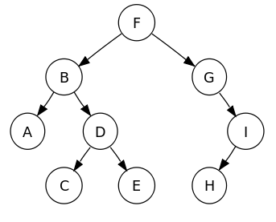
Pre-order
- Visit the root
- Pre order traverse the left subtree
- Pre order traverse the right subtree
Pre-order traversal of the tree gives: F B A D C E G I H
In-order
- In order traverse the left subtree
- Visit the root
- In order traverse the right subtree
In-order traversal of the tree gives: A B C D E F G H I
Post-order
- Post order traverse the left subtree
- Post order traverse the right subtree
- Visit the root
Post-order traversal of the tree gives: A C E D B H I G F
Binary Trees
A binary tree is a special case of a tree:
- Each node has at most two children (either 0, 1 or 2)
- The children of the node are an ordered pair (the left node is less than the right node)
A binary tree will always fulfil the following properties:
- $e = i+1$
- $n = 2e-1$
- $h \leq i$
- $h \leq (n-1)/2$
- $e \leq 2^h$
- $h \geq \log_2 e$
- $h \geq \log_2 (n+1) -1$
Where:
- $n$ is the number of nodes in the tree
- $e$ is the number of external nodes
- $i$ is the number of internal nodes
- $h$ is the height/max depth of the tree
Binary Tree ADT
The binary tree ADT is an extension of the normal tree ADT with extra accessor methods.
public interface BinaryTree<E> extends Tree<E>{
Node<E> left(Node<E> n); //returns the left child of n
Node<E> right(Node<E> n); //returns the right child of n
Node<E> sibling(Node<E> n); //returns the sibling of n
}
Arithmetic Expression Trees
Binary trees can be used to represent arithmetic expressions, with internal nodes as operators and external nodes as operands. The tree below shows the expression $(2 \times (a - 1)) + (3 \times b)$. Traversing the tree in-order will can be used to print the expression infix, and post-order evaluating each node with it's children as the operand will return the value of the expression.
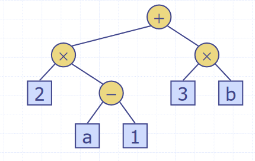
Implementations
- Binary trees can be represented in a linked structure, similar to a linked list
- Node objects are positions in a tree, the same as positions in a positional list
- Each node is represented by an object that stores
- The element
- A pointer to the parent node
- A pointer to the left child node
- A pointer to the right child node
- Alternatively, the tree can be stored in an array
A A[root]is 0- If p is the left child of q,
A[p] = 2 * A[q] + 1 - If p is the right child of q,
A[p] = 2 * A[q] + 2 - In the worst, case the array will have size $2^n -1$
Binary Search Trees
- Binary trees can be used to implement a sorted map
- Items are stored in order by their keys
- For a node $p$ with key $K_p$, every key in the left subtree is less than $K_p$, and every node in the right subtree is greater than $K_p$
- This allows for support of nearest-neighbour queries, so can fetch the key above or below another key
- Binary search can perform nearest neighbour queries on an ordered map to find a key in $O(\log n)$ time
- A search table is an ordered map implemented using a sorted sequence
- Searches take $O(\log n) time$
- Insertion and removal take $O(n)$ time
- Only effective for maps of small size
Methods
Binary trees are recursively defined, so all the methods operating on them are easily defined recursively also.
- Search
- To search for a key $K$
- Compare it with the key at $K_{root}$
- If $K_{root} = K$, the value has been found
- If $K_{root} < K$, search the right subtree
- If $K_{root} > K$, search the left subtree
- Insertion
- Search for the key being inserted $K$
- Insert $K$ at the leaf reached by the search
- Deletion
- Find the internal node that is follows the key being inserted in an in order traversal (the in order successor)
- Copy key into the in order successor node
- Remove the node copied out of
Performance
- Consider a binary search tree with $n$ items and height $h$
- The space used is $O(n)$
- The methods get, put, remove take $O(h)$ time
- The height h is $O(\log n)$ in the best case, when the tree is perfectly balanced
- In the worst case, when the tree is basically just a linked list, this decays to $O(n)$
AVL Trees
- AVL trees are balanced binary trees
- For every internal node $v$ of the tree, the heights of the subtrees of $v$ can differ by at most 1
- The height of an AVL tree storing $n$ keys is $O(\log n)$
- Balance is maintained by rotating nodes every time a new one is inserted/removed
Performance
- The runtime of a single rotation is $O(1)$
- The tree is assured to always have $h= \log n$, so the runtime of all methods is $O(\log n)$
- This makes AVL trees an efficient implementation of binary trees, as their performance does not decay as the tree becomes unbalanced
Priority Queues
A priority queue is an implementation of a queue where each item stored has a priority. The items with the highest priority are moved to the front of the queue to leave first. A priority queue takes a key along with a value, where the key is used as the priority of the item.
Priority Queue ADT
public interface PriorityQueue<K,V>{
int size();
boolean isEmpty();
void insert(K key, V value); //inserts a value into the queue with key as its priority
V removeMin(); //removes the entry with the lowest key (at the front of the queue)
V min(); //returns but not removes the smallest key entry (peek)
}
Entry Objects
- To store a key-value pair, a tuple/pair-like object is needed
- An
Entry<K,V>object is used to store each queue itemKeyis what is used to defined the priority of the item in the queueValueis the queue item
- This pattern is similar to what is used in maps
public class Entry<K,V>{
private K key;
private V value;
public Entry(K key, V value){
this.key = key;
this.value = value;
}
public K getKey(){
return key;
}
public V getValue(){
return value;
}
}
Total Order Relations
- Keys may be arbitrary values, so they must have some order defined on them
- Two entries may also have the same key
- A total order relation is a mathematical concept which formalises ordering on a set of objects where any 2 are comparable.
- A total ordering satisfies the following properties $\forall a,b,c \in X$
- $a \leq b$ or $b \leq a$
- Comparability property
- If $a \leq b$ $b \leq c$, then $a \leq c$
- Transitive property
- If $a \leq b$ and $b \leq a$, then $a = b$
- Antisymmetric property
- $a \leq a$
- Reflexive property
- $a \leq b$ or $b \leq a$
Comparators
- A comparator encapsulates the action of comparing two objects with a total order declared on them
- A priority queue uses a comparator object given to it to compare two keys to decide their priority
public class Comparator<E>{
public int compare(E a, E b){
if(a < b)
return -1;
if(a > b)
return 1;
return 0;
}
}
Implementations
Unsorted List-Based Implementation
A simple implementation of a priority queue can use an unsorted list
insert()just appends theEntry(key,value)to the list- $O(1)$ time
removeMin()andmin()linear search the list to find the smallest key (one with highest priority) to return- Linear search takes $O(n)$ time
Sorted List-Based Implementation
To improve the speed of removing items, a sorted list can instead be used. These two implementations have a tradeoff between which operations are faster, so the best one for the application is usually chosen.
insert()finds the correct place to insert theEntry(key,value)in the list to maintain the ordering- Has to find place to insert, takes $O(n)$ time
- As the list is maintained in order, the entry with the lowest key is always at the front, meaning
removeMin()andmin()just pop from the front- Takes $O(1)$ time
Sorting Using a Priority Queue
The idea of using a priority queue for sorting is that all the elements are inserted into the queue, then removed one at a time such that they are in order
- Selection sort uses an unsorted queue
- Inserting $n$ items in each $O(1)$ time takes $O(n)$ time
- Removing the elements in order
- $O(n) + O(n-1) + O(n-2) + ... + O(1)$
- Overall $O(n^2)$ time
- Insertion sort uses a sorted queue
- Runtimes are the opposite to unsorted
- Adding $n$ elements takes $O(1) + O(2) + O(3) + ... + O(n)$ time
- Removing $n$ elements in each $O(1)$ time takes $O(n)$ time
- Overall runtime of $O(n^2)$ again
Heaps
- A heap is a tree-based data structure where the tree is a complete binary tree
- Two kinds of heaps, min-heaps and max-heaps
- For a min-heap, the heap order specifies that for every internal node $v$ other than the root, $v \geq parent(v)$
- In other words, the root of the tree/subtree must be the smallest node
- This property is inverted for max heaps
- Complete binary tree means that every level of the tree, except possibly the last, is filled, and all nodes are as far left as possible.
- More formally, for a heap of height $h$, for $i = 0,1,...,h-1$ there are $2^i$ nodes of depth $i$
- At depth $h-1$, the internal nodes are to the left of the external nodes
- The last node of a heap is the rightmost node of maximum depth
- Unlike binary search trees, heaps can contain duplicates
- Heaps are also unordered data structures
- Heaps can be used to implement priority queues
- An
Entry(Key,Value)is stored at each node
- An

Insertion
- To insert a node
zinto a heap, you insert the node after the last node, makingzthe new last node- The last node of a heap is the rightmost node of max depth
- The heap property is then restored using the upheap algorithm
- The just inserted node is filtered up the heap to restore the ordering
- Moving up the branches starting from the
z- While
parent(z) > (z)- Swap
zandparent(z)
- Swap
- While
- Since a heap has height $\log, n$, this runs in $O(\log, n)$ time
Removal
- To remove a node
zfrom the heap, replace the root node with the last nodew - Remove the last node
w - Restore the heap order using downheap
- Filter the replacement node back down the tree
- While
wis greater than either of its children- Swap
wwith the smallest of its children
- Swap
- While
- Also runs in $O(\log, n)$ time
Heap Sort
For a sequence S of n elements with a total order relation on them, they can be ordered using a heap.
- Insert all the elements into the heap
- Remove them all from the heap again, they should come out in order
- $n$ calls of insert take $O(n \log, n)$ time
- $n$ calls to remove take $O(n \log, n)$ time
- Overall runtime is $O(n \log, n)$
- Much faster than quadratic sorting algorithms such as insertion and selection sort
Array-based Implementation
For a heap with n elements, the element at position p is stored at cell f(p) such that
- If
pis the root,f(p) = 0 - If
pis the left childq,f(p) = 2*f(q)+1 - If
pis the right childq,f(p) = 2*f(q)+2
Insert corresponds to inserting at the first free cell, and remove corresponds to removing from cell 0
- A heap with
nkeys has length $O(n)$
Skip Lists
- When implementing sets, the idea is to be able to test for membership and update elements efficiently
- A sorted array or list is easy to search, but difficult to maintain in order
- Skip lists consists of multiple lists/sets
- The skip list $S = \left{S_0, S_1, S_2,...,S_h \right}$
- $S_0$ contains all the elements, plus $\pm \infty$
- $S_i$ is a random subset of $S_{i-1}$, for $i = 1,2,...,h-1$
- Each element of $S_{i-1}$ appears in $S_i$ with probability 0.5
- $S_h$ contains only $\pm \infty$

Search
To search for an element $x$ in the list:
- Start in the first position of the top list
- At the current position $p$, compare $x$ with the next element in the current list $y$
- If $x=y$, return $y$
- If $x>y$, move to the next element in the list
- "Scan forward"
- If $x<y$, drop down to the element below
- "Drop down"
- If the end of the list ($+\infty$) is reached, the element does not exist
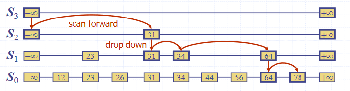
Insertion
To insert an element $k$ into the list:
- Repeatedly toss a fair coin until tails comes up
- $i$ is the number of times the coin came up heads
- If $i \geq h$, add to the skip list new lists $S_{h+1},...,S_{i+1}$
- Each containing only the two end keys $\pm \infty$
- Search for $k$ and find the positions $p_0, p_1, ... ,P_i$ of the items with the largest element $> k$ in each list $S_0, S_1, ..., S_i$
- Same as the search algorithm
- For $j = 0..i$, insert k into list $S_j$ after position $p_j$
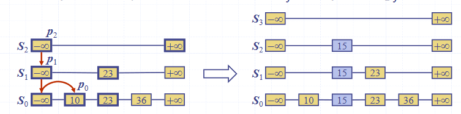
Deletion
To remove an entry $x$ from a skip list:
- Search for $x$ in the skip list and find the positions of the items $p_0, p_1, ..., p_i$ containing $x$
- Remove those positions from the lists $S_0,S_1,...,S_i$
- Remove a list if neccessary

Implementation
A skip list can be implemented using quad-nodes, where each node stores
- It's item/element
- A pointer to the node above
- A pointer to the node below
- A pointer to the next node
- A pointer to the previous node
Performance
- The space used by a skip list depends on the random number on each invocation of the insertion algorithm
- On average, the expected space usage of a skip list with $n$ items is $O(n)$
- The run time of the insertion is affected by the height $h$ of the skip list
- A skip list with $n$ items has average height $O(\log n)$
- The search time in a skip list is proportional to the number of steps taken
- The drop-down steps are bounded by the height of the list
- The scan-forward steps are bounded by the length of the list
- Both are $O(\log n)$
- Insertion and deletion are also both $O(\log n)$
Graphs
A graph is a collection of edges and vertices, a pair $(V,,E)$, where
- $V$ is a set of nodes, called vertices
- $E$ is a collection of pairs of vertices, called edges
- Vertices and edges are positions and store elements
Examples of graphs include routes between locations, users of a social network and their friendships, and the internet.
There are a number of different types of edge in a graph, depending upon what the edge represents:
- Directed edge
- Ordered pair of vertices $(u,v)$
- First vertex $u$ is the origin
- Second vertex $v$ is the destination
- For example, a journey between two points
- Undirected edge
- Unordered pair of vertices $(u,v)$
- In a directed graph, all edges are directed
- In an undirected graph, all edged are undirected
Graph Terminology

- Adjacent vertices
- Two vertices $U$ and $V$ are adjacent (ie connected by an edge)
- Edges incident on a vertex
- The edges connect to a vertex
- $a$, $d$, and $b$ are incident on $V$
- End vertices or endpoints of an edge
- The vertices connected to an edge
- $U$ and $V$ are endpoints of $a$
- The degree of a vertex
- The number of edges connected to it
- $X$ has degree 5
- Parallel edges
- Edges that make the same connection
- $h$ and $i$ are parallel
- Self-loop
- An edge that has the same vertex at both ends
- $j$ is a self-loop
- Path
- A sequence of alternating vertices and edges
- Begins and ends with a vertex
- Each edge is preceded and followed by its endpoints
- $P_1 = (V,b,X,h,Z)$ is a simple path
- Cycle
- A circular sequence of alternating vertices and edges
- A circular path
- A simple cycle is one where all edges and vertices are distinct
- A non-simple cycle contains an edge or vertex more than once
- A graph without cycles (acyclic) is a tree
- A circular sequence of alternating vertices and edges
- Length
- The number of edges in a path
- The number of edges in a cycle
Graph Properties
Notation:
- $n$ is the number of vertices
- $m$ is the number of edges
- $\deg(v)$ is the degree of vertex $v$
The sum of the degrees of the vertices of a graph is always an even number. Each edge is counted twice, as it connects to two vertices, so $\sum_v \deg(v) = 2m$. For example, the graph shown has $n = 4$ and $m = 6$. $\deg(v) = 3 \Rightarrow \sum_v \deg(v) = 2m = 12$

In an undirected graph with no self loops and no multiple edges, $m \leq n \frac{n-1}{2}$. Each vertex has degree at most $(n-1)$ and $\sum_v \deg(v) = 2m$. For the graph shown, $m = 6 \leq n \frac{n-1}{2} = 6 $
The Graph ADT
A graph is a collection of vertices and edges, which are modelled as a combination of 3 data types: Vertex, Edge and Graph.
- A
Vertexis just a box object storing an element provided by the user - An
Edgealso stores an associated value which can be retrieved
public interface Graph{
int numVertices();
Collection vertices(); //returns all the graph's vertices
int numEdges();
Collection<Edge> edges(); //returns all the graph's edges
Edge getEdge(u,v); //returns the edge between u and v, if on exists
// for an undirected graph getEdge(u,v) == getEdge(v,u)
Pair<Vertex, Vertex> endVertices(e); //returns the endpoint vertices of edge e
Vertex oppsite(v,e); //returns the vertex adjacent to v along edge e
int outDegree(v); //returns the number of edges going out of v
int inDegree(v); //returns the number of edges coming into v
//for an undirected graph, inDegree(v) == outDegree(v)
Collection<Vertex> outgoingEdges(v); //returns all edges that point out of vertex v
Collection<Vertex> incomingEdges(v); //returns all edges that point into vertex v
//for an undirected graph, incomingEdges(v) == outgoingEdges(v)
Vertex insertVertex(x); //creates and returns a new vertex storing element x
Edge insertEdge(u,v,x); //creates and returns a new edge from vertices u to v, storing element x in the edge
void removeVertex(v); //removes vertex v and all incident edges from the graph
void removeEdge(e); //removes edge e from the graph
}
Representations
There are many different ways to represent a graph in memory.
Edge List
An edge list is just a list of edges, where each edge knows which two vertices it points to.
- The
Edgeobject stores- It's element
- It's origin
Vertex - It's destination
Vertex
- The edge list stores a sequence of
Edgeobjects
Adjacency List
In an adjacency list, each vertex stores an array of the vertices adjacent to it.
- The
Vertexobject stores- It's element
- A collection/array of all it's incident edges
- The adjacency list stores all
VertexObjects
Adjacency Matrix
An adjacency matrix is an $n \times n$ matrix, where $n$ is the number of vertices in the graph. It acts as a lookup table, where each cell corresponds to an edge between two vertices.
- If there is an edge between two vertices $u$ and $v$, the matrix cell $(u ,, v)$ will contain the edge.
- Undirected graphs are symmetrical along the leading diagonal
Subgraphs
- A subgraph $S$ of a graph $G$ is a graph such that:
- The vertices of $S$ are a subset of the vertices of $G$
- The edges of $S$ are a subset of the edges of $G$
- A spanning subgraph of $G$ is a subgraph that contains all the vertices of $G$
- A graph is connected if there is a path between every pair of vertices
- A tree is an undirected graph $T$ such that
- $T$ is connected
- $T$ has no cycles
- A forest is an undirected graph without cycles
- The connected components of a forest are trees

- A spanning tree of a connected graph is a spanning subgraph that has all vertices covered with a minimum possible number of edges
- A spanning tree is not unique unless the graph is a tree
- Multiple spanning trees exist
- Spanning trees have applications in the design of communication networks
- A spanning forest of a graph is a spanning subgraph that is a forest
- A spanning tree is not unique unless the graph is a tree
Depth First Search
DFS is a general technique for traversing a graph. A DFS traversal of a graph $G$ will:
- Visit all vertices and edges of $G$
- Determine whether $G$ is connected
- Compute the spanning components of $G$
- Compute the spanning forest of $G$
DFS on a graph with $n$ vertices and $m$ edges takes $O(n+m)$ time. The algorithm is:
- For a graph $G$ and a vertex $u$ of $G$
- Mark vertex $u$ as visited
- For each of $u$'s outgoing edges $e = (u,v)$
- If $v$ has not been visited then
- Record $e$ as the discovery edge for vertex $v$
- Recursively call DFS with on $v$
- If $v$ has not been visited then
DFS(G,V) visits all vertices and edges in the connected component of v, and the discovery edges labelled by DFS(G,V) form a spanning tree of the connected component of v.
DFS can also be extended to path finding, to find a path between two given vertices $u$ and $v$. A stack is used to keep track of the path, and the final state of the stack is the path between the two vertices. As soon as the destination vertex $v$ is encountered, the contents of the stack is returned.
DFS can be used for cycle detection too. A stack is used to keep track of the path between the start vertex and the current vertex. As soon as a back edge $(v,w)$ (an edge we have already been down in the opposite direction) is encountered, we return the cycle as the portion of the stack from the top to the vertex $w$.
To perform DFS on every connected component of a graph, we can loop over every vertex, doing a new DFS from each unvisited one. This will detect all vertices in graphs with multiple connected components.
Breadth First Search
BFS is another algorithm for graph traversal, similar to DFS. It also requires $O(n + m)$ time. The difference between the two is that BFS uses a stack while DFS uses a queue. The algorithm is as follows:
- Mark all vertices and edges as unexplored
- Create a new queue
- Add the starting vertex $s$ to the queue
- Mark $s$ as visited
- While the queue is not empty
- Pop a vertex $v$ from the queue
- For all neighbouts $w$ of $v$
- If $w$ is not visited
- Push $w$ into the queue
- Mark $w$ as visited
- If $w$ is not visited
For a connected component $G_s$ of graph $G$ containing $s$:
- BFS visits all vertices and edges of $G_s$
- The discovery edges labelled by
BFS(G,s)form a spanning tree of $G_s$ - The path of the spanning tree formed by the BFS is the shortest path between the two vertices
BFS can be specialised to solve the following problems in $O(n+m)$ time:
- Compute the connected components of a graph
- Compute a spanning forest of a graph
- Find a simple cycle in G
- Find the shortest path between two vertices
- DFS cannot do this, this property is unique to BFS
Directed Graphs
A digraph (short for directed graph) is a graph whose edges are all directed.
- Each edge goes in only one direction
- Edge $(a,b)$ goes from a to b but not from b to a
- If the graph is simple and has $n$ vertices and $m$ edges, $m \leq n \frac{n-1}{2}$
- DFS and BFS can be specialised to traversing directed edges
- A directed DFS starting at a vertex $s$ determines the vertices reachable from $s$
- One vertex is reachable from another if there is a directed path to it
Strong Connectivity
A digraph is said to be strongly connected if each vertex can reach all other vertices. This property can be identified in $O(n+m)$ time with the following algorithm:
- Pick a vertex $v$ in the graph $G$
- Perform a DFS starting from $v$
- If theres a vertex not visited, return false
- Let $G'$ be $G$ with all the edge directions reversed
- Perform a DFS starting from $v$ in $G'$
- If theres a vertex not visited, return false
- Else, return True
Transitive Closure
Given a digraph $G$, the transitive closure of $G$ is the digraph $G*$ such that:
- $G*$ has the same vertices as $G$
- If $G$ has a directed path from $u$ to $v$, then G* also has a directed *edge* from $u$ to $v$
- In $G*$, every pair of vertices with a path between them in $G$ is now adjacent
- The transitive closure provides reachability information about a digraph

The transitive closure can be computed by doing a DFS starting at each vertex. However, this takes $O(n(n+m))$ time. Alternatively, there is the Floyd-Warshall algorithm:
- For the graph $G$, number the vertices $1,2,...,n$
- Compute the graphs $G_0, ..., G_n$
- $G_0 = G$
- $G_k$ has directed edge $(v_i,v_j)$ if $G$ has a directed path from $v_i$ to $v_j$ with intermediate vertices ${v_1, ..., v_k}$
- Digraph $G_k$ is computed from $G_{k-1}$
- $G_n = G*$
- Add $(v_i,v_j)$ if edges $(v_i,v_k)$ and $(v_k,v_j)$ appear in $G_{k-1}$
In pseudocode:
for k=1 to n
Gk = Gk_1
for i=1 to n (i != k)
for j=1 to n (j != i, j!=k)
if G_(k-1).areAdjacent(vi,vk) && G_(k-1).areAdjacent(vk,vj)
if !G_(k-1).areAdjacent(vi,vj)
G_k.insertDirectedEdge(vi,vj,k)
return G_n
This algorithm takes $O(n^3)$ time. Basically, at each iteration a new vertex is introduced, and each vertex is checked to see if a path exists through the newly added vertex. If it does, a directed edge is inserted to transitively close the graph.
Topological Ordering
- A Directed Acyclic Graph (DAG) is digraph that has no directed cycles
- A topological ordering of a digraph is a numbering $v_1, v_2, ..., v_n$ of the vertices such that for every edge $(v_i, v_j)$, $i < j$
- The vertex it points to is always greater than it
- A digraph can have a topological ordering if and only if it is a DAG
A topological ordering can be calculated using a DFS:
public static void topDFS(Graph G, Vertex v){
v.visited = true
for(Edge e: v.edges){
w = opposite(v,e)
if(w.visited = false)
topDFS(G,w)
else{
v.label = n
n = n-1
}
}
}
The first node encountered in the DFS is assigned $n$, the one after that $n-1$, and so on until all nodes are labelled.

CS132
Note that specifics details of architectures such as the 68k, its specific instruction sets, or the PATP are not examinable. They are included just to serve as examples.
The 68008 datasheet can be found here, as a useful resource.
Digital Logic
Digital logic is about reasoning with systems with two states: on and off (0 and 1 (binary)).
Basic Logic Functions
Some basic logic functions, along with their truth tables.
NOT
$$f = \bar A$$
| A | f |
|---|---|
| 0 | 1 |
| 1 | 0 |
AND
$$f = A \cdot B$$
| A | B | f |
|---|---|---|
| 0 | 0 | 0 |
| 0 | 1 | 0 |
| 1 | 0 | 0 |
| 1 | 1 | 1 |
OR
$$f = A + B$$
| A | B | f |
|---|---|---|
| 0 | 0 | 0 |
| 0 | 1 | 1 |
| 1 | 0 | 1 |
| 1 | 1 | 1 |
XOR
$$f = A \oplus B$$
| A | B | f |
|---|---|---|
| 0 | 0 | 0 |
| 0 | 1 | 1 |
| 1 | 0 | 1 |
| 1 | 1 | 0 |
NAND
$$f = \overline{A \cdot B}$$
| A | B | f |
|---|---|---|
| 0 | 0 | 1 |
| 0 | 1 | 1 |
| 1 | 0 | 1 |
| 1 | 1 | 0 |
NOR
$$f = \overline{A + B}$$
| A | B | f |
|---|---|---|
| 0 | 0 | 1 |
| 0 | 1 | 0 |
| 1 | 0 | 0 |
| 1 | 1 | 0 |
X-NOR
$$f = \overline{A \oplus B}$$
| A | B | f |
|---|---|---|
| 0 | 0 | 1 |
| 0 | 1 | 0 |
| 1 | 0 | 0 |
| 1 | 1 | 1 |
Logic Gates
Logic gates represent logic functions in a circuit. Each logic gate below represents one of the functions shown above.

Logic Circuits
Logic circuits can be built from logic gates, where outputs are logical functions of their inputs. Simple functions can be used to build up more complex ones. For example, the circuit below implements the XOR function.
$$f = \bar A \cdot B + A \cdot \bar B$$

Another example, using only NAND gates to build XOR. NAND (or NOR) gates can be used to construct any logic function.

Truth tables can be constructed for logic circuits by considering intermediate signals. The circuit below has 3 inputs and considers 3 intermediate signals to construct a truth table.

$$ P = A \cdot B \ Q = A \cdot B\ R = A \cdot C \ $$
$$f = P + Q + R = A \cdot B + A \cdot B + A \cdot C$$
| A | B | C | P | Q | R | f |
|---|---|---|---|---|---|---|
| 0 | 0 | 0 | 0 | 0 | 0 | 0 |
| 0 | 0 | 1 | 0 | 0 | 0 | 0 |
| 0 | 1 | 0 | 0 | 0 | 0 | 0 |
| 0 | 1 | 1 | 0 | 1 | 0 | 1 |
| 1 | 0 | 0 | 0 | 0 | 0 | 0 |
| 1 | 0 | 1 | 0 | 0 | 1 | 1 |
| 1 | 1 | 0 | 1 | 0 | 0 | 1 |
| 1 | 1 | 1 | 1 | 1 | 1 | 1 |
Truth tables of circuits are important as they enumerate all possible outputs, and help to reason about logic circuits and functions.
Boolean Algebra
- Logic expressions, like normal algebraic ones, can be simplified to reduce complexity
- This reduces the number of gates required for their implementation
- The less gates, the more efficient the circuit is
- More gates is also more expensive
- Sometimes, only specific gates are available too and equivalent expressions must be found that use only the available gates
- Two main ways to simplify expressions
- Boolean algebra
- Karnaugh maps
- The truth table for the expression before and after simplifying must be identical, or you've made a mistake
Expressions from Truth Tables
A sum of products form of a function can be obtained from it's truth table directly.
| A | B | C | f |
|---|---|---|---|
| 0 | 0 | 0 | 1 |
| 0 | 0 | 1 | 1 |
| 0 | 1 | 0 | 0 |
| 0 | 1 | 1 | 0 |
| 1 | 0 | 0 | 1 |
| 1 | 0 | 1 | 0 |
| 1 | 1 | 0 | 1 |
| 1 | 1 | 1 | 1 |
Taking only the rows that have an output of 1:
- The first row of the table: $\bar A \cdot \bar B \cdot \bar C$
- The second row: $\bar A \cdot \bar B \cdot C$
- Fifth: $ A \cdot \bar B \cdot \bar C$
- Seventh: $ A \cdot B \cdot \bar C$
- Eight: $A \cdot B \cdot C$
Summing the products yields:
$$f = (\bar A \cdot \bar B \cdot \bar C) + (\bar A \cdot \bar B \cdot C) + (A \cdot \bar B \cdot \bar C) + (A \cdot B \cdot \bar C) + (A \cdot B \cdot C)$$
Boolean Algebra Laws
There are several laws of boolean algebra which can be used to simplify logic expressions:
| Name | AND form | OR form |
|---|---|---|
| Identity Law | $1A = A$ | $0 + A = A$ |
| Null Law | $0A = A$ | $1 + A = 1$ |
| Idempotent Law | $AA = A$ | $A + A = A$ |
| Inverse Law | $A\bar A = 0$ | $A + \bar A = 1$ |
| Commutative Law | $AB = BA$ | $A + B = B + A$ |
| Associative Law | $(AB)C = A(BC) = ABC$ | $(A + B) + C = A + (B+C) = A + B + C$ |
| Distributive Law | $A + BC = (A+B)(A+C)$ | $A(B+C) = AB + AC$ |
| Absorption Law | $A(A+B) = A$ | $A + AB = A$ |
| De Morgan's Law | $\overline{A\cdot B} = \bar A + \bar B$ | $\overline{A + B} = \bar A \cdot \bar B$ |
- Can go from AND to OR form (and vice versa) by swapping AND for OR, and 0 for 1
Most are fairly intuitive, but some less so. The important ones to remember are:
- $A + BC = (A+B)(A+C)$
- $A(B+C) = AB + AC$
- $A(A+B) = A$
- $A + AB = A$
De Morgan's Laws
De Morgan's Laws are very important and useful ones, as they allow to easily go from AND to OR. In simple terms:
- Break the negation bar
- Swap the operator
Example 1
When doing questions, all working steps should be annotated.
$$f = (\overline{X + Y}) \cdot (\overline{\bar X + Y}) $$ $$f = (\bar X \cdot \bar Y) \cdot (\overline{\bar X + Y}) \quad \text{De Morgan OR form}$$ $$f = (\bar X \cdot \bar Y) \cdot (X \cdot \bar Y) \quad \text{De Morgan AND form}$$ $$f = \bar X \cdot \bar Y \cdot X \cdot \bar Y \quad \text{Remove brackets (associative law)}$$ $$f = \bar X \cdot X \cdot \bar Y \cdot \bar Y \quad \text{Re-order (commutative law)}$$ $$f = 0 \cdot \bar Y \quad \text{Inverse and idempotent laws}$$ $$f = 0 \quad \text{Null law}$$
Example 2
$$f = X + \bar Y + \bar X \cdot Y + (X + \bar Y) \cdot \bar X \cdot Y $$ $$f = X + \bar Y + \bar X \cdot Y + X \cdot \cdot \bar X \cdot Y + \bar Y \cdot \bar X \cdot Y \quad \text{Distributive law}$$ $$f = X + \bar Y + \bar X \cdot Y + 0 + 0 \quad \text{Inverse AND law}$$ $$f = X + (\bar Y + \bar X)(\bar Y + Y) \quad \text{Distributive law}$$ $$f = X + (\bar Y + \bar X)\cdot 1 \quad \text{Inverse law}$$ $$f = X + \bar Y + \bar X \quad \text{Removing 1 and brackets (identity and associative laws)}$$ $$f = \bar Y + 1 \quad \text{Inverse OR law}$$ $$f= 1 \quad \text{Null law}$$
Karnaugh Maps
- Karnaugh Maps (k-maps) are sort of like a 2D- truth table
- Expressions can be seen from the location of 1s in the map
| A | B | f |
|---|---|---|
| 0 | 0 | a |
| 0 | 1 | b |
| 1 | 0 | d |
| 1 | 1 | c |

- Functions of 3 variables can used a 4x2 or 2x4 map (4 variables use a 4x4 map)

- Adjacent squares in a k-map differ by exactly 1 variable
- This makes the map gray coded
- Adjacency also wraps around
The function $f = AB\bar C D + A \bar B \bar C D + \bar A \bar B C D + \bar A B C D$ is shown in the map below.

Grouping
- Karnaugh maps contain groups, which are rectangular clusters of 1s -
- To simplify a logic expression from a k-map, identify groups from it, making them as large and as few as possible
- The number of elements in the group must be a power of 2
- Each group can be described by a singular expression
- The variables in the group are the ones that are constant within the group (ie, define that group)

Sometimes, groups overlap which allow for more than one expression

The function for the map is therefore either $f =\bar A \bar B \bar C + \bar A B D + B C D $ or $ f = \bar A \bar B \bar C + \bar A \bar C D + B C D $ (both are equivalent)
Sometimes it is not possible to minimise an expression. the map below shows an XOR function $f = (A \oplus B) \oplus (C \oplus D)$

Don't Care Conditions
Sometimes, a certain combination of inputs can't happen, or we dont care about the output if it does. An X is used to denote these conditions, which can be assumed as either 1 or 0, whichever is more convenient.

Combinatorial Logic Circuits
Some useful circuits can be constructed using logic gates, examples of which are shown below. Combinatorial logic circuits operate as fast as the gates operate, which is theoretically zero time (realistically, there is a nanosecond-level tiny propagation delay).
1-Bit Half Adder
- Performs the addition of 2 bits, outputting the result and a carry bit.

| A | B | Sum | Carry |
|---|---|---|---|
| 0 | 0 | 0 | 0 |
| 0 | 1 | 1 | 0 |
| 1 | 0 | 1 | 0 |
| 1 | 1 | 0 | 1 |
1-Bit Full Adder
- Adds 2 bits plus carry bit, outputting the result and a carry bit.

| Carry in | A | B | Sum | Carry out |
|---|---|---|---|---|
| 0 | 0 | 0 | 0 | 0 |
| 0 | 0 | 1 | 0 | 1 |
| 0 | 1 | 0 | 0 | 1 |
| 0 | 1 | 1 | 1 | 0 |
| 1 | 0 | 0 | 0 | 1 |
| 1 | 0 | 1 | 1 | 0 |
| 1 | 1 | 0 | 1 | 0 |
| 1 | 1 | 1 | 1 | 1 |
N-Bit Full Adder
- Combination of a number of full adders
- The carry out from the previous adder feeds into the carry in of the next

N-Bit Adder/Subtractor
- To convert an adder to an adder/subtractor, we need a control input $Z$ such that:
- $Z = 0 \Rightarrow S = A + B$
- $Z = 1 \Rightarrow S = A - B$
- $-B$ is calculated using two's complement
- Invert the N bit binary number B by doing $Z \oplus B$
- Add 1 (make the starting carry in a 1)

Encoders & Decoders
- A decoder has binary input pins, and one output pin per possible input state
- eg 2 inputs has 4 unique states so has 4 outputs
- 3 inputs has 8 outputs
- Often used for addressing memory
- The decoder shown below is active low
- Active low means that 0 = active, and 1 = inactive
- Converse to what would usually be expected
- Active low pins sometimes labelled with a bar, ie $\overline{\text{enable}}$
- Active low means that 0 = active, and 1 = inactive
- It is important to be aware of this, as ins and outs must comform to the same standard

| $X_0$ | $X_1$ | $Y_0$ | $Y_1$ | $Y_2$ | $Y_3$ |
|---|---|---|---|---|---|
| 0 | 0 | 0 | 1 | 1 | 1 |
| 0 | 1 | 1 | 0 | 1 | 1 |
| 1 | 0 | 1 | 1 | 0 | 1 |
| 1 | 1 | 1 | 1 | 1 | 0 |
- Encoders are the opposite of decoders, encoding a set of inputs into outputs
- Multiple input pins, only one should be active at a time
- Active low encoder shown below

| $Y_0$ | $Y_1$ | $Y_2$ | $Y_3$ | $X_0$ | $X_1$ |
|---|---|---|---|---|---|
| 0 | 1 | 1 | 1 | 0 | 0 |
| 1 | 0 | 1 | 1 | 0 | 1 |
| 1 | 1 | 0 | 1 | 1 | 0 |
| 1 | 1 | 1 | 0 | 1 | 1 |
Multiplexers & De-Multiplexers
Multiplexers have multiple inputs, and then selector inputs which choose which of the inputs to put on the output.

| $S_0$ | $S_1$ | Y |
|---|---|---|
| 0 | 0 | $X_0$ |
| 0 | 1 | $X_1$ |
| 1 | 0 | $X_2$ |
| 1 | 1 | $X_3$ |
$$Y = X_0 \bar S_0 \bar S_1 + X_1 \bar S_0 S_1 + X_2 S_0 \bar S_1 + X_3 S_0 S_1$$
De-Multiplexers are the reverse of multiplexers, taking one input and selector inputs choosing which output it appears on. The one shown below is active low

| $S_0$ | $S_1$ | $Y_0$ | $Y_1$ | $Y_2$ | $Y_3$ |
|---|---|---|---|---|---|
| 0 | 0 | A | 1 | 1 | 1 |
| 0 | 1 | 1 | A | 1 | 1 |
| 1 | 0 | 1 | 1 | A | 1 |
| 1 | 1 | 1 | 1 | 1 | A |
$$Y_0 = A + \bar S_0 S_1 + S_0 \bar S_1 + S_0 S_1 = A + S_1 + S_0$$
Multiplexers and De-Multiplexers are useful in many applications:
- Source selection control
- Share one communication line between multiple senders/receivers
- Parallel to serial conversion
- Parallel input on X, clock signal on S, serial output on Y
Sequential Logic Circuits
A logic circuit whose outputs are logical functions of its inputs and it's current state
Flip-Flops
Flip-flops are the basic elements of sequential logic circuits. They consist of two nand gates whose outputs are fed back to the inputs to create a bi-stable circuit, meaning it's output is only stable in two states.

- $\bar S$ and $\bar R$ are active low set and reset inputs
- $Q$ is set high when $\bar S = 0$ and $\bar R = 1$
- $Q$ is reset (to zero) when $\bar R = 0$ and $\bar S = 1$
- If $\bar S = \bar R = 1$ then $Q$ does not change
- If both $\bar S$ and $\bar R$ are zero, this is a hazard condition and the output is invalid
| $\bar S$ | $\bar R$ | Q | P |
|---|---|---|---|
| 0 | 0 | X | X |
| 0 | 1 | 1 | 0 |
| 1 | 0 | 0 | 1 |
| 1 | 1 | X | X |
The timing diagram shows the operation of the flip flop

D-Type Latch
A D-type latch is a modified flip-flop circuit that is essentially a 1-bit memory cell.

- Output can only change when the enable line is high
- $D=Q$ when enabled, otherwise $Q$ does not change ($Q=Q$)
- When enabled, data on $D$ goes to $Q$
| Enable | $D$ | $Q$ | $\bar Q$ |
|---|---|---|---|
| 0 | 0 | $Q$ | $\bar Q$ |
| 0 | 1 | $Q$ | $\bar Q$ |
| 1 | 0 | 0 | 1 |
| 1 | 1 | 1 | 0 |
Clocked Flip-Flop
There are other types of clocked flip-flop whose output only changes on the rising edge of the clock input.
- $\uparrow$ means rising edge responding

N-bit Register
- A multi-bit memory circuit built up from d-type latches
- The number on $A_{N-1}, A_{N-2},..., A_1, A_0$ is stored in the registers when the clock rises
- The stored number appears on the outputs $Q$
- $Q$ cannot change unless the circuit is clocked
- Parallel input, parallel output

N-bit Shift Register
- A register that stores and shifts bits taking one bit input at a time
- Serial input, parallel output
- When a clock transition occurs, each bit in the register will be shifted one place
- Useful for serial to parallel conversion

N-bit Counter
- The circles on the clock inputs are inverted on all but the first
- Each flip-flop is triggerd on a high -> low transition of the previous flip-flop
- Creates a counter circuit

Output is 0000, 1000, 0100, 1100, 0010, etc...
- The first bit swaps every clock
- 2nd bit swaps every other clock
- 3rd bit swaps every fourth clock
- etc...
Three State Logic
- Three state logic introduces a third state to logic - unconnected
- A three-state buffer has an enable pin, which when set high, disconnects the output from the input
- Used to prevent connecting outputs to outputs, as this can cause issues (short circuits)

This can be used to allow different sources of data onto a common bus. Consider a 4-bit bus, where 2 4-bit inputs are connected using 3-state buffers. Only one of the buffers should be enabled at any one time.

- When $\overline{E1} = 0$, A will be placed on the bus
- When $\overline{E2} = 0$, B will be placed on the bus
Physical Implementations
Logic gates are physical things with physical properties, and these have to be considered when designing with them. Typical voltage values for TTL (Transistor-Transistor Logic):
- 5v - max voltage
- 2.8v - minimum voltage for a logical 1
- 2.8-0.8v - "forbidden region", ie voltages in this region are undefined
- 0.8-0v - voltage range for a logical 0
Propagation Delay
- Logic gates have a propagation delay, the amount of time it takes for the output to reflect the input
- Typically a few nanoseconds or less
- This limits the speed at which logic circuits can operate
- Delay can be reduced by increasing density of gates on an IC
Integrated Circuits
- Elementary logic gates can be obtained in small ICs
- Programmable deviced allow large circuits to be created inside a single chip
- PAL - Programmable Array Logic
- One-time programmamble
- PLA - Programmable Logic Array
- Contains an array of AND and OR gates to implement any logic functions
- FPGA - Field Programmable Gate Array
- Contains millions of configurable gates
- More modern
- PAL - Programmable Array Logic
PLA example
A PLA allows for the implementation of any sum-of-products function, as it has an array of AND gates, then OR gates, with fuses that can be broken to implement a specific function.

Assembly
Microprocessor Fundamentals
The CPU
- The CPU controls and performs the execution of instructions
- Does this by continuously doing fetch-decode-execute cycle
- Very complex, but two key components
- Control Unit (CU)
- Decodes the instructions and handles logistics
- Arithmetic Logic Unit (ALU)
- Does maths
- Control Unit (CU)
Fetch-Decode-Execute
- Three steps to every cycle
- Fetch instructions from memory
- Decode into operations to be performed
- Execute to change state of CPU
- Takes place over several clock cycles
The components of the CPU that are involved in the cycle:
- ALU
- CU
- Program Counter (PC)
- Tracks the memory address of the next instruction to be executed
- Instruction Register (IR)
- Contains the most recent instruction fetched
- Memory Address Register (MAR)
- Contains address of the memory location to be read/written
- Memory Data/Buffer Register (MDR/MBR)
- Contains data fetched from memory or to be written to memory
The steps of the cycle:
- Fetch
- Instruction fetched from memory location held by PC
- Fetched instruction stored in IR
- PC incremented to point to next instruction
- Decode
- Retrieved instruction decoded
- Establish opcode type
- Execute
- CU signals the necessary CPU components
- May result in changes to data registers, ALU, I/O, etc
The 68008
The 68008 is an example of a CPU. The "programmer's model" is an abstraction that represents the internals of the architecture. The internal registers as shown below are part of the programmer's model.

- Internal registers are 32 bits wide
- Internal data buses are 16 bit wide
- 8 bit external data bus
- 20 bit external address bus
- D0-D7 are 32 bit registers used to store frequently used values
- Can be long (32 bits), word (16 bits), or byte (8 bits)
- Status register (CCR) consists of 2 8-bit registers
- Various status bits are set or reset depending upon conditions arising from execution
- A0-A6 are pointer registers
- A7 is system stack pointer to hold subroutine return addresses
- Operations on addresses do not alter status register/ CCR
- Only ALU can incur changes in status
- The stack pointer is a pointer to the next free location in the system stack
- Provides temporary storage of state, return address, registers, etc during subroutine calls and interrupts
The diagram shows the internal architecture of the CPU, and how the internal registers are connected via the buses. Note how and which direction data moves in, as indicated by the arrows on the busses.

Register Transfer Language
The fetch-decode-execute cycle is best described using Register Transfer Language (RLT), a notation used to show how data moves around the internals of a processor and between registers.
- For example
[MAR] <- [PC]denotes the transfer of the contents of the program counter to the memory address register - Computer's main memory is called Main Store (MS), and the contents of memory location
Nis denoted[MS(N)] - RLT does not account for the pipelining of instructions
- Fetching an instruction in RTL:
| RLT | Meaning |
|---|---|
[MAR] <- [PC] | Move contents of PC to MAR |
[PC] <- [PC] + 1 | Increment PC |
[MBR] <- [MS([MAR])] | Read address from MAR into MBR. |
[IR] <- [MBR] - | Load instruction into I |
CU <- [IR(opcode)] | Decode the instruction |
Assembly Language
- Assembly is the lowest possible form of code
- High level code (for example C) is compiled to assembly code
- Assembly is then assembled into machine code (binary)
- Assembly instructions map 1:1 to processor operations
- Uses mnemonics for instructions, ie
MOVorADD - Languages vary, but format tends to be similar:
LABEL: OPCODE OPERAND(S) | COMMENT
An example program is shown below
ORG $4B0 | this program starts at hex 4B0
move.b #5, D0 | load D0 with number 5
add.b #$A, D0 | add 10 (0x0A) to D0
move.b D0, ANS | move contents of D0 to ANS
ANS: DS.B 1 | leave 1 byte of memory empty and name it ANS
#indicates a literal$means hexadecimal%means binary- A number without a prefix is a memory address
ANSis a symbolic nameORG(Origin) indicates where to load the program in memoryDS(Define Storage) tells the assembler where to put data
The 68008 Instruction Set
- Instructions are commands that tell the processor what to do
- 5 main kinds of instructions
- Logical
- Bitwise operations
AND,LSL(Logical Shift Left)
- Branch
- Cause the processor to jump execution to a labelled address
- Condition is specified by testing state of CCR set by previous instruction
BRA- branch unconditionallyBEQ- branch if equal
- System Control
- Logical
- Instructions are also specified with their data type,
.bfor byte,.wfor word,.lfor longmove.wmoves 2 bytes
Data Movement
- Similar to RTL
move.b D0, D1 | [D1(0:7)] <- [D0(0:7)]
move.w D0, D1 | [D1(0:15)] <- [D0(0:15)]
swap D2 | swap lower and upper words
move.l $F20, D3 | [D3(24:31)] ← [MS($F20)]
| [D3(16:23)] ← [MS($F21)]
| [D3( 8:15)] ← [MS($F22)]
| [D3( 0:7)] ← [MS($F23)]
| copied 8 bytes at a time in big endian order
Arithmetic
- Maths performed on the ALU
- The 68008, like many older processors, has no FPU, so only integer operations are supported
add.l Di, Dj | [Dj] ← [Di] + [Dj]
addx.w Di, Dj | also add in x bit from CCR
sub.b Di, Dj | [Dj] ← [Dj] - [Di]
subx.b Di, Dj | also subtract x bit from CCR
mulu.w Di, Dj | [Dj(0:31)] ← [Di(0:15)] * [Dj(0:15)]
| unsigned multiplication
muls.w Di, Dj | signed multiplication
Logical
- Perform bitwise operations on data
- Also done by ALU
- AND, OR, etc but also shifts and rotates
- Logical shift (
LSL/LSR) adds a 0 when shifting- Bit shifted out goes into C and X
- Arithmetic shift preserves sign bit (
ASL/ASR) - Normal rotate (
ROL/ROR) moves the top of the bit to the bottom bit and also puts the top bit into C and X - Rotate through X (
ROXL/ROXR) rotates the value through the X register
AND.B #$7F, D0 | [D0] <- [D0] . [0x7F]
OR.B D1, D0 | [D0] <- [D0] + [D1]
LSL D0, 2 | [D0] <- [D0] << [2]
Branch
- Cause the processor to move execution to a new pointer (jump/GOTO)
- Instruction tests the state of the CCR bits against certain condition
- Bits set by previous instructions
BRA | branch unconditionally
BCC | branch on carry clear
BEQ | branch on equal
System Control
- Certain instructions used to issue other commands to the microprocessor
Subroutines and Stacks
- Subroutines are useful for frequently used sections of code for obvious reasons
- Can jump and return from subroutines in assembly
JSR <label>- Jump to SubroutineRTS- Return from Subroutine
- When returning, need to know where to return to
- The stack is used as a LIFO data structure to store return addresses
JSRpushes the contents of the PC on the stackRTSpops the return address from the stack to the PC- Can nest subroutine calls and stack will keep track
Addressing Modes
- Addressing modes are how we tell the computer where to find the data it needs
- 5 Kinds in the 68006, and many other processors have equivalents
- Direct
- Immediate
- Absolute
- Address Register Indirect
- 5 variations
- Relative
Direct Addressing
- Probably the simplest
- The address of an operand is specified by either a data or address register
move D3, D2 | [D2] <- [D3]
move D3, A2 | [A2] <- [D3]
Immediate Addressing
- The operand forms part of the instruction (is a literal) and remains a constant
- Note the prefix
#specifying a literal and the prefix specifying the base of the number
move.b #$42, D5 | [D5] <- $42
Absolute Addressing
- Operand specifies the location in memory
- Does not allow for position-independent code: will always access the exact address given
move.l D2, $7FFF0 | [MS(7FFF0)] <- [D2]
Address Register Indirect Addressing
- Uses offsets/increments/indexing to address memory based upon the address registers
- Bad, rarely used
- Not examinable
Relative Addressing
- Specifies an offset relative to the program counter
- Can be used to write position independent code
move 16(PC), D3 | [D3] <- [MS(PC + 16)]
Memory Systems
The Memory Hierarchy
- Memory systems must facilitate the reading and writing of data
- Many factors influence the choice of memory technology
- Frequency of access
- Access time
- Capacity
- Cost
- Memory wants to be low cost, high capacity, and also fast
- As a tradeoff, we organise memory into a hierarchy
- Allows for some high speed, some high capacity

- Data has to be dragged up the hierarchy
- Memory access is somewhat predictable
- Temporal locality - when a location accessed, likely the same location will be accessed again in the near future
- Spatial locality - when a location accessed, likely that nearby locations will be referenced in the near future
- 90% of memory access is within 2Kb of program counter
Semiconductor Memory Types
| Memory Type | Category | Erasure | Write Mechanism | Volatility |
|---|---|---|---|---|
| Random Access Memory (RAM) | Read-Write | Electronically, at byte-level | Electronically written | Volatile |
| Read Only Memory (ROM) | Read only | Not possible | Mask Written | Non-volatile |
| Programmable ROM (PROM) | Read only | Not possible | Electronically written | Non-volatile |
| Erasable PROM (EPROM) | Read (mostly) | UV light at chip level | Electronically written | Non-volatile |
| Electrically Erasable PROM (EEPROM) | Read (mostly) | Electronically, at byte-level | Electronically written | Non-volatile |
| Flash Memory | Read (mostly) | Electronically, at byte-level | Electronically written | Non-volatile |
- Particularly interested in random access
- RAM is most common - implements main store
- nb that all types shown here allow random access, name is slightly misleading
- RAM is also volatile, meaning it is erased when de powered
Cache
- If 90% of memory access is within 2Kb, store those 2Kb somewhere fast
- Cache is small, fast memory right next to CPU
- 10-200 times faster
- If data requested is found in cache, this is a "cache hit" and provides a big speed improvement
- We want things to be in cache
- Cache speed/size is often a bigger bottleneck to performance than clock speed
Moore's Law
- As said by the co-founder of intel, Gordon Moore, the number of transistors on a chip will double roughly every 18 months
- Less true in recent years
- Cost of computer logic and circuitry has fallen dramatically in the last 30 years
- ICs become more densely paced
- CPU clock speed is also increasing at a similar rate
- Memory access speed is improving much more slowly however
Cache Concepts
- Caching read-only data is relatively straightforward
- Don't need to consider the possibility data will change
- Copies everywhere in the memory hierarchy remain consistent
- When caching mutable data, copies can become different between cache/memory
- Two strategies for maintaining parity
- Write through - updates cache and then writes through to update lower levels of hierarchy
- Write back - only update cache, then when memory is replaced copy blocks back from cache
Cache Performance
Cache performance is generally measured by its hit rate. If the processor requests some block of memory and it is already in cache, this is a hit. The hit rate is calculated as
$$h = \frac{\text{total number of cache hits}}{\text{total number of memory accesses}}$$
Cache misses can be categorised:
- Compulsory - misses that would occur regardless of cache size, eg the first time a block is accessed, it will not be in cache
- Capacity - misses that occur because cache is not large enough to contain all blocks needed during program execution
- Conflict - misses that occur as a result of the placement strategy for blocks not being fully associative, meaning a block may have to be discarded and retrieved
- Coherency - misses that occur due to cache flushes in multiprocessor systems
Measuring performance solely based upon cache misses is not accurate as it does not take into factor the cost of a cache miss. Average memory access time is measured as hit time + (miss rate $\times$ miss penalty).
Cache Levels
Cache has multiple levels to provide a tradeoff between speed and size.
- Level 1 cache is the fastest as it is the closest to the cpu, but is typically smallest
- Sometimes has separate instructions/data cache
- Level 2 cache is further but larger
- Level 3 cache is slowest (but still very fast) but much larger (a few megabytes)
- Some CPUs even have a level 4 cache
Different levels of cache exist as part of the memory hierarchy.
Semiconductors
- RAM memory used to implement main store
- Static RAM (SRAM) uses a flip-flop as the storage element for each bit
- Uses a configuration of flip-flops and logic gates
- Hold data as long as power is supplied
- Provide faster read/write than DRAM
- Typically used for cache
- More expensive
- Dynamic RAM (DRAM) uses a capacitor, and the presence to denote a bit
- Typically simpler design
- Can be packed much tighter
- Cheaper to produce
- Capacitor charge decays so needs refreshing by periodically supplying charge
- The interface to main memory is a critical performance bottleneck
Memory Organisation
The basic element of memory is a one-bit cell with two states, capable of being read and written. Cells are built up into larger banks with combinatorial logic circuits to select which cell to read/write. The diagram shows an example of a 16x8 memory IC (16 words of 8 bytes).

For a 16x8 memory cell:
- 4 address inputs
- $\log_2 ,16$
- 8 data lines
- word size
Consider alternatively a 1Kbit device with 1024 cells
- Organised as a 128x8 array
- 7 address pins
- 8 data pins
- Or, could organise as 1024x1 array
- 10 address pins
- 1 data pins
- Less pins but very poorly organised
- Best to keep memory cells square to make efficient use of space
Error Correction
Errors often occur within computer systems in the transmission of data dude to noise and interference. This is bad. Digital logic already gives a high degree of immunity to noise, but when noise is at a high enough level, this collapses.
Two common ways in which errors can occur:
- Isolated errors
- Occur at random due to noise
- Usually singular incidences
- Burst errors
- Errors usually occur in bursts
- A short period of time over which multiple errors occur
- For example, a 1ms dropout of a connection can error many bits
Majority Voting
- A simple solution to correcting errors
- Just send every bit multiple times (usually 3)
- The one that occurs the most is taken to be the true value
- Slow & expensive
Parity
- Parity adds an extra parity bit to each byte
- Two types of parity system
- Even parity
- The value of the extra bit is chosen to make the total number of 1s an even number
- Odd parity
- The value of the extra bit is chosen to make the total number of 1s an odd number
- Even parity
- 7 bit ascii for
Ais0100 0001- With even parity -
0100 0001 - Odd parity -
1100 0001
- With even parity -
- Can be easily computed in software
- Can also be computed in hardware using a combination of XOR gates
- Usually faster than in software
- Allows for easy error detection without the need to significantly change the model for communication
- Parity bit is computed and added before data is sent, parity is checked when data is received
- Note that if there is more than one error, the parity bit will be correct still and the error won't be detected
- Inadequate for detecting bursts of error
Error Correcting Codes
- ECCs or checksums are values computed from the entire data
- If any of the data changes, the checksum will also change
- The checksum is calculated and broadcast with the data so it can be checked on reception
- Can use row/column parity to compute an checksum
- Calculate parity of each row and of each column
- Diagram shows how parity bits detect an error in the word "Message"

I/O
Memory Mapped I/O
- With memory mapped I/O, the address bus is used to address both memory and I/O devices
- Memory on I/O devices is mapped to values in the main address space
- When a CPU accesses a memory address, the address may be in physical memory (RAM), or the memory of some I/O device
- Advantages
- Very simple
- CPU requires less internal logic
- Can use general purpose memory instructions for I/O
- Disadvantages
- Have to give up some memory
- Less of a concern on 64-bit processors
- Still relevant in smaller 16 bit CPUs
- Have to give up some memory
Polled I/O
- Polling is a technique for synchronising communication between devices.
- Most I/O devices are much slower than the CPU
- Busy-wait polling involves constantly checking the state of the device
- Usually the device replies with nothing
- Can interleave polls with something else useful

- Advantages
- Still relatively simple
- Disadvantages
- Wastes CPU time and power
- Interleaving can lead to delayed responses from CPU
Synchronisation methods also need some way to transfer the data, so are sometimes used in conjunction with memory-mapped I/O. Methods for synchronising devices and methods for reading/writing data are not directly comparable.
Handshaking
Another form of synchronisation

- Computer responds to the printer being ready by placing data on the data bus and signalling
DATA_VALID- Can do this either in hardware or in software
- Timing diagram shows data exchange
- During periods where both signals are at a logical 0, data is exchanged
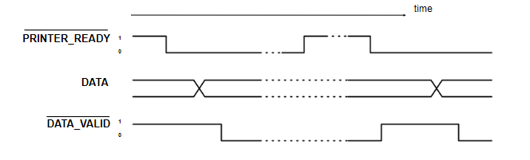
Handshaking Hardware
Handshaking is usually done using an external chip, such as the 6522 VIA (Versatile Interface Adapter)
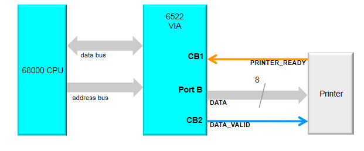
Setting bit values in the PCR (Peripheral Control Register) on the VIA allows to control the function.
- Use PORT B as output
- CB1 control line as
PRINTER_READY - CB2 control line as
DATA_VALID - For CB1 and CB2 control, 8 bit register is set to 1000xxxx
- Last 4 bits not used, don't care
Interrupts
- Asynchronous I/O
- Two kinds of interrupts (in 6502 processor)
- Interrupt Request (IRQ)
- Code can disable response
- Sent with a priority
- If priority lower than that of current task, will be ignored
- Can become non-maskable if ignored for long enough
- Non-Maskable Interrupt (NMI)
- Cannot be disabled, must be serviced
- Interrupt Request (IRQ)
- An interrupt forces the CPU to jump to an Interrupt Service Routine (ISR)
- Switches context, uses stack to store state of registers
- ISRs can be nested
- Interrupts usually generated by some external device
- Hard drive can generate an interrupt when data is ready
- A timer can generate an interrupt repeatedly at a fixed interval
- A printer can generate an interrupt when ready to receive data
- Advantages
- Fast response
- No wasted CPU time
- Disadvantages
- All data transfer still CPU controlled
- More complex hardware/software
Direct Memory Access (DMA)
- The CPU is a bottleneck for I/O
- All techniques shown so far are limited by this bottleneck
- DMA is used where large amounts of data must be transferred quickly
- Control of system busses surrendered from CPU to a DMA Controller (DMAC)
- DMAC is a dedicated device optimised for data transfer
- Can be up to 10x faster than CPU-driven I/O
DMA Operation

- DMA transfer is requested by I/O
- DMAC passes request to CPU
- CPU initialises DMAC
- Input or Output?
- Start address is put into DMAC address register
- Number of words is put into DMAC count register
- CPU enables DMAC
- DMAC requests use of system busses
- CPU responds with DMAC ack when ready to surrender busses
- DMAC can operate in different modes
- Cycle stealing
- Uses system busses when they're not being used by CPU
- Burst mode
- Requires busses for extended period of time, locks the CPU out for a fixed time, until transfer complete, or until CPU receives interrupt from device of higher priority
- Cycle stealing
DMA Organisation
There are multiple ways a DMA can be incorporated into a system:
- Single bus, detached DMA
- All modules (DMA, I/O devices, memory, CPU) share system bus
- DMA uses programmed I/O to exchanged data between memory and I/O device
- Straightforward, as DMA can just mimic processor
- Inefficient
- Separate I/O bus
- Only one interface to DMA module
- The bus the DMA shares with processor and memory is only used to transfer data to and from memory
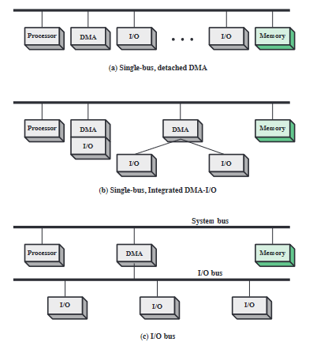
Summary
- **Memory-mapped **deviced are accessed in the same way as RAM, at fixed address locations
- Polled I/O is for scheduling input and output, where the CPU repeatedly checks for data
- I/O devices are slow, so handshaking techniques coordinate CPU and device for transfer of data
- Interrupts avoid polled I/O by diverting the CPU to a special I/O routine when necessary
- A DMA controller can be used instead of the CPU to transfer data into and out of memory, faster than the CPU but at additional hardware cost
Microprocessor Architecture
- Computer architecture concerns the structure and properties of a computer system, from the perspective of a software engineer
- Computer organisation concerns the structure and properties of a computer system, from the perspective of a hardware engineer
The PATP
The Pedagogically Advanced Teaching Processor is a very simple microprocessor. The specifics of it are not examinable, but it is used to build an understanding of microprocessor architecture.
Programmer's model
The PATP has 8 instructions. Each instruction is 1 8-bit word, with the first 3 bits as the opcode and last 5 as the operand, if applicable.
| Opcode | Mnemonic | Macro Operation | Description |
|---|---|---|---|
| 000 | CLEAR | [D0] <- 0 | Set D0 to 0 (and set Z) |
| 001 | INC | [D0] <- [D0] + 1 | Increment the value in D0 (and set Z if result is 0) |
| 010 | ADD #v | [D0] <- [D0] + v | Add the literal v to D0 (and set Z if result is 0) |
| 011 | DEC | [D0] <- [D0] - 1 | Decrement the value in D0 (and set Z if result is 0) |
| 100 | JMP loc | [PC] <- loc | Jump unconditionally to address location loc |
| 101 | BNZ loc | If Z is not 0 then [PC] <- loc | Jump to address location loc if Z is not set |
| 110 | LOAD loc | [DO] <- [MS(loc)] | Load the 8 bit value from address location loc to D0 |
| 111 | STORE loc | [MS(loc)] <- [D0] | Write the 8 bit value from D0 to address location loc |
This is not many instructions, but it is technically Turing-complete. The other specs of the PATP are:
- An address space of 32 bytes (the maximum address is
11111) - A single 8-bit data register/accumulator
D0 - A CCR with only 1 bit (
Z, set when an arithmetic operation has a result of zero) - A 5-bit program counter (only 5 bits needed to address whole memory)
Internal Organisation
There are several building blocks that make up the internals of the PATP:

- The data register
D0- An 8 bit register constructed from D-type flip-flops
- Has parallel input and output
- Clocked

- The ALU
- Built around an 8-bit adder/subtractor
- Has two 8-bit inputs
PandQ - Capable of
- Increment (+1)
- Decrement (-1)
- Addition (+n)
- Two function select inputs
F1andF2which choose the operation to perform- 00: Zero output
- 01: Q + 1
- 10: Q + P
- 11: Q - 1
- An output
F(P, Q)which outputs the result of the operation - A
Zoutput for the CCR

- The main system bus
- Uses 3-state buffers to enable communication

- The control unit
- Controls:
- The busses (enables)
- When registers are clocked
- ALU operation
- Memory acccess
- Responsible for decoding instructions and issuing micro-instructions
- Inputs
- Opcode
- Clock
Zregister
- Outputs
- Enables
- Main store
- Instruction register
IR - Program counter
- Data register
D0 - ALU register
- Clocks
- Memory address register
MAR - Instruction register
IR - Program counter
- Data register
D0 - ALU register
- Memory address register
F1andF2on the ALUR/Wto control bit for main store
- Enables
- Controls:
All the components come together like so:

Micro and Macro Instructions
There are several steps internally that are required to execute a single instruction. For example, to execute an INC operation:
- D0 need to be put on the system bus
- CU enables the three-state buffer for D0
[ALU(Q)] <- D0
- The correct ALU function must be selected
F1 = 0,F2 = 1- Signals asserted by CU
[ALU(F)] <- 01
- The output from the ALU must be read into the ALU register
- ALUreg clocked by CU
[ALUreg] <- [ALU]
- D0 reads in the ALU output from the ALU register
- CU enables the three-state buffer for ALUreg
- D0 is clocked by CU
Macro instructions are the assembly instructions issued to the processor (to the CU, specifically), but micro instructions provide a low level overview of how data is moved around between internals of the CPU and what signals are asserted internally. The PATP can execute all instructions in 2 cycles. The table below gives an overview of the micro operations required for each macro instruction, along with the macro operations for fetching from main store.

Control Signals
The control unit asserts control signals at each step of execution, and the assertion of these control signals determine how data moves internally. For the PATP:
- Enable signals are level-triggered
- Clock signals are falling edge-triggered
- An output can be enabled onto the main bus and then clocked elsewhere in a single time step
- ALU timings assume that, if values are enabled at P and Q at the start of a cycle, then the ALU register can be clocked on the falling edge of that cycle
- MS timings assume that if MAR is loaded during one cycle, then R, W and EMS can be used in the next cycle
The diagram below shows the timing for a fetch taking 4 cycles, and which components are signalled when. Notice which things happen in the same cycle, and which must happen sequentially.
| cycle | Micro-Op | Control Signals |
|---|---|---|
| 1 | [MAR] <- [PC] | Enable PC, Clock MAR |
| 2 | [IR] <- [MS(MAR)] | Set read for MAR, Enable MS, Clock IR |
| 3 | [ALU(Q)] <- [PC] | Enable PC |
| 3 | [ALU(F) <- 01] | F1 = 0, F2 = 1 |
| 3 | [ALUreg] <- [ALU] | Clock ALUreg |
| 4 | [PC] <- [ALUreg] | Enable ALUreg, Clock PC |

Control Unit Design
The task of the control unit is to coordinate the actions of the CPU, namely the Fetch-Decode-Execute cycle. It generates the fetch control sequence, takes opcode input, and generates the right control sequence based on this. It can be designed to do this in one of two ways:
- Hardwired design (sometimes called "random logic")
- The CU is a combinatorial logic circuit, transforming input directly to output
- Microprogrammed
- Each opcode is turned into a sequence of microinstructions, which form a microprogram
- Microprograms stored in ROM called microprogram memory
Hardwired
- A sequencer is used to sequence the clock cycles
- Has clock input and n outputs
T1 ... Tn - First clock pulse is output from
T1 - Second is output from
T2 - Clock pulse n output from
Tn - Pulse n+1 output from
T1
- Has clock input and n outputs
- This aligns the operation of the circuit with the control steps
- Advantages
- Fast
- Disadvantages
- Complex, difficult to design and test
- Inflexible, cant change design to add new instructions
- Takes a long time to design
- This technique is most commonly used in RISC processors and has been since the 80s

- The control signal generator maps each instruction to outputs
- The sequencer sequences the outputs appropriately
- The flip-flop is used to regulate control rounds
Microprogrammed
- The microprogram memory stores the required control actions for each opcode
- The CU basically acts as a mini CPU within the CPU
- Microaddress is a location within microprogram memory
- MicroPC is the CU's internal program counter
- MicroIR is the CU's internal microinstruction register
- The microPC can be used in different ways depending upon implementation
- Holds the next microaddress
- Holds the microaddress of microroutine for next opcode
- When powered initially holds microaddress 0
- The fetch microprogram
- Each microinstruction sets the CU outputs to the values dictated the instruction
- As the microprogram executes, the CU generates control signals
- After each microinstruction, the microPC is typically incremented, so microinstructions are stepped through in sequence
- After a fetch, the microPC is not incremented, but is set to the output from the opcode decoding circuit (labelled OTOA in the diagram)
- After a normal opcode microprogram, the microPC is set back to 0 (fetch)
- When executing the microprogram for a conditional branch instruction, the microPC value is generated based upon whether the CU's Z input is set

- Advantages
- Easy to design and implement
- Flexible design
- Simple hardware compared to alternative
- Can be reprogrammed for new instructions
- Disadvantages
- Slower than hardwired
- Most commonly used for CISC processors
RISC and CISC
In the late 70s-early 80s, it was shown that certain instructions are used far more than others:
- 45% data movement (move, store, load)
- 29% control flow (branch, call, return)
- 11% arithmetic (add, sub)
The overhead from using a microprogram memory also became more significant as the rest of the processor became faster. This caused a shift towards RISC computing. Right now, ARM is the largest RISC computing platform. Intel serve more for backwards compatibility with a CISC instruction set. In an modern intel processor, simplest instructions are executed by a RISC core, more complex ones are microprogrammed.
- RISC has simple, standard instructions whereas CISC has lots of more complex instructions
- x86 is often criticised as bloated
- RISC allows for simpler, faster, more streamlined design
- RISC instructions aim to be executed in a single cycle
- CISC puts the focus on the hardware doing as much as possible, whereas RISC makes the software do the work
Multicore Systems
- The performance of a processor can be considered as the rate at which it executes instructions: clock speed x IPC (instructions per clock).
- To increase performance, increase clock speed and/or IPC
- An alternative way of increasing performance is parallel execution
- Multithreading separates the instruction stream into threads that can execute in parallel
- A process is an instance of a program running on a computer
- A process has ownership of resources: the program's virtual address space, i/o devices, other data that defines the process
- The process is scheduled by the OS to divide the execution time of the processor between threads
- The processor switches between processes using the stack
CS141
#notacult
Types & Typeclasses
Haskell is a strongly, statically typed programming language, which helps prevent us from writing bad programs.
- Java, C, Rust - strongly typed
- Python, Ruby - dynamically typed
Types have many benefits:
- Describe the value of an expression
- Prevent us from doing silly things
not 7givesType Error
- Good for documentation
- Type errors occur at compile time
GHC checks types and infers the type of expressions for us. Types are discarded after type checking, and are not available at runtime.
Type notation
We say an expression has a type by writing expression :: type, read as "expression has type".
- If we can assign a type to an expression, it is "well typed"
- A type approximates and describes the value of an expression.
42 :: Int
True :: Bool
'c' :: Char
"Cake" :: String
0.5 :: Double
4 + 8 :: Int
2 * 9 + 3 :: Int
True && False :: Bool
"AB" ++ "CD" :: String
even 9 :: Bool
Before writing a definition, it is good practice to write its type.
daysPerWeek :: Int
daysperWeek = 7
Function Types
The types of functions are denoted using arrows ->. The not function is defined as not :: Bool -> Bool, read "not has type bool to bool". It means if you give me a Bool, I will give you back another Bool.
The definition of the not function is shown below.
not :: Bool -> Bool
not True = False
not False = True
not True :: Bool
The last line shows how function application eliminates function types, as by applying a function to a value, one of the types from the function definition is removed as it has already been applied.
The xor function takes two boolean arguments and is defined:
xor :: Bool -> Bool -> Bool
xor False True = True
xor False False = False
xor True True = False
xor True False = True
Applying one argument to a function that takes two is called partial function application, as it partially applies arguments to a function to return another function. This is because all functions in haskell are curried, meaning all functions actually only take one argument, and functions taking more than one argument are constructed from applying multiple functions with one argument.
xor :: Bool -> Bool -> Bool
xor True :: Bool -> Bool -- partially applied function
xor True False :: Bool
Polymorphic Types
What is the type of \x -> x ? Could be:
f :: Int -> Int
f :: Bool -> Bool
f :: Char -> Char
These are all permissible types. To save redifining a function, we can use type variables. Anything with a single lowercase character is a type variable (a in this case).
\x -> x :: a -> a
\x -> x is the identity function, as it returns its argument unchanged. We can also have functions with more than one type variable, to specify that arguments have different types:
const :: a -> b -> a
const x y = x
Tuples
Tuples are a useful data structure
(4, 7) :: (Int, Int)
(4, 7.0) :: (Int, Double)
('a', 9, "Hello") :: (Char, Int, String)
--can nest tuples
((4, 'g'), False) :: ((Int, Char), Bool)
--can also contain functions
(\x -> x, 8.15) :: (a->a, Double)
Functions on pairs. These are all in the standard library
fst :: (a,b) -> a
snd :: (a,b) -> b
swap :: (a,b) -> (b,a)
-- these functions can also be defined by pattern matching
fst (x,y) = x
snd (x,y) = y
swap (x,y) = (y,x)
Type Classes
Type classes are used for restricting polymorphism and overloading functions.
- The
(+)operator probably has type(+) :: Int -> Int -> Int,- This is correct, as this typing is permissible
- What about
1.2 + 3.4?- Will raise an error with this definition of
(+)
- Will raise an error with this definition of
- Can polymorphism help?
(+) :: a -> a -> a- This is stupid
- Allows any types
- Won't work
- A type class constraint is needed
- The actual type is
(+) :: Num a => a -> a -> a- The
Num a =>part is the constraint part - Tells the compiler that
ahas to belong to the typeclassNum
- The
- Type class constraints are used to constrain type variables to only types which support the functions or operators specified by the type class
- Type class names start with an uppercase character
Numis a type class that represents all types which support arithmetic operations
Defining Type Classes
A type class is defined as follows:
class Num a where
(+) :: a -> a -> a
(-) :: a -> a -> a
abs :: a -> a
Numis the name of the type classais the type variable representing it in the method typings- The type class contains method signatures for all functions that members of the type class must implement
The type class contains type definitions, but no implementations for the functions. To implement them, we need to tell the compiler which types implement the type class and how they implement the functions in the type class. The Show typeclass tells the compiler that a type can be converted to a string.
-- typeclass definition
class Show a where
show :: a -> String
-- instance of typeclass for bool type
instance Show Bool where
show True = "True"
show False = "False"
The instance definition tells the compiler that Bool is a member of Show, and how it implements the functions that Show defines.
Prelude Type Classes
Numfor numbersEqfor equality operators==/=Ordfor inequality/comparison operators><=etcShowfor converting things to string- Many More
The REPL makes extensive use of Show to print things. There are no show instances for function types, so you get an error if you try to Show functions. Typing :i in the REPL gets info on a type class. :i Num gives:
class Num a where
(+) :: a -> a -> a
(-) :: a -> a -> a
(*) :: a -> a -> a
negate :: a -> a
abs :: a -> a
signum :: a -> a
fromInteger :: Integer -> a
{-# MINIMAL (+), (*), abs, signum, fromInteger, (negate | (-)) #-}
-- Defined in ‘GHC.Num’
instance Num Word -- Defined in ‘GHC.Num’
instance Num Integer -- Defined in ‘GHC.Num’
instance Num Int -- Defined in ‘GHC.Num’
instance Num Float -- Defined in ‘GHC.Float’
instance Num Double -- Defined in ‘GHC.Float’
Types of Polymorphism
In Java, there are two kinds of polymorphism:
- Parametric polymorphism
- (Generics/Templates)
- A class is generic over certain types
- Can put whatever type you like in there to make a concrete class of that type
- Subtype polymorphism
- Can do
class Duck extends Bird - Can put
Ducks whereverBirds are expected
- Can do
Haskell has two kinds of polymorphism also:
- Parametric polymorphism
- Type variables
id :: a -> a- Can accept any type where
ais
- Ad-hoc polymorphism
- Uses type classes
double :: Num a => a -> adouble x = x * 2
Further Uses of Constraints
An example Show instance for pairs:
instance (Show a, Show b) => Show (a,b) Show where
show (x,y) = "(" ++ show x ++ ", " ++ show y ++ ")"
The (Show a, Show b) => defines a constraint on a and b that they must both be instances of show for them to be used with this instance. The instance is actually defined on the type (a,b).
Can also define that a typeclass has a superclass, meaning that for a type to be an instance of a typeclass, it must be an instance of some other typeclass first. The Ord typeclass has a superclass constraint of the Eq typeclass, meaning something cant be Ord without it first being Eq. This makes sense, as you can't have an ordering without first some notion of equality.
class Eq a => Ord a where
(<) :: a -> a -> Bool
(<=) :: a -> a -> Bool
Default Implementations
Type classes can provide default method implementations. For example, (<=) can be defined using the definition of (<), so a default one can be provided using (==)
class Eq a => Ord a where
(<) :: a -> a -> Bool
(<=) :: a -> a -> Bool
(<=) x y = x < y || x == y
-- or defined infix
x <= y = x < y || x == y
Derivable Type Classes
Writing type class instances can be tedious. Can use the deriving keyword to automatically generate them, which does the same as manually defining type class instances.
data Bool = False | True
deriving Eq
data Module = CS141 | CS118 | CS126
deriving (Eq, Ord, Show)
Certain other typeclasses can be dervied too, by enabling language extensions within GHC. The extension XDeriveFunctor allows for types to include a deriving Functor statement.
Data Types
How do we make our own data types in haskell? Algebraic data types.
Boolis a type- There are two values of type
BoolTrueFalse
data Bool = True | False
A type definition consists of the type name Bool and it's data constructors, or values True | False. A type definition introduces data constructors into scope, which are just functions.
True :: Bool
False :: Bool
We can pattern match on data constructors, and also use them as values. This is true for all types.
not :: Bool -> Bool
not True = False
not False = True
More examples:
data Module = CS141 | CS256 | CS263
data Language = PHP | Java | Haskell | CPP
--for this one, the type name and constructor name are separate names in the namespace
data Unit = Unit
-- this one has no values
data Void
Parametrised Data Constructors
Parameters can be added to a data constructor by adding their types after the constructor's name. The example below defines a type to represent shapes. Remember that data constructors are just functions, and can be partially applied just like other functions.
data Shape = Rect Double Double | Circle Double
Rect :: Double -> Double -> Shape
Circle :: Double -> Shape
-- functions utilising the Shape type
-- constructs a square
square x :: Double -> Shape
square x = Rect x x
-- calculates area of a shape using pattern matching on constructors
area :: Shape -> Double
area (Rect w h) = w * h
area (Circle r) = pi * r * r
isLine :: Shape -> Bool#
isLine (Rect 1 h) = True
isLine (Rect w 1) = True
isLine _ = False
-- examples
area (square 4.0)
=> area (Rect 4.0 4.0)
=> 4.0 * 4.0
=> 16.0
area (Circle 5.0)
=> pi * 5.0 * 5.0
=> pi * 25.0
=> 78.53981...
Parametrised Data Types
The Maybe type is an example of a data type parametrised over some type variable a. It exists within the standard library, defined as data Maybe a = Nothing | Just a. This type is used to show that either there is no result, or some type a.
A function using the Maybe type to perform devision safely, returning Nothing if the divisor is 0, and the result wrapped in a Just if the division can be done.
data Maybe a = Nothing | Just a
safediv :: Int -> Int -> Maybe Int
safediv x 0 = Nothing
safediv x y = Just (x `div y)
-- safediv 8 0 => Nothing
-- safediv 8 4 = Just (8 `div` 4) = Just 2
-- this is included in stdlib for extracting the value using pattern matching
fromMaybe :: a -> Maybe a -> a
fromMaybe x Nothing = x
fromMaybe _ (Just x) = x
Null references were invented in the 1960s ... the guy who invented them called them his "billion dollar mistake". The Maybe type is a good alternative, which makes it clear that a value may be absent. Similar concepts exist in other procedural languages (Swift, Rust)
Recursive Data Types
In Haskell, data types can be defined in terms of themselves. An example definition of the natural numbers is shown below, where a number is either zero, or one plus another number.
data Nat = Zero | Succ Nat
Zero :: Nat
Succ :: Nat -> Nat
one = Succ Zero
two = Succ one
three = Succ two
add :: Nat -> Nat -> Nat
add Zero m = m
add (Succ n) m = Succ (add n m)
mul :: Nat -> Nat -> Nat
mul Zero m = Zero
mul (Succ n) m = add m (mul n m)
Another example defining binary trees in terms of themselves. A binary tree consists of subtrees (smaller binary trees). This type is parametrised over some type variable a also.
Data BinTree a = Leaf a | Node (BinTree a) (BinTree a)
--converts a binary tree to a list
flatten :: BinTree a -> [a]
flatten (Leaf x) = [x]
flatten (Node l r) = flatten l ++ flatten r
-- computes the max depth of the tree
depth :: BinTree a -> Int
depth (Leaf _) = 1
depth (Node l r) = 1 + max (depth l) (depth r)
Type Aliases
Types can be aliased. For example, String has been an alias of [Char] all along.
type String = [Char]
Another example, defining a Predicate type
type Predicate a = a -> Bool
isEven :: Predicate Int
isEven n = n `mod` 2 == 0
isEven' :: (Eq a, Integral a) => Predicate a
isEven' n = n `mod` 2 == 0
Recursion
Recursion is a way of expressing loops with no mutable state, by defining a function in terms of itself. The classic example, the factorial function. Defined mathematically:
$$ n! = \begin{cases} 1 & \text{if } n =0 \ n \times (n-1)!& \text{otherwise} \end{cases} $$
In haskell:
factorial :: Int -> Int
factorial 0 = 1
factorial n = n * factorial (n-1)
It can be seen how this function reduced when applied to a value:
factorial 2
=> 2 * factorial (2-1)
=> 2 * factorial 1
=> 2 * 1 * factorial (1-1)
=> 2 * 1 * factorial 0
=> 2 * 1 * 1
=> 2
Another classic example, the fibonacci function:
fib :: Int -> Int
fib 0 = 1
fib 1 = 1
fib n = fib (n-1) + fib (n-1)
In imperative languages, functions push frames onto the call stack every time a function is called. With no mutable state, this is not required so recursion is efficient and can be infinite.
Haskell automatically optimises recursive functions to make execution more efficient:
fac' :: Int -> Int -> Int
fac' 0 m = m
fac' n m = fac' (n-1) (n*m)
This version of the function prevents haskell from building up large expressions:
fac 500
=> fac' 500 1
=> fac' (500-1) (500*1)
=> fac' 499 500
=> fac (499-1) (499 * 500)
=> fac' 498 249500
Notice the pattern for all recursive functions, where there is a recursive case, defining the function in terms of itself, and a base case. Without a base case, the function would recurse infinitely. The cases are usually defined as pattern matches.
Recursion on Lists
Recursion is the natural way to operate on lists in haskell. Defining the product function, which returns the product of all the items in the list:
product :: [Int] -> Int
product [] = 1
product (n:ns) = n * product ns
Here, the base case is the empty list [] and pattern match is used to "de-cons" the head off the list and operate on it (n:ns). The function reduces as follows:
product [1,2,3,4]
=> 1 * product [2,3,4]
=> 1 * 2 * product [3,4]
=> 1 * 2 * 3 * product [4]
=> 1 * 2 * 3 * 4 * product []
=> 1 * 2 * 3 * 4 * 1
=> 24
let and where
let and where clauses can be used to introduct local bindings within a function, which are useful in defining recursive functions. the splitAt function, which splits a list into two at a certain index.
splitAt :: Int -> [a] -> ([a],[a])
splitAt 0 xs = ([],xs)
splitAt n [] = ([],[])
splitAt n (x:xs) = (x:ys, zs)
where (ys,zs) = splitAt (n-1) xs
-- alternatively
splitAt n xs =
let
ys = take n xs
zs = drop n xs
in (ys,zs)
let and where can also define functions locally, as everything in haskell is a function.
Higher Order Functions
Higher order functions are functions which operate on functions.
Associativity of functions
Function expressions associate to the right (one argument is applied at a time)
xor a b = (a || b ) && not (a && b)
-- equivalent to
xor = \a -> \b -> (a || b) && not (a && b)
-- equivalent to
xor = \a -> (\b -> (a || b) && not (a && b))
- All functions in haskell are technically nameless, single-parameter functions
- Currying allows for functions which return other functions
- Functions are expressions
- The body of a function is an expression
- When a function is applied to an argument it reduces to it's body.
Function application associates to the left:
xor True True
=> (xor True) True
=> ((\a -> (\b -> (a || b) && not (a && b))) True) True
=> (\b -> (True || b) && not (True && b)) True
=> (True || True) && not (True && True)
Function types, however, associate to the right:
xor :: Bool -> Bool -> Bool
xor = \a -> \b -> (a || b) && not (a && b)
--equivalent to
xor :: Bool -> (Bool -> Bool)
xor = xor = \a -> (\b -> (a || b) && not (a && b))
The table below shows how functions application and types associate:
| Without Parentheses | With Parentheses |
|---|---|
f x y | (f x) y |
\x -> \y -> ... | \x -> (\y -> ...) |
Int -> Int -> Int | Int -> (Int -> Int) |
Functions as Arguments (map)
Haskell functions can be taken as arguments to other functions. Functions that take/return functions are called higher order functions. An example, increasing every element of a list by one:
incByOne :: [Int] -> [Int]
incByOne xs = [x+1 | x <- xs]
-- or using recursion
incByOne [] = []
incByOne (x:xs) = x+1 : incByOne xs
All this function does is applies the function (+ 1) to every element. This pattern can be generalised using the map function: a function that applies a function given as an argument to every element of a list:
map :: (a -> b) -> [a] -> [b]
map f [] = []
map f (x:xs) = f x : map f xs
Note the type signature of the map function is map :: (a -> b) -> [a] -> [b], meaning the first argument is a function of type (a -> b). Using this to implement incByOne:
incByOne = map (+1)
-- tracing it's evaluation:
incByOne [1,2,3]
=> map (+1) [1,2,3]
=> (1+1) : map (+1) [2,3]
=> (1+1) : (1+2) : map (+1) [3]
=> (1+1) : (1+2) : (1+3) : map (+1) []
=> (1+1) : (1+2) : (1+3) : []
=> [2,3,4]
Effectively, map f [x, y, z] evaluates to [f x, f y, f z]
Sections
Sections are partially applied operators. Operators are functions like any other, and as such can be partially applied, passed as arguments, etc. The addition operator is shown as an example, but the same applies to any binary operator.
(+) :: Num a => a -> a -> a
(+ 4) :: Num a => a -> a
(4 +) :: Num a => a -> a
(+) 4 8 = 4 + 8
(+ 4) 8 = 8 + 4
(4 +) 8 = 4 + 8
Filter
Filter is an example of another higher order function, which given a list, returns a new list which contains only the elements satisfying a given predicate.
filter :: (a -> Bool) -> [a] -> [a]
filter p [] = []
filter p (x:xs)
| p x = x : filter p xs
| otherwise = filter p xs
Some examples:
-- remove all numbers less than or equal to 42
greaterThan42 :: (Int -> Bool) -> [Int] -> [Int]
greaterThan42 xs = filter (>42) xs
-- only keep uppercase letters
uppers :: (Char -> Bool) -> String -> String
uppers xs = filter isUpper xs
Curried vs Uncurried
Tuples can be used to define uncurried functions. A function that takes two arguments can be converted to a function that takes an a tuple of two arguments, and returns a single argument/
uncurriedAdd :: (Int, Int) -> Int
uncurriedAdd (x, y) = x + y
There are higher-order functions, curry and uncurry, which will do this for us:
curry :: ((a,b) -> c) -> a -> b -> c
curry f x y = f (x,y)
uncurry :: (a -> b -> c) -> (a,b) -> c
uncurry f (x,y) = f x y
-- examples
uncurriedAdd :: (Int, Int) -> Int
uncurriedAdd = uncurry (+)
curriedAdd :: Int -> Int -> Int
curriedAdd = curry uncurriedAdd
addPairs :: [Int]
addPairs = map (uncurry (+)) [(1, 2), (3, 4)]
Folds
foldr and foldl "collapse" a list by applying a function f to each element in the list in turn, where the first argument is an accumulated value, and the second is the starting value passed. There are several functions which follow this pattern, all reducing a list to a single value using recursion:
-- and together all bools in the list
and :: [Bool] -> Bool
and [] = True
and (b:bs) = ((&&) b) (and bs)
-- product of everything in the list
product :: Num a => [a] -> a
product [] = 1
product (n:ns) = ((*) n) (product ns)
-- length of list
length :: [a] -> Int
length [] = 0
length (x:xs) = ((+) 1) (length xs)
All of these functions have a similar structure, and can be redefined using foldr:
foldr :: (a -> b -> b) -> b -> [a] -> b
foldr f z [] = z
foldr f z (x:xs) = f x (foldr f z xs)
-- examples
and :: [Bool] -> Bool
and = foldr (&&) True
product :: Num a => [a] -> a
product = foldr (*) 1
length :: [a] -> Int
length = foldr (\x n -> n + 1) 0
In essence, foldr f z [1, 2, 3] is equal to f 1 (f 2 (f 3 z)). foldr folds from right (r) to left, starting by applying the function to the last element of the list first. foldl, however, works in the opposite direction:
foldl :: (b -> a -> b) -> b -> [a] -> b
foldl f z [] = z
foldl f z (x:xs) = foldl f (f z x) xs
foldl f z [1, 2, 3] is equal to f (f (f z 1) 2) 3. For some functions (commutative ones), there is no difference, but often the choice of which to use is important.
Function Composition
In haskell, functions are composed with the (.) operator, a higher order function defined as:
(.) :: (b -> c) -> (a -> b) -> a -> c
(.) f g x = f (g x)
Function composition is used to chain functions, so instead of f (g (h x)), you can write f.g.h x. An example, defining a function count to count the number of occurrences of an element in a list:
count :: Eq a => a => [a] -> Int
count _ [] = 0
count y (x:xs)
| y == x = 1 + count y xs
| otherwise = count y xs
--alternatively, using a fold
count y = foldr (\x l -> if y==x then 1+l else l) 0
-- the stdlib can do this
count y x = length (filter (==y) xs)
count y = length . filter (==y) -- using composition
Lazy Evaluation
Evaluation Strategies
How are programs evaluated? There are a number of strategies for evaluating a program. For example, the expression (4+8) * (15 + 16) can be evaluated in different ways:
(4+8) * (15 + 16)
=> 12 * (15+16)
=> 12 * 31
=> 372
-- or
(4+8) * (15 + 16)
=> (4 + 8) * 31
=> 12 * 31
=> 372
The final value when reducing an expression (it cannot be reduced further) is the normal form, 372 in this case. No matter how the expression is reduced, the normal form is the same. Haskell's type system prevents us from writing anything that cannot reduce to normal form.
A sub-expression (anything partially reduced that can still be reduced further) is called a redex, short for reducible expression. Evaluation strategies only matter when there are multiple redexes, otherwise there is only one route we can take to evaluate an expression.
Strict Evaluation
A programming language is strict if the arguments of the function are evaluated before the function is called.
Evaluating fac 500 using a strict method:
fac :: Int -> Int
fac n = fac' n 1
fac' :: Int -> Int -> Int
fac n m = case n of
0 -> m
_ -> fac' (n-1) (n*m)
fac 500 -- a redex, function application
=> fac' 500 1 -- another redex
=> fac' (500-1) (500*1) -- 3 redexes, two multiplications and function application
=> fac' 499 (500*1) -- two redexes now as 500-1=499 is now in normal form
=> fac' 499 500 -- now only one redex
=> fac' (499-1) (499*500) -- back to 3 redexes
... -- this goes on for a while
Call-by-value means that all function arguments are reduced to their normal forms (values), and then passed as such to the function. The call-by-value strategy is an example of strict evaluation. This is the evaluation strategy used by most programming languages: Java, JS, PHP, C/C++, OCaml, F#, Python, Scala, Swift. Note that some of these are also functional languages.
Haskell, on the other hand, is far superior. It is non-strict: aka lazy.
Call-by-name
A non-strict evaluation strategy by which expressions given to functions as arguments are not reduced before the function call is made.
Expressions are only reduced when their value is needed. Same example as before:
fac 2
=> fac' 2 1 -- still a redex here
=> case 2 of
0 -> 1
_ -> fac' (2-1) (2*1) -- the function call is expanded to its expression
=> fac' (2-1) (2*1) -- left with 3 redexes now
=> case 2-1 of
0 -> 2*1
_ -> fac' ((2-1)-1) ((2-1) * (2*1)) -- a lot of redexes, but we don't need to know the value of any except the one in the case expression. this one is evaluated but not the others
=> case 1 of
0 -> 2*1
_ -> fac' ((2-1)-1) ((2-1) * (2*1)) -- something actually got evaluated, as we needed it's value. we still have a lot of redexes though
Note how that the same argument ((2-1)) is there 3 times, but it is only evaluated when it is needed. This means that it is evaluated possibly more than once, as it may be needed more than once at different points. With call-by-value (strict), an expression is only reduced once but will only ever be reduced once, but with call-by-name (lazy), expressions may end up being evaluated more than once.
Sharing
Sharing avoids duplicate evaluation. Arguments to functions are turned into local definitions, so that when an expression is evaluated, any expressions that are identical are also evaluated. The same example again, using both call-by-name and sharing:
fac' :: Int -> Int -> Int
fac' n m = case n of
0 -> m
_ -> let x = n-1
y = n*m
in fac' x y
-- the compiler has replaced the expression arguments with let-bound definitions
fac 2
=> fac' 2 1
=> case 2 of
0 -> 1
_ -> let x0 = 2-1
y0 = 2*1
in fac' x0 y0 --expressions bound to variables
=> let x0 = 2-1
y0 = 2*1 -- two redexes
in fac' x0 y0
=> let x0 = 2-1
y0 = 2*1
in case x0 of
0 -> y0
_ -> let x1 = x0-1
y1 = x0 * y0
in fac' x1 y1 -- even more redexes and bindings
-- x0 can be replaced by 1, which evaluates the expresion in all places where x0 is used
Can think of let or where bindings as storing expressions in memory in such a way that we can refer to them from elsewhere using their names.
The combination of call-by-name and sharing is known as lazy evaluation, which is the strategy haskell uses. Nothing is evaluated until it is needed, and work is only ever done once. (Strict evaluation is done sometimes if the compiler decides to, so it is technically non-strict instead of lazy.)
Evaluation in Haskell
An example, using haskell's lazy evaluation strategy:
length (take 2 (map even [1,2,3,4]))
=> length (take 2 (even 1 : map even [2,3,4])) -- check argument is non-empty list
=> length (even 1 : take (2-1) (map even [2,3,4])) -- even 1 cons'd to take 1 of map
=> 1 + length (take (2-1) (map even [2,3,4])) --know length is at least 1, take out
=> 1 + length(take 1 (map even [2,3,4]))
=> 1 + length (take 1 (even 2 : map even [3,4])) --another map call
=> 1 + (1 + length (take (1-1) (map even [3,4])) -- length again
=> 1 + (1 + length []) --take 0 so empty list
=> 1 + 1 + 0 -- return 0
=> 2 -- done
Note how half the map wasn't evaluated, because haskell knew we only cared about the first 2 elements. However this trace doesn't show any of the internal bindings haskell makes for sharing expressions. The compiler does this by transforming the expression:
length (take 2 (map even [1,2,3,4]))
-- becomes
let
xs = take 2 (map even [1,2,3,4])
in length xs
-- becomes
let
ys = map even [1,2,3,4]
xs = take 2 ys
in length xs
-- becomes
let
ys = map even (1:(2:(3:(4:[]))))
xs = take 2 ys
in length xs
-- finally
let
zs4 = 4:[]
zs3 = 3:zs4
zs2 = 2:zs3
zs = 1:zs2
ys = map even zs
xs = take 2 ys
in length xs
In this representation, everything is let bound it it's own definition, and nothing is applied except to some literal or to another let bound variable. The representation in memory looks something like this:

These things in memory are called closures. A closure is an object in memory that contains:
- A pointer to some code that implements the function it represents (not shown)
- A pointer to all the free variables that are in scope for that definition
- A free variable is any variable in scope that is not a parameter
The closures form a graph, where the closures all point to each other.
Another example, using map:
map :: (a -> b) -> [a] -> [b]
map _ [] = []
map f (x:xs) = f x : map f xs
-- removing all syntactic sugar, done by compiler
map = \f -> \arg ->
case arg of
[] -> []
(x: xs) -> let
y = f x
ys = map f xs
in (y:ys)
Using this definition of map to evaluate the expression from before (length (take 2 (map even [1,2,3,4]))):
let
zs4 = 4:[]
zs3 = 3:zs4
zs2 = 2:zs3
zs = 1:zs2
xs = map even zs
ys = take 2 xs
in length ys
-- new closures allocated by map, using 2nd case of map function
let
zs4 = 4:[]
zs3 = 3:zs4
zs2 = 2:zs3
zs = 1:zs2
y0 = even 1
ys0 = map even zs2 -- new closures
xs = y0 : ys -- updated to be a cons cell
ys = take 2 xs
in length ys
The graph of closures representing this:

Strictness in Haskell
Things can be evaluated strictly in haskell, if you want. This is prefereable in some cases for performance reasons. The \$! operator forces strict function application. The version of the function below forces the recursive call to be evaluated first.
fac' :: Int -> Int -> Int
fac' 0 m = m
fac' n m = (fac' \$! (n-1)) (n*m)
Infinite Data Structures
Laziness means data structures can be infinite in haskell. This is also facilitated by the lack of call stack, as there is no "max recursion depth" like in strict languages.
from :: Int -> [Int]
from n = n : from (n+1)
This function builds an infinite list of a sequence of Ints, starting with the Int passed. An example usage, showing how lazy evaluation works with it:
take 3 (from 4)
=> take 3 (4 : from 5)
=> 4 : take 2 (from 5)
=> 4 : take 2 (5 : from 6)
=> 4 : 5 : take 1 (from 6)
=> 4 : 5 : take 1 (6 : from 7)
=> 4 : 5 : 6 : take 0 (from 7)
=> 4 : 5 : 6 : []
=> [4,5,6]
The infinite evaluation is short-circuited, as the compiler knows it only needs the first 3 elements.
Reasoning About Programs
Haskell can use normal software testing methods to verify correctness, but because haskell is a pure language, we can do better and formally prove properties of our functions and types.
Natural Numbers
Natural numbers can be defined as data Nat = Z | S Nat in haskell. Alternatively, using mathematical notation, this can be written $0 \in N ;; \forall n \in N,; n+1 \in N$. Addition can then be defined recursively:
add :: Nat -> Nat -> Nat
add Z m = m
add (S n) m = S (add n m)
Addition has certain properties which must hold true:
- Left identity:
∀m :: Nat, add Z m == m- $0 + m = m$
- Right identity:
∀m :: Nat, add m Z == m- $m + 0 = m$
- Associativity:
∀x y z :: Nat, add x (add y z) == add (add x y) z- $x + (y + z) = (x + y) + z$
These can be proven using equational reasoning, which proves that an equality holds in all cases. Generally, either a property can be proved by applying and un-applying either side of an equation, and/or by induction.
To prove the left identity is easy, as it is an exact match of one of our equations for add:
add Z m
-- applying add
= m
The right identity is a little harder, as we can't just directly apply one of our equations. We can instead induct on m. First, the base case:
add Z Z
-- applying add
= Z
Using the induction hypothesis add m Z = m, we need to show the inductive step holds for S m (m+1):
add (S m) Z
-- applying add
= S (add m Z)
-- applying induction hypothesis
= S m
This proves the right identity. To prove associativity we will again use induction, this time on x. The base case is add Z (add y z):
add Z (add y z)
-- applying add
= add y z
-- un-applying add
= add (add Z y) z
The proof holds for x = Z. Here, the proof was approached from either end to meet in the middle, but written as a single list of operations for clarity. Sometimes it is easier to do this and work from either direction, especially when un-applying functions as it is more natural.
The induction hypothesis is add x (add y z) == add (add x y) z, and can be assumed. We need to prove the inductive step add (S x) (add y z) == add (add (S x) y) z:
add (S x) (add y z)
-- applying add
= S (add x (add y z))
-- applying induction hypothesis
= S (add (add x y ) z)
-- un-applying add
= add (S (add x y)) z
-- un-applying add
= add (add (S x) y) z
This proves associativity.
Induction on Lists
We can induct on any recursive type, including lists: data List a = Empty | Cons a (List a). Using this definition, we can prove map fusion. Map fusion states that we can turn multiple consecutive map operations into a single one with composed functions:
map f (map g xs) = map (f.g) xs∀f :: b -> c∀g :: a -> b∀xs :: [a]
The definitions of map and . may be useful:
map :: (a -> b) -> [a] -> [b]
map f [] = []
map f (x:xs) = f x : map f xs
(.) :: (b -> c) -> (a -> b) -> a -> c
(.) f g x = f (g x)
Map fusion can be proved by induction on xs. The base case is map f (map g []) = map (f.g) []:
map f (map g [])
-- applying map
= map f []
-- applying map
= []
-- un-applying map
= map (f.g) []
Using the induction hypothesis map f (map g xs) = map (f.g) xs, we can prove the inductive case map f (map g (x : xs)) = map (f.g) (x : xs):
map f (map g (x : xs))
-- applying map
= map f (g x : map g xs)
-- applying map
= f (g x) : map f (map g xs)
-- induction hypothesis
= f (g x) : map (f.g) xs
-- un-applying (.)
= (f.g) x : map (f.g) xs
-- un-applying map
= map (f.g) (x : xs)
Proving a Compiler
Given a simple expression language:
data Expr = Val Int | Plus Expr Expr
And a simple instruction set:
data Instr = Push Int | Add
type Program = [Instr]
type Stack = [Int]
We can write an exec function as an interpreter for our instruction set:
exec :: Program -> Stack -> Stack
exec [] s = s
exec (Push n : p) s = exec p (n : s)
exec (Add : p) (y : x : s) = exec p (x + y : s)
An eval function to evaluate our expressions:
eval :: Expr -> Int
eval (Val n) = n
eval (Plus l r) = eval l + eval r
And a comp function as a compiler for our Expr language to our Instr instruction set:
comp :: Expr -> Program
comp (Val n) = [PUSH n]
comp (Plus l r) = comp l ++ comp r ++ [ADD]
Our compiler will be considered correct if for any expression, evaluating it yields the same result as compiling and then executing it:
∀ e :: Expr, s :: Stack . eval e : s == exec (comp e) s
This can be proved by induction on e. The base case for Expr is for Vals, and we want to show that eval (Val n) s == exec (comp (Val n)) s. This time, we start with the RHS:
exec (comp (Val n)) s
-- applying comp
= exec [Push n] s
-- applying exec
= exec [] (n : s)
-- applying exec
= (n : s)
-- unappplying eval
= eval (Val n) s
Our inductive case to be proved is eval (Plus l r) s == exec (comp (Plus l r)) s. Since the Plus constructor has two values of type Expr, there are two induction hypotheses:
- for
l:eval l : s == exec (comp l) s - for
r:eval r : s == exec (comp r) s
exec (comp (Plus l r)) s
-- applying comp
= exec (comp l ++ comp r ++ [Add]) s
-- distributivity of (++)
= exec (comp l ++ (comp r ++ [Add])) s
-- distributivity lemma
= exec (comp r ++ [Add]) (exec (comp l) s)
-- distributivity lemma
= exec [Add] (exec (comp r) (exec (comp l) s))
-- induction hypothesis
= exec [Add] (exec (comp r) (eval l : s))
-- induction hypothesis
= exec [Add] (eval r : (eval l : s))
-- applying exec
= exec [] ((eval l + eval r) : s)
-- applying exec
= (eval l + eval r) : s
-- un-applying exec
= eval (Plus l r) s
The proof holds, but relies on a lemma proving the distributivity of the exec function, which states that executing a program where a list of instructions xs is followed by a list of instructions ys is the same as first executing xs and then executing ys with the stack that results from executing xs: ∀ xs ys::Program, s::Stack . exec (xs++ys) s == exec ys (exec xs s).
This can be proved by induction on xs. The base case is the empty list []: exec ([] ++ ys) s == exec ys (exec [] s):
exec ys (exec [] s)
-- applying exec
= exec ys s
-- un-applying (++)
= exec ([] ++ ys) s
The induction hypothesis is exec (xs++ys) s == exec ys (exec xs s). The inductive step is exec ((x : xs) ++ ys) s == exec ys (exec (x : xs) s). As x could be either Push x or Add, we perform case analysis on x, first with the case where x = Push n:
exec ys (exec (Push n : xs) s)
-- applying exec
= exec ys (exec xs (n : ns))
-- induction hypothesis
= exec (xs ++ ys) (n : s)
-- un-applying exec
= exec (Push n : (xs ++ ys)) s
-- un-applying (++)
= exec ((Push n : xs) ++ ys) s
The inductive step holds for the Push n case. The Add case:
exec ys (exec (Add : xs) s)
-- assuming stack has at least 2 elements
exec ys (exec (Add : xs) (b : a : s'))
-- applying exec
exec ys (exec xs (a + b : s'))
-- induction hypothesis
exec (xs ++ ys) (a + b : s')
-- un-applying exec
exec (Add : (xs ++ ys)) (b : a : s')
-- un-applying (++)
exec ((Add : xs) ++ ys) (b : a : s')
-- assumption
exec ((Add : xs) ++ ys) s
This proves the inductive case for the Add instruction, and therefore the proof for the distributivity of exec lemma, which supported our initial proof of the correctness of our compiler.
Functors & Foldables
The \$ Operator
The \$ operator is an operator for function application. It has signature:
(\$) :: (a -> b) -> a -> b
f \$ x = f x
At first it doesn't look like it does much, but it is actually defined as infixr 0 meaning it is:
- An infix operator with right associativity
- Has the lowest precedence possible.
In contrast, normal function application is left associative and has the highest precedence possible. Practically, this means it can be used where you would otherwise have to use parentheses, to make code a lot cleaner. Some examples:
-- elem finds if an item x is contained in the list xs
elem :: Eq a => a -> [a] -> Bool
elem x xs = not (null (filter (==x) xs))
-- rewritten, without parentheses
elem x xs = not \$ null \$ filter (==x) xs
-- or using function composition (.)
elem x = not . null . filter (==x)
Another example, shown along with a trace of it's reduction:
map (\$ 4) [even, odd]
=> (even $ 4) : map (\$ 4) [odd]
=> (even \$ 4) : (odd \$ 4) : []
=> True : (odd \$ 4) : []
=> True : False : []
=> [True, False]
Foldables
It has already been shown how many examples of recursive functions can be rewritten with a fold. folding is a an example of a useful design pattern in functional programming.
A Trip to Michael's Tree Nursery
Binary trees are recursive data structures, that can be recursively operated on (much like lists). The example below shows a simple definition of a binary tree along with some functions to operate on it.
-- our binary tree type
data BinTree a = Leaf | Node (BinTree a) a (BinTree a)
deriving Show
-- simple recursive functions
-- how big is the tree?
size :: BinTree a -> Int
size Leaf = 0
size Node (l _ r) = 1 + size l + size r
-- is x contained within the tree?
member:: Eq a => a -> BinTree a -> Bool
member _ Leaf = False
member x (Node l y r) = x == y || member x l || member x r
-- what is the sum of all the Nums in the tree
tsum :: Num a => BinTree a -> a
tsum Leaf =0
tsum (Node l n r) = n + tsum l + tsum r
These are all recursive functions operating on a tree, and can be generalised by defining our own version of a fold for trees, dubbed toldr. Note the similarities between foldr and toldr.
toldr :: (a -> b -> b) -> b -> BinTree a -> b
toldr f z Leaf = z
toldr f z (Node l x r) = f x (toldr f (toldr f z r) l)
tsum :: Num a => BinTree a -> a
tsum = toldr (+) 0
member :: Eq a => a -> BinTree a -> Bool
member x = toldr (\y r -> x==y || r) False
size :: BinTree a -> Int
size = toldr(\_ r -> 1 + r) 0
The Foldable Typeclass
This abstraction does actually exist in the standard libary, as a typeclass. A type can be an instance of Foldable (like lists), which then allows foldr to be used on it.
class Foldable t where
foldr :: (a -> b -> b) -> b -> t a -> b
-- for lists
-- exists in prelude
instance Foldable [] where
foldr f z [] = z
foldr f z (x:xs) = f x (foldr f z xs)
-- for our bintree
instance Foldable BinTree where
foldr _ z Leaf = z
foldr f z (Node l x r) = f x (foldr f (foldr f z r) l)
This instance of Foldable for BinTree can now be used to generalise our functions that operate on it:
sum :: (Foldable t, Num a) => t a -> t
sum = foldr (+) 0
elem :: (Foldable t, Eq a) => a -> t a -> Bool
elem x = foldr (\y r -> x==y || r) False
length :: Foldable t => t a -> Int
length = foldr (\_ r -> 1 + r) 0
These methods are actually part of the Foldable typeclass, so when defining an instance of Foldable on some type, you get them for free, and they are polymorphic over all foldable types.
Foldable is also a derivable typeclass using the language extension -XDeriveFoldable, so all of this can be derived automatically.
Functors
Bringing back our safediv function from previously:
data Maybe a = Nothing | Just a
safediv :: Int -> Int -> Maybe Int
safediv _ 0 = Nothing
safediv x y = Just (x `div` y)
divAndAdd :: Int -> Int -> Maybe Int
divAndAdd x y = 5 + safediv x y -- doesn't work, type error
-- using a case statement
divAndAdd x y = case safediv x y of
Nothing -> Nothing
Just r -> Just (5+r)
-- bit messy
The pattern of applying a function a value within a Maybe can be generalise. Defining a function pam to do this for us:
pam :: (a -> b) -> Maybe a -> Maybe b
pam _ Nothing = Nothing
pam f (Just x) = Just (f x)
-- much nicer!
divAndAdd :: Int -> Int -> Maybe Int
divAndAdd x y = pam (5+) (safediv x y)
It would be nice if there was some way to generalise the pattern of applying a function to element(s) in a container. The Functor typeclass does this for us. A type is a functor if we can apply a function to it. Lists are functors, as that is what the map function does. Maybe and BinTrees are also functors.
class Functor f where
fmap :: (a -> b) -> f a -> f b
instance Functor [] where
fmap = map
instance Functor Maybe where
fmap f Nothing = Nothing
fmap f (Just x) = Just (f x)
instance Functor BinTree where
fmap f (Leaf x) = Leaf (f x)
fmap f (Node lr ) = Node (fmap f l) (fmap f r)
Functors can be thought of as "boxes", and when given a function, will apply it to the value in the box, and return the result in the same box. Some examples of definitions using functors:
-- increases all Ints in the "box" by 5
incByFive :: Functor f => f Int -> f Int
incByFive = fmap (+5)
-- applies the odd function to all Ints in the box
odds :: Functor f => f Int -> f Bool
odds = fmap odd
-- redefining using fmap
divAndAdd :: Functor f => Int -> Int -> Maybe Int
divAndAdd x y = fmap (5+) (safediv x y)
Functor is also another typeclass that can be derived by GHC, using the -XDeriveFunctor extension.
The <\$> Operator
An operator that is essentially just an infix version of the fmap function.
infixl 4 <\$>
(<\$>) :: Functor f => (a -> b) -> f a -> f b
(<\$>) = fmap
fmap (replicate 6) (safediv 8 4)
== replicate 6 <\$> safediv 8 4
=> Just [2,2,2,2,2,2]
-- redefining using <\$>
divAndAdd :: Functor f => Int -> Int -> Maybe Int
divAndAdd x y = (5+) <\$> (safediv x y)
Functor Laws
There are certain laws that functors must obey for their properties to hold. A type f is a functor if there exists a function fmap :: (a-> b) -> f a -> f b , and the following laws hold for it:
fmap id = id- If the values in the functor are mapped to themselves, the result will be an unmodified functor
fmap (f.g) = (fmap f) . (fmap g)- The fusion law
- If two
fmaps are applied one after the other, the result must be the same as a singlefmapwhich applies the two functions in turn
- These laws imply that a data structure's "shape" does not change when
fmapped
Applicative Functors
Kinds
- For the compiler to accept a program, it must be well typed
- Kinds are the "types of types"
- Types are denoted with
expression :: type- eg
True :: Bool
- eg
- Kinds are denoted the same:
type :: kindBool :: *
- The compiler infers kinds of types the same way it infers types of expressions
*is the kind of typesBool :: *becauseBoolhas no type parametersdata Bool = True | False
Maybeis parametrised over some typea, so the kind signatureMaybe :: * -> *means that if given a type as an argument to the type constructorJust, it will give back some other type of kind*[] :: * -> *[]is the type constructor for lists
Kinds are important when defining typeclasses. Take Functor, for example:
class Functor f where
fmap :: (a -> b) -> f a-> f b
This definition shows that the type f is applied to one argument (f a), so f :: * -> *
-- Maybe :: * -> *
instance Functor Maybe where
fmap f Nothing = Nothing
fmap f (Just x) = Just (f x)
-- invalid
-- Maybe a :: *
-- As the type is already applied to a
instance Functor (Maybe a) where
fmap f Nothing = Nothing
fmap f (Just x) = Just (f x)
The Either Type
Either is usually used to represent the result of a computation when it could give one of two results. Right is used to represent success, and a is the wanted value. Left is used to represent error, with e as some error code/message.
data Either e a = Left e | Right a
Left :: e -> Either e a
Right :: a -> Either e a
Either has kind * -> * -> *, as it must be applied to two types e and a before we get some other type.
Only types of kind * -> * can be functors, so we need to apply Either to one argument first. The functor instance for Either applies the function to the Right value.
instance Functor (Either e) where
fmap :: (a -> b) -> Either e a -> Either e b
fmap f (Left x) = Left x
fmap f (Right y) = Right (f y)
The Unit Type ()
()is called the unit type() :: ()(), the unit value, has type()()is the only value of type()
- Can be thought of as defined
data () = () - Or an empty tuple
Semigroups and Monoids
A type is a semigroup if it has some associative binary operation defined on it. This operator (<>) is the "combine" operator.
class Semigroup a where
(<>) :: a -> a -> a
instance Semigroup [a] where
-- (<>) :: [a] -> [a] -> [a]
(<>) = (++)
instance Semigroup Int where
-- (<>) :: Int -> Int -> Int
(<>) = (+)
A type is a monoid if it is a semigroup that also has some identity value, called mempty:
class Semigroup a => Monoid a where
mempty ::a
instance Monoid [a] where
-- mempty :: [a]
mempty = []
instance Monoid Int where
-- mempty :: Int
mempty = 0
Applicatives
Applicative Functors are similar to normal functors, except with a slightly different type definition:
class Functor f => Applicative f where
pure :: a -> f a
<*> :: f (a -> b) -> f a -> f b
The typeclass defines two functions:
purejust lifts the valueainto the "box"<*>(the apply operator) takes some function (a -> b) in a boxf, and applies it to a valueain a box, returning the result in the same box.- "box" is a rather loose analogy. It is more accurate to say "computational context".
Different contexts for function application:
-- vanilla function application
(\$) :: (a -> b) -> a -> b
-- Functor's fmap
(<\$>) :: Functor f => (a -> b) -> f a -> f b
-- Applicative's apply
(<*>) :: Applicative f => f (a -> b) -> f a -> f b
Maybe and Either e are both applicative functors:
instance Applicative Maybe where
pure x = Just x
Nothing <*> _ = Nothing
(Just f) <*> x = f <\$> x
instance Applicative (Either e) where
pure = Right
Left err <*> _ = Left err
Right f <*> x = f <\$> x
The "context" of both of these types is that they represent error. All data flow in haskell has to be explicit due to its purity, so these types allow for the propagation of error.
Another example of an applicative functor is a list:
instance Applicative [] where
pure x = [x]
fs <*> xs = [f x | f <- fs, x <- xs]
Every function in the left list is applied to every function in the right:
[f, g] <*> [x, y, z]
=> [f x, f y, f z, g x, g y, g z]
g <\$> [x,y] <*> [a,b,c]
=> [g x, g y] <*> [a,b,c]
=> [g x a, g x b, g x c, g y a, g y b, g y c]

The context represented by lists is nondeterminism, ie a function f given one of the arguments [x, y, z] could have result [f x, f y, f z].
Applicative Laws
Applicative functors, like normal functors, also have to obey certain laws:
pure id <*> x = x- The identity law
- applying pure id does nothing
pure f <*> pure x = pure (f x)- Homomorphism
purepreserves function application
u <*> pure y = pure (\$ y) <*> u- Interchange
- Applying something to a pure value is the same as applying pure ($ y) to that thing
pure (.) <*> u <*> v <*> w = u <*> (v <*> w)- Composition
- Function composition with
(.)works within apurecontext.
Left and Right Apply
<* and *> are two more operators, both defined automatically when <*> is defined.
const :: a -> b -> a
const x y = x
flip :: (a -> b -> c) -> b -> a -> c
flip f x y = f y x
(<*) :: Applicative f => f a -> f b -> f a
a0 <* a1 = const <\$> a0 <*> a1
(*>) :: Applicative f => f a -> f b -> f b
a0 *> a1 = flip const <\$> a0 <*> a1
In simple terms *> is used for sequencing actions, discarding the result of the first argument. <* is the same, except discarding the result of the second.
Just 4 <* Just 8
=> const <\$> Just 4 <*> Just 8
=> Just (const 4) <*> Just 8
=> Just (const 4 8)
=> Just 4
Just 4 <* Nothing
=> const <\$> Just 4 <*> Nothing
=> Just (const 4) <*> Nothing
=> Nothing
Just 4 *> Just 8
=> flip const <\$> Just 4 <*> Just 8
=> Just (flip const 4) <*> Just 8
=> Just (flip const 4 8)
=> Just (const 8 4)
=> Just 8
Nothing *> Just 8
=> Nothing
These operators are perhaps easier to understand in terms of monadic actions:
as *> bs = do as
bs
as *> bs = as >> bs
as <* bs = do a <- as
bs
pure a
Example: Logging
A good example to illustrate the uses of applicative functors is logging the output of a compiler. If we have a function comp that takes some Expr type, representing compiler input, and returns some Program type, representing output :
comp :: Expr -> Program
comp (Val n) = [PUSH n]
comp (Plus l r) = comp l ++ comp r ++ [ADD]
-- extending to return a String for a log
comp :: Expr -> (Program, [String])
comp (val n) = ([PUSH n],["compiling a value"])
comp (Plus l r) = (pl ++ pr ++ [ADD], "compiling a plus" : (ml ++ mr))
where (pl, ml) = comp l
(pr, mr) = comp r
This is messy and not very clear what is going on. There is a much nicer way to do this, using the Writer type:
-- w is the "log"
-- a is the containing type (the type in the "box")
data Writer w a = MkWriter (a,w)
--type of MkWriter
MkWriter :: (a,w) -> Writer w a
-- kind of Writer type
Writer :: * -> * -> *
instance Functor (Writer w) where
-- fmap :: (a -> b) -> Writer w a -> Writer w b
fmap f (MkWriter (x,o)) = MkWriter (f x, o) -- applies the function to the x value
-- a function to write a log
-- generates a new writer with a msg and unit type in it's box
writeLog :: String -> Writer [w] ()
writeLog msg = MkWriter((), [msg])
Using this to redefine comp:
comp :: Expr -> Writer [String] Program
comp (Val n) = MkWriter ([PUSH n], m)
where (MkWriter (_, m)) = writeLog "compiling a value"
comp (Plus l r) = MkWriter (pl ++ pr ++ [ADD], m ++ ml ++ mr)
where (MkWriter (pl, ml)) = comp l
(MkWriter (pr, mr)) = comp r
(MkWriter (_, m)) = writeLog
This definition of comp combines the output using Writer, but is messy as it uses pattern matching to deconstruct the results of the recursive calls and then rebuild them into the result. It would be nice if there was some way to implicitly keep track of the log messages.
We can define an instance of the Applicative typeclass for Writer to do this. There is the additional constraint that w must be an instance of Monoid, because we need some way to combine the output of the log.
instance Monoid w => Applicative (Writer w) where
--pure :: a -> Writer w a
pure x = MkWriter (x, mempty)
-- <*> Monoid w => Writer w (a -> b) -> Writer w a -> Writer w b
MkWriter (f,o1) <*> MkWriter (x,o2) = MkWriter (f x, o1 <> o2)
-- f is applied to x, and o1 and o2 are combined using their monoid instance
Using this definition, the comp function can be tidied up nicely using <*>
comp :: Expr -> Writer [String] Program
comp (Val n) = writeLog "compiling a value" *> pure [PUSH n]
comp (Plus l r) = writeLog "compiling a plus" *>
((\p p' -> p ++ p' ++ [ADD]) <\$> comp l <*> comp r)
The first pattern uses *>. Recall that *> does not care about the left result, which in this case is the unit type, so only the result of the right Writer is used, which is the [PUSH n] put into a Writer by pure, with a mempty, or [] as the logged value.
The second pattern applies the anonymous function (\p p' -> p ++ p' ++ [ADD]) to the result of the recursive calls. The lambda defines how the results of the recursive calls are combined together, and the log messages are automatically combined by the definition of <*>. *> is used again to add a log message to the program.
Monads
ṱ̴̹͙̗̣̙ͮ͆͑̊̅h̸̢͔͍̘̭͍̞̹̀ͣ̅͢e̖̠ͫ̒ͦ̅̉̓̓́͟͞ ͑ͥ̌̀̉̐̂͏͚̤͜f͚͔͖̠̣͚ͤ͆ͦ͂͆̄ͥ͌o̶̡̡̝͎͎̥͖̰̭̠̊r̗̯͈̀̚b̢͙̺͚̅͝i̸̡̱̯͔̠̲̿dͧ̈ͭ̑҉͎̮d̆̓̂̏̉̏͌͆̚͝͏̺͓̜̪͓e̎ͯͨ͢҉͙̠͕͍͉n͇̼̞̙͕̮̣͈͓ͨ͐͛̽ͣ̏͆́̓ ̵ͧ̏ͤ͋̌̒͘҉̞̞̱̲͓k͔̂ͪͦ́̀͗͘n͇̰͖̓ͦ͂̇̂͌̐ȯ̸̥͔̩͒̋͂̿͌w̞̟͔̙͇̾͋̅̅̔ͅlͧ͏͎̣̲̖̥ẻ̴̢̢͎̻̹̑͂̆̽ͮ̓͋d̴̪͉̜͓̗̈ͭ̓ͥͥ͞g͊̾̋̊͊̓͑҉͏̭͇̝̰̲̤̫̥e͈̝̖̖̾ͬ̍͢͞
Monads are another level of abstraction on top of applicatives, and allow for much more flexible and expressive computation. Functors => Applicatives => Monads form a hierarchy of abstractions.
The Monad typeclass
class Applicative m => Monad m where
(>>=) :: m a -> (a -> m b) -> m b
return :: a -> m a
return = pure
The >>= operator is called bind, and applies a function that returns a wrapped value, to another wrapped value.
- The left operand is some monad containing a value
a - the right operand is a function of type
a -> m b, ie it takes someaand returns a monad containing something of typeb - The result is a monad of type
b
The operator can essentially be thought of as feeding the wrapped value into the function, to get a new wrapped value. x >>= f unwraps the value in x from it, and applies the function to f to it. Understanding bind is key to understanding monads.
return is just the same as pure for applicatives, lifting the value a into some monadic context.
Some example monad instances:
instance Monad Maybe where
Nothing >>= _ = Nothing
Just x >>= f = f x
instance Monad (Either e) where
Left l >>= _ = Left l
Right r >>= f = f r
pure = Right
instance Monad [] where
xs >>= f = concat (map f xs)
Monads give effects: composing computations sequentially using >>= has an effect. With the State Monad this effect is "mutation". With Maybe and Either the effect is that we may raise a failure at any step. Effects only happen when we want them, implemented by pure functions.
Monad Laws
For a type to be a monad, it must satisfy the following laws:
return a >>= h = h a- Left identity
m >>= return = m- Right identity
(m >>= f) >>= g = m >>= (\x -> f x >>= g)- Associativity
Example: Evaluating an Expression
A type Expr is shown below that represents a mathematical expression, and an eval function to evaluate it. Note that it is actually unsafe and could crash at runtime due to a div by 0 error. The safediv function does this using Maybe.
data Expr = Val Int | Add Expr Expr | Div Expr Expr
eval :: Expr -> Int
eval (Val n) = n
eval (Add l r) = eval l + eval r
eval (Div l r) = eval l `div` eval r
safediv :: Int -> Int -> Maybe Int
safediv x 0 = Nothing
safediv x y = Just (x `div` y)
If we want to use safediv with eval, we need to change it's type signature. The updated eval is shown below using applicatives to write the function cleanly and propagate any errors:
eval :: Expr -> Maybe Int
eval (Val n) = Just n
eval (Add l r) = (+) <\$> eval l <*> eval r
eval (Div l r) = safediv <\$> eval l <*> eval r
If any recursive calls return a Nothing, the entire expression will evaluate to Nothing. Otherwise, the <\$> and <*> will evaluate the expression within the Maybe context. However, this is still wrong as the last expression now has type of Maybe (Maybe Int). This can be fixed using >>=. Note the use of lambdas.
eval (Div l r) = eval l >>= \x ->
eval r >>= \y ->
x `safediv` y
The Expr type can be extended to include a conditional expression, where If Condition True False`.
data Expr = Val Int
| Add Expr Expr
| Div Expr Expr
| If Expr Expr Expr
eval :: Expr -> Maybe Int
eval (Val n) = Just n
eval (Add l r) = eval l >>= \x ->
eval r >>= \y ->
Just (x+y)
eval (Div l r) = eval l >>= \x ->
eval r >>= \y ->
x `safediv` y
eval (If c t f) = ifA <\$> eval c <*> eval t <*> eval f
where ifA b x y = if b /= 0 then x else y
With this definition using applicatives, both branches of the conditional branch are evaluated. If there is an error in the false branch, the whole expression will fail. Here, using bind, the semantics are correct.
eval' (If c t f) = eval' c >>= \b ->
if b /= 0 then eval t else eval f
<*> vs >>=
Bind is a much more powerful abstraction than apply:
<*> :: m (a -> b) -> m a -> m b
(>>=) :: m a -> (a -> m b) -> m b
- Apply operates on functions already inside a context
- This function can't determine anything to do with the context
- With a
Maybe, it can't determine if the overall expression returnsNothingor not
- Bind takes a function that returns a context, and can therefore can determine more about the result of the overall expression
- It knows if it's going to return
Nothing
- It knows if it's going to return
do Notation
Notice the pattern of >>= being used with lambdas a fair amount. This can be tidied up with some nice syntactic sugar, called do notation. Rewriting the earlier example:
eval :: Expr -> Maybe Int
eval (Val n) = return n
eval (Add l r) = do
x <- eval l
y <- eval r
return (x+y)
eval (Div l r) = do
x <- eval l
y <- eval r
x `safediv` y
This looks like imperative code, but is actually using monads behind the scenes. The arrows bind the results of the evaluation to some local definition, which can then be referred to further down the block.
- A block must always end with a function call that returns a monad -
- usually
return, butsafedivis used too
- usually
- If any of the calls within the
doblock shown returnsNothing, the entire block will short-circuit to aNothing.
Example: The Writer Monad
The example of Writer as an applicative instance can be extended to make it a Monad instance.
data Writer w a = MkWriter (a,w)
instance Functor (Writer w) where
-- fmap :: (a -> b) -> Writer w a -> Writer w b
fmap f (MkWriter (x,o)) = MkWriter(f x, o)
instance Monoid w => Applicative (Writer w) where
-- pure :: Monoid w => a -> Writer w a
pure x = MkWriter (x, mempty)
-- <*> :: Monoid w => Writer w (a -> b) -> Writer w a -> Writer w b
MkWriter (f,o1) <*> MkWriter (x,o2) = MkWriter (f x, o1 <> o2)
instance Monoid w => Monad (Writer w) where
-- return :: Monoid w => a -> Writer w a
return = MkWriter (x, mempty) --pure
(Writer (x, o1)) >>= f = MkWriter (y, o2 <> o1)
where (MkWriter (y,o2)) = f x
Bind for Writer applies the function to the x value in the writer, then combines the two attached written values, and return the new value from the result of f x along with the combined values.
Now we have a monad instance for the Writer monad, we can rewrite our comp function with do notation:
comp' :: Expr -> Writer [String] Program
comp' (Val n) = do
writeLog "compiling a value"
pure [PUSH n]
comp' (Plus l r) = do writeLog "compiling a plus"
pl <- comp l
pr <- comp r
pure (pl ++ pr ++ [ADD])
Type Level Programming
Type level programming is about encoding more information in our types, so make them more descriptive. The more descriptive types are, the easier it is to avoid runtime errors, as the type checker can do more at compile time.
The GHC language extensions used here are:
-XDataKinds-XGATDs-XKindSignatures-XScopedTypeVariables-XTypeFamilies
Type Promotion
As we already know, types have kinds:
Bool :: *Maybe :: * -> *[] :: * -> *State :: * -> * -> *
Also recall that we have to partially apply type constructors with kinds greater than * -> * to use them as monads:
-- Maybe :: * -> *
instance Monad Maybe where
...
-- State :: * -> * -> *
instance Monad (State s) where
...
-- Either :: * -> * -> *
instance Monad Either where
... -- type error
instance Monad (Either e) where
... -- works
Type Promotion is used to define our own kinds. The DataKinds extension allows for this. Without DataKinds, data Bool = True | False gives us two constructors, True and False. At the three levels in haskell:
- At the kind-level:
* - At the type-level
Bool - At the value-level:
TrueorFalse
With DataKinds, we also get the following two new types, both of kind Bool:
'True :: Bool'False :: Bool
The value constructors True and False have been promoted to the type level as 'True and 'False. A new kind is introduced too, Bool instead of just *. We now have booleans at the type level.
DataKinds promotes all value constructors to type constructors, and all type constructors to kinds.
Another example, recursively defined natural numbers. Zero is 0, and Succ Nat is Nat + 1.
data Nat = Zero | Succ Nat
-- values :: types
Zero :: Nat
Succ :: Nat -> Nat
-- types :: kinds
'Zero :: Nat
'Succ :: Nat -> Nat
Generalised Algebraic Data Types
GADTs allow for more expressive type definitions. Normal ADT syntax:
data Bool = True | False
-- gives two values
True :: Bool
False :: Bool
Usually, we define the type and its values, which yields two value constructors. With a GADT, we explicitly specify the type of each data constructor:
data Bool where
True :: Bool
False :: Bool
data Nat where
Zero :: Nat
Succ :: Nat -> Nat
The example below defines a recursively defined Vector type.
-- Normally
data Vector a = Nil | Cons a (Vector a)
-- GADT
data Vector a where
Nil :: Vector a
Cons :: a -> Vector a -> Vector a
Example: A Safe Vector
The vector definition above can use another feature, called KindSignatures, to put more detail into the type of the GADT definition:
data Vector (n :: Nat) a where
Nil :: Vector n a
Cons :: a -> Vector n a -> Vector n a
This definition includes an n to encode the size of the vector in the type. n is a type of kind Nat, as defined above. The values and types were promoted using DataKinds. The type variable n can also be replaced with concrete types:
data Vector (n :: Nat) a where
Nil :: Vector `Zero a
Cons :: a -> Vector n a -> Vector (`Succ n) a
-- example
cakemix :: Vector ('Succ ('Succ Zero)) String
cakemix = Cons "Fish-Shaped rhubarb" (Cons "4 large eggs" Nil)
This further constrains the types to make the types more expressive. Now we have the length of the list expressed at type level, we can define a safer version of the head function that rejects zero-length lists at compile time.
vhead :: Vector ('Succ n) a -> a
-- this case will throw an error at compile time as it doesn't make sense
vhead Nil = undefined
vhead (Cons x xs) = x
Can also define a zip function for the vector type that forces inputs to be of the same length. The type variable n tells the compiler in the type signature that both vectors should have the same length.
vzip :: Vector n a -> Vector n b -> Vector n (a,b)
vzip Nil Nil = Nil
vzip (Cons x xs) (Cons y ys) = Cons (x,y) (vzip xs ys)
Singleton types
Singletons are types with a 1:1 correspondence between types and values. Every type has only a single value constructor. The following GADT is a singleton type for natural numbers. The (n :: Nat) in the type definition annotates the type with it's corresponding value at type level. The type is parametrised over n, where n is the value of the type, at type level.
data SNat (n :: Nat) where
SZero :: SNat 'Zero
SSucc :: Snat n -> SNat ('Succ n)
-- there is only one value of type SNat 'Zero
szero :: SNat 'Zero
szero = SZero
-- singleton value for one and it's type
sone :: SNat ('Succ 'Zero)
sone = SSucc SZero
stwo :: SNat ('Succ ('Succ Zero))
sone = SSucc sone
There is only one value of each type. The data is stored at both the value and type level.
This can be used to define a replicate function for the vector:
vreplicate :: SNat n -> a -> Vector n a
vreplicate SZero x = Nil
vreplicate (SSucc n) x = Cons x (vreplicate n x)
The length of the vector we want is SNat n at type level, which is a singleton type. This allows us to be sure that the vector we are outputting is the same size as what we told it, making sure this type checks.
Proxy Types & Reification
We are storing data at the type level, which allows us to access the data at compile time and statically check it. If we want to access that data at runtime, for example to find the length of a vector, we need a proxy type. Proxy types allow for turning type level data to values, ie turning a type level natural number (Nat) into an Int. Haskell has no types at runtime (due to type erasure), so proxies are a hack around this.
-- a type NatProxy parametrised over some type a of kind Nat
data NatProxy (a :: Nat) = MkProxy
-- NatProxy :: Nat -> *
-- MkProxy :: NatProxy a
This proxy type is parametrised over some value of type a with kind Nat, but there is never actually any values of type a involved, the info is at the type level. a is a phantom type.
zeroProxy :: NatProxy 'Zero
zeroProxy = MkProxy
oneProxy :: NatProxy ('Succ 'Zero)
oneProxy = MkProxy
These two proxies have the same value, but different types. The Nat type is in the phantom type a at type level.
We can then define a type class, called FromNat, that is parametrised over some type n of kind Nat:
class FromNat (n :: Nat) where
fromNat :: NatProxy n -> Int
The function fromNat takes a NatProxy, our proxy type, and converts it to an int. Instances can be defined for the two types of Nat to allow us to covert the type level Nats to Ints.
-- instance for 'Zero
instance FromNat 'Zero where
-- fromNat :: NatProxy 'Zero -> int
fromNat _ = 0
instance FromNat n => FromNat ('Succ n) where
fromNat _ = 1 + fromNat (MkProxy :: NatProxy n)
The arguments to these functions are irrelevant, as the info is in the types. The variable n refers to the same type variable as in the instance head, using scoped type variables. This hack allows for passing types to functions using proxies, and the converting them to values using reification.
Type Families
Type families allow for performing computation at the type level. A type family can be defined to allow addition of two type-level natural numbers:
type family Add (n :: Nat) (m :: Nat) :: Nat where
Add 'Zero m = m
Add ('Succ n) m = 'Succ (Add n m)
-- alternatively
type family (n :: Nat) + (m :: Nat) :: Nat where
'Zero + m = m
'Succ n + m = 'Succ (n + m)
The type family for (+) is whats known as a closed type family: once it's defined it cannot be redfined or added to. This type family can be used to define an append function for our vector:
vappend :: Vector n a -> Vector m a -> Vector (n+m) a
vappend Nil ys = ys
vappend (Cons x xs) ys = Cons x (vappend xs ys)
Importing GHC.TypeLits allows for the use of integer literals at type level instead of writing out long recursive type definitions for Nat. This means we can now do:
data Vector (n :: Nat) a where
Nil :: Vector 0 a
Cons :: a -> Vector n a -> Vector (n+1) a
vappend Nil Nil :: Vector 0 a
vappend (Cons 4 Nil) Nil :: Vector 1 Int
vappend (Cons 4 Nil) (Cons 8 Nil) :: Vector 2 Int
Associated (Open) Type Families
The definition below defines a typeclass for a general collection of items:
class Collection c where
empty :: c a
insert :: a -> c a -> c a
member :: a -> c a -> Bool
instance Collection [] where
empty = []
insert x xs = x : xs
member x xs = x `elem` xs
However, the list instance will throw an error, as elem has an Eq constraint on it, while the member type from the typeclass doesn't. Another example, defining the red-black tree as an instance of Collection (the tree is defined in one of the lab sheets):
instance Collection Tree where
empty = empty
insert x t = insert t x
member x t = member x t
This will raise two type errors, as both insert and member for the tree need Ord constraints, which Collection doesn't have.
To fix this, we can attach an associated type family to a type class.
class Collection c where
type family Elem c :: *
empty :: c
insert :: a -> c -> c
member :: a -> c -> Bool
For an instance of Collection for some type c, we must also define a case for c for a type level function Elem, this establishing a relation between c and some type of kind *.
We can now define instance for list and tree, where Eq and Ord constraints are placed in instance definition.
instance Eq a => Collection [a] where
type Elem [a] = a
empty = []
insert x xs = x : xs
member x xs = x `elem` xs
instance Ord a => Collection (L.Tree a) where
type Elem (L.Tree a) = a
empty = L.Leaf
insert x t = L.insert t x
member x t = L.member x t
ES191
A (yet incomplete) collection of notes for ES191 Electrical and Electronic Circuits.
This one aims to be fairly comprehensive, so let me know if you think anything is missing.
If you're looking for notes on digital logic, see CS132
Other Useful Resources
- https://www.khanacademy.org/science/electrical-engineering/ee-circuit-analysis-topic/circuit-elements/a/ee-sign-convention
- https://spinningnumbers.org/
- https://www.electronics-tutorials.ws/opamp/opamp_1.html

Circuit Symbols and Conventions
Circuits model electrical systems
- Voltage is work done per unit charge
- Potential difference- difference in electrical potential between two points in an electric field
- A force used to move charge between two points in space
$$V = \frac{W}{q} = \frac{dW}{dq}$$
- Moving charges produce an electric current
- Moving charges can do electrical work the same way moving objects do mechanical work
$$I = \frac{dq}{dt}$$
- Electrical energy is the capacity to do electrical work
- Electrical power is the rate at which work is done
$$P = IV = \frac{dq}{dt} \cdot \frac{dW}{dq} = \frac{dW}{dt}$$
Resistance
- Resistance is the opposition to the flow of current
- Ohm's Law:
$$ R = \frac{V}{I} $$
- Resistance is also proportional to the Resistivity of the material
- $l$ and $A$ are the length and area of the conductor, respectively.
$$ R = \frac{\rho \cdot l}{A}$$
Sources and Nodes
Everything in a circuit can be modelled as either a source, or a node.
Voltage Sources

- DC and AC voltage sources
- DC source has positive and negative terminals
- Ideal voltage source has 0 internal resistance (infinite conductance)
- Supplies constant voltage regardless of load
- This is an assumption, is not the case in reality
Current Sources

- Ideal current source has infinite resistance (0 conductance)
- Supplies constant current regardless of load
- Also an assumption
- In reality, will have some internal resistance and therefore a maximum power limit
Dependant sources

- Diamond-shaped
- Sources depend on values in other parts of the circuit
- Model real sources more accurately
Nodes

All passive elements: generate no electrical power.
- Resistors provide resistance/impedance in Ohms ($\Omega$)
- Inductors provide inductance in Henries ($L$)
- Capacitors provide capacitance in Farads ($F$)
The voltage rise across an impedance conducting current is in opposition to the flow of current in the impedance.
Basic Conventions
Electrical current always flows from high to low potential.
- If the direction of the current in a circuit is such that it leaves the positive terminal of a voltage source and enters the negative terminal, then the voltage is designated as negative
- If the direction of the current is such that it leaves the negative and enters the positive, then the voltage is positive
- The sign of the loop current is the terminal that it flows into
The power absorbed/produced by a source is $P = IV$.
- A voltage source is absorbing power if it is supplying a negative current
- A voltage source is producing power if it is supplying a positive current
The power dissapated in a resistor is $P = I^2R$.
Resistors in series and parallel

Resistors in series: $R_t = R_1 + R_2$
Resistors in parallel: $\frac{1}{R_t} = \frac{1}{R_1} + \frac{1}{R_2}$
Resistors dissipate electrical power, so there is a drop in voltage accross them, in the direction of current flow. Therefore, the voltage rise is in opposition to the direction of current
Voltage dividers

Using two resistors to divide a voltage
In the general case:
$$V_{out} = V_{in} \times \frac{Z_2}{Z_1 + Z_2}$$
Current Dividers
Similar deal to voltage divider

$$I_{R1} = I_T \times \frac{R_2}{R_1 + R_2}$$ $$I_{R2} = I_T \times \frac{R_1}{R_1 + R_2}$$
Nodal Analysis
Kirchhoff's Current Law
The sum of currents entering a node is equal to the sum of currents leaving a node.

$$ -I_1 -I_2 + I_3 + I_4 + I_5 = 0 $$ $$ I_1 + I_2 = I_3 + I_4 + I_5 $$
- Currents flowing into a node are denoted as negative
- Currents flowing out of a node are denoted positive
- The sum of currents around a node must always be 0
Nodal Analysis
A technique used to analyse circuits to calculate unknown quantities. Allows the voltage at each circuit node to be calculated, using KCL.
An important point to remember is that the bottom of any circuit diagram is ground (0V), by convention.
Steps
- Choose 1 node as the reference node
- Label any remaining voltage nodes $V_1, V_2, etc...$
- Substitute any known voltages
- Apply KCL at each unknown node to form a set of simultaneous equations
- Solve simultaneous equations for unknowns
- Calculate any required values (usually currents)
Generally speaking, there will be a nodal equation for each node, formed using KCL, and then these equations will solve simultaneously.
Example
Calculate the voltages at nodes $V_1$ and $V_2$.

There are 4 currents at $V_1$
- Flowing from 15V source to $V_1$ accross 2 $\Omega$ resistor
- Flowing from $V_1$ to ground accross 16 $\Omega$ resistor
- Flowing between $V_1$ and $V_2$ accross 7 $\Omega$ resistor
- 5A, from current source
Each current is calculated using ohm's law, which gives the following nodal equation:
$$\frac{V_1 - 15}{2} + \frac{V_1}{16} + 5 + \frac{V_1-V_2}{7} = 0$$
When the direction of each current is not known it is all assumed to be positive, and the voltage at the node is labelled as postive, with any other voltages being labelled as negative. Similar can be done for node $V_2$:
$$\frac{V_2 - V_1}{7} - 8 + \frac{V_2+30}{9} = 0$$
We now have two equations with two unknowns, which can easily be solved.
$$11.29 V_1 - 2.29 V_2 = 40$$ $$-9 V_1 + 16 V_2 = 294$$ $$ V_1 = 8.2V , V_2 = 23.0V$$
Admittance Matrices
The system of equations above can also be represented in matrix form
$$ \begin{pmatrix} 11.29 & -2.29\ -9 & 16 \end{pmatrix} , \begin{pmatrix} V_1 \ V_2 \end{pmatrix}
\begin{pmatrix} 40 \ 294 \end{pmatrix} $$
This matrix equation always takes the form $Y \times V = I$.
$Y$ is known as the Admittance Matrix.
Calculating Power Dissapated
Sometimes, it is required that the power dissapated by voltage/current sources is calculated. For example, calculate the power supplied by the current sources in the following:

KCL at node $V_1$: $2 + \frac{V_1 - V_2}{1} + \frac{V_1 - V_3}{2} = 0$
KCL at node $V_2$: $-3 + \frac{V_2}{4} + \frac{V_2 - V_1}{1} = 0$
KCL at node $V_3$: $3 + \frac{V_3}{3} + \frac{V_3 - V_1}{2} = 0$
$$ \begin{pmatrix} 3 & -2 & -1\ 4 & -5 & 0 \ 3 & 0 & -5 \end{pmatrix}
,
\begin{pmatrix} V_1 \ V_2 \ V_3 \end{pmatrix}
=
\begin{pmatrix} -4 \ -12 \ 18 \end{pmatrix}
\Longrightarrow
\begin{pmatrix} V_1 \ V_2 \ V_3 \end{pmatrix}
=
\begin{pmatrix} -3.5 \ -0.4 \ -5.7 \end{pmatrix} $$
From the node voltages, the power dissapated in the sources can be calculated. In the 2A source:
$$ P = IV = 2 \times (0 - V_1) = 2 \times (0 - 3.5) = 7 , W$$
And in the 3A source:
$$ P = 3 \times (V_2 - V_3) = 3 \times (-0.4 + 5.7) = 15.9 , W$$
Note that the voltage accross the current source is always calculated as the node the current is flowing to, minus the node the current is flowing from, ie (to - from). This makes the sign correct so it is known whether the source is delivering or absorbing power. If the direction of the current source oppose the direction of the voltage rise, it will be absorbing power..
If correct, the total power delivered to the circuit will equal the total dissapated. This calculation can be done to check, if you're bothered.
Dependant Sources
Some circuits contain current/voltage sources which are dependant upon other values in the circuit. In the example below, a current $I$ is assumed between the two nodes where the dependant voltage source is.

Calculate the power dissipated by the 50 $\Omega$ resistor, and the power delivered by the current source.
At Node $V_1$: $\frac{V_1 - 50}{5} + \frac{V_1}{50} + I = 0$
At Node $V_2$: $-I + \frac{V_2}{100} -4 = 0$
We have two equations in 3 unknowns, so another equation is needed. Using $I_a$:
$$I_a = \frac{V_1 - 50}{5},;;; 10I_a = V_2 - V_1$$ These can be equated about $I_a$ to give $$V_2 - V_1 = 2V_2 - 100$$
This system of equations solves to give $V_1 = 60 V$, and $V_2 = 80 V$.
Therefore,
- The power delivered by the current source $P = IV = 4 \times 80 = 320 W$
- The power dissapated by the 50 $\Omega$ resistor is $P = \frac{V^2}{R} = \frac{60^2}{50} = 72 W$
Mesh Analysis
Achieves a similar thing to nodal analysis, using Kirchhoff's voltage law, and meshes instead of nodes.
Kirchhoff's Voltage Law
The sum of voltages around a closed loop always equals zero
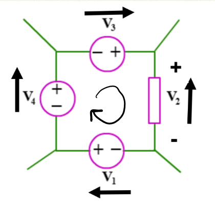
$$ -V_1 + V_2 - V_3 - V_4 = 0$$
Sign convention
- If voltage rise and current in a voltage source are in the same direction, the voltage is denoted as negative
- If voltage rise and current are in opposite direction, voltage is positive
- In a resistor, current opposes voltage rise
Steps
- Identify meshes (loops) (always clockwise) and assign currents $I_1, I_2,$ etc to those loops
- Apply KVL to each mesh to generate system of equations
- Solve equations
Where there are elements that are part of multiple meshes, subtract the currents of the other meshes from the mesh currently being considered to consider the total current through that circuit element.
Example

There are three meshes in this circuit, labelled $I_1$, $I_2$, $I_3$.
For $I_1$: $$ -50 + 70I_1 + 20(I_1 - I_2) + 30(I_1 - I_3) + 40 I_1 = 0$$
For $I_2$: $$20(I_2 - I_1) + 100I_2 + 80 I_2 + 10(I_2 - I_3) = 0$$
For $I_3$: $$30(I_3 - I_1) + 10(I_3 - I_2) + 60I_3 + 90I_3 = 0 $$
This forms a system of equations:
$$ 160 I_1 - 20 I_2 - 30 I_3 = 50 \ -20 I_1 + 210 I_2 - 10 I_3 = 0 \ -30 I_1 - 10 I_2 + 190 I_3 = 0 \ $$
Solving yields $I_1 = 325, mA$, $I_2 = 34, mA$, and $I_3 = 53,mA$.
Impedance Matrices
Similar to how systems of equations from nodal analysis form admittance matrices, mesh analysis forms impedance matrices which describe the circuit being analysed. The matrix equation takes the form $Z \cdot I = V$. As an example, the matrix equation for the system above is:
$$
\begin{pmatrix} 160 & -20 & -30\ -20 & 210 & -10 \ -30 & -10 & 190 \end{pmatrix}
,
\begin{pmatrix} I_1 \ I_2 \ I_3 \end{pmatrix}
=
\begin{pmatrix} 50 \ 0 \ 0 \end{pmatrix}
$$
Therefore, the impedance matrix for the system is:
$$ Z = \begin{pmatrix} 160 & -20 & -30\ -20 & 210 & -10 \ -30 & -10 & 190 \end{pmatrix} $$
Another Example
Determine the currents in the circuit shown below:
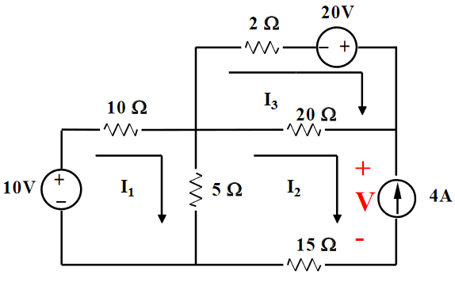
Loop 1: $$-10 + 10I_1 + 5(I_1 - I_2) = 0$$
Loop 2: $$5(I_2 - I_1) + 20(I_2 - I_3) + V + 15I_2 = 0$$
Where there is a current source, a voltage $V$ is assumed accross it.
Loop 3: $$2I_3 - 20 + 20(I_3 - I_2) = 0 $$
There are now 3 equations with 4 unknowns. However, it can be seen from the diagram that $I_2 = -4, A$ (the direction of the current source opposes our clockwise current), so the system can be solved as follows:
$$I_2 = -4 , A$$ $$I_1 = \frac{10 + 5 I_2}{15} = -0.67 , A$$ $$I_3 = \frac{20 + 20 I_2}{22} = -2.73 , A$$
Example with dependant sources
Calculate the power dissapated in the 4 $\Omega$ resistor and the power delivered/absorbed by the current dependant voltage source. 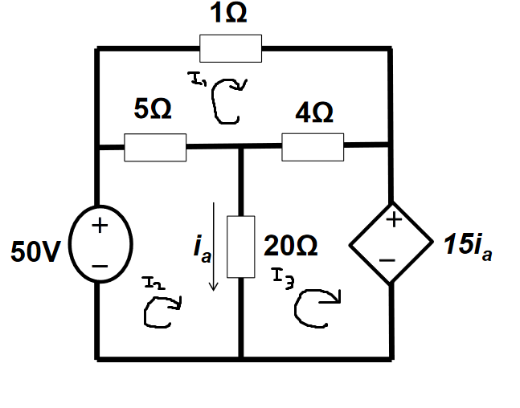
KVL round $I_1$:
$$I_1 + 4(I_1 - I_3) + 5(I_1 - I_2) = 0$$
KVL round $I_2$:
$$5(I_2 - I_1) + 20(I_2 - I_3) - 50 = 0$$
KVL round $I_3$:
$$15I_a + 20(I_3 - I_2) + 4 (I_3 - I_1) = 0$$
$I_a = I_2 - I_3$, so this can be substituted into equation 3 to obtain a fourth equation:
$$ 15(I_2 - I_3) + 20(I_3 - I_2) + 4(I_3 - I_1) = 0 $$
The system of equations then solves:
$$ \begin{pmatrix} 10 & -5 & -4\ -5 & 25 & -20 \ -4 & -5 & 9 \end{pmatrix}
,
\begin{pmatrix} I_1 \ I_2 \ I_3 \end{pmatrix}
=
\begin{pmatrix} 0 \ 50 \ 0 \end{pmatrix}
\Longrightarrow
\begin{pmatrix} I_1 \ I_2 \ I_3 \end{pmatrix}
=
\begin{pmatrix} 26 \ 29.6 \ 28 \end{pmatrix} $$
The power dissapated in the 4 $\Omega$ resistor: $$P = I^2R = 2^2 \times 4 = 16 W$$
The power delivered/absorbed by the dependant voltage source: $$P = IV = 15I_a \times I_2 = 15(29.6-28) \times 28 = 672 W (absorbing)$$ The source is absorbing power as the current $I_2$ opposes the direction of voltage rise in the source.
Thevenin and Norton Equivalent Circuits
Thevenin's Theorem states that as far as its appearance from outside is concerned, any two terminal network of resistors and energy sources can be replaced by a series combination of an ideal voltage source V and a resistor R, where V is the open-circuit voltage of the network and R is the resistance that would be measured between the output terminals if the energy sources were removed and replaced by their internal resistance.
In practice, this can be used for reducing complex circuits to a more simple model: taking networks of resistors/impedances and reducing them to a simple circuit of one source and one resistance.
- Thevenin circuits contain a single voltage source and resistor in series
- Norton circuits contain a single current source and a resistor in parallel
Calculating Equivalent Circuits
Any linear network viewed through 2 terminals is replaced with an equivalent single voltage & resistor.
- The equivalent voltage is equal to the open circuit voltage between the two terminals ($V_{oc}$/$V_{th}$)
- The equivalent resistance ($R_{th}$) is found by replacing all sources with their internal impedances and then calculating the impedance of the network, as seen by the two terminals.
- This can be done alternatively by calculating the short circuit current ($I_{sc}$/$I_N$) between the two terminals, and then using ohms law: $R_{th} = \frac{V_{th}}{I_{sc}}$.
- The value of the voltage source in a Thevenin circuit is $V_{th}$
- The value of the current source in a Norton circuit is $I_{N}$
- The value of the resistor in either circuit is $R_{th}$

Often, nodal/mesh analysis is needed to determine the open circuit voltage and/or short circuit current.
Maximum Power Transfer
For the maximum power transfer between a source and a load resistance in a Thevenin circuit, the load resistance must be equal to the thevenin resistance $R{th}$_. This can be trivially proved, and is left as an exercise to the reader.
Example 1
Determine the Thevenin equivalent of the following:

The open circuit voltage accross the two terminals can be calculated using the voltage divider rule, as the two resistors $R_1$ and $R_2$ split the voltage.

$$V_{oc} = V_{th} = 30 \times \frac{10k}{10k + 10k} = 15 , V$$
The short circuit current can be calculated by nodal analysis. When calculating the short circuit current, it is assumed that the two terminals are connected (shorted), so current can flow between them.

KCL at the node labelled V:
$$\frac{V-30}{10k} + \frac{V}{10k} + \frac{V}{10k} = 0$$ $$V = 10 , V$$
The voltage when the terminals are shorted is 10 V, so the short circuit current can be calculated using ohm's law:
$$I_{sc} = \frac{V}{R_2} = 1,mA$$
Which gives
$$R_{th} = \frac{V_{th}}{I_{sc}} = \frac{15, V}{1 , mA} = 15 , k\Omega$$
The resistance can alternatively be calculated by replacing the voltage source with it's internal resistance (0), and then determining the overall resistance of the network:

$$ R_{th} = R_2 + (R_1 || R_3) = R_2 + \frac{R_1 \cdot R_3}{R_1 + R_3} = 15 , k\Omega$$
The resulting Thevenin circuit is therefore:

Example 2
Find the Thevenin equivalent circuit of the the network as seen by the two terminals A & B, and therefore the power dissapated/absorbed by the 12V source.

Open Circuit

Doing nodal analysis to determine voltages:
$V_1$: $$-4.8 + \frac{V_1}{7.5} + \frac{V_1 - V_2}{2.5} = 0$$ $$4V_1 - 3 V_2 = 36$$ $V_2$: $$\frac{V_2 - V_1}{2.5} + \frac{V_2}{10} + I = 0$$ $V_3$: $$-I + \frac{V_3}{2.5} = 0$$
Combining 2 & 3 by cancelling the assumed current $I$:
$$\frac{V_2 - V_1}{2.5} + \frac{V_2}{10} + \frac{V_3}{2.5} = 0$$ $$-4 V_1 + 5 V_2 +4 V_3 = 0 $$
Using $I_x$ to generate another equation:
$$I_x = V_1 - 7.5$$ $$V_3 - V_2 = I_x$$ $$V_1 + 7.5V_2 - 7.5V_3 = 0$$
This gives a system of 3 equations in 3 unknowns which can be solved to determine the node voltages:
$$ \begin{pmatrix} 4 & -3 & 0\ -4 & 5 & 4 \ 1 & 7.5 & -7.5 \end{pmatrix}
,
\begin{pmatrix} V_1 \ V_2 \ V_3 \end{pmatrix}
=
\begin{pmatrix} 36 \ 0 \ 0 \end{pmatrix} $$
$$ \begin{pmatrix} V_1 \ V_2 \ V_3 \end{pmatrix}
=
\begin{pmatrix} 12.64 \ 4.86 \ 6.55 \end{pmatrix} $$
$V_3$ is equal to $V_{oc}$, so $V_{th} = 6.55 , V$
Short Circuit

The same nodal analysis is needed, except this time the terminals are shorted. The steps are pretty much identical.
$V_1$ is the exact same, $4 V_1 - 3V_3 = 36$
$V_2$: $$\frac{V_2 - V_1}{2.5} + \frac{V_2}{10} + I = 0$$ $V_3$: $$-I + \frac{V_3}{2.5} + \frac{V_3}{1} = 0$$
2 & 3 are combined in the same way, except yielding a slightly different equation, as this time current can flow to ground from $V_3$ through the 1 \Omega Resistor.
$$-4V_1 + 5V_2 + 14V_3 = 0$$
The third equation generated using $I_x$ is also the same, $V_1 + 7.5V_2 - 7.5V_3 = 0$
The solution to this system is very similar to above:
$$ \begin{pmatrix} 4 & -3 & 0\ -4 & 5 & 14 \ 1 & 7.5 & -7.5 \end{pmatrix}
,
\begin{pmatrix} V_1 \ V_2 \ V_3 \end{pmatrix}
=
\begin{pmatrix} 36 \ 0 \ 0 \end{pmatrix} $$
$$ \begin{pmatrix} V_1 \ V_2 \ V_3 \end{pmatrix}
=
\begin{pmatrix} 9.82 \ 1.1 \ 2.42 \end{pmatrix} $$
The short circuit current is then calculated as:
$$I_{sc} = \frac{V_3}{1} = 2.42 , A$$
Solution
The Thevenin resistance is calculated as:
$$R_{th} = \frac{V_{oc}}{I_{sc}} = \frac{6.55}{2.42}$$

The power delivered to the 12V source is therefore:
$$P = IV = \frac{12 - 6.55}{2.7} \times 12 = 24 , W $$
First Order RC Circuits
RC circuits are those containing resistors and capacitors. First order means they can be modelled by first order differential equations
Capacitors
Capacitors are reactive elements in circuits that store charge. They work by creating an electric field between two parallel plates seperated by a dielectric insulator.

- When charging, the electrons between the plates separate. At full charge, all electrons will be on opposite plates.
- When discharging, the plates discharge and the charges recombine, forming a current
Equations
Capacitance of a specific capacitor, where
- $A$ = the area of the two plates
- $d$ = the separation of the two plates
- $\epsilon_r$ = the relative electric permittivity of the insulator
- $\epsilon_0$ = the permittivity of free space
$$C = \frac{A \epsilon_r \epsilon_0}{d}$$
The charge on a capacitor is equal to the product of the capacitance and the voltage accross it: $$Q = C \cdot V$$
This can be used to derive the i-v equation for a capacitor:
$$C = \frac{Q}{V} = \frac{\int I , dt}{V}$$ $$\int I , dt = CV$$ $$I = C , \frac{dV}{dt} $$
This equation is important as it shows how current leads voltage in a capacitor by a phase of $\frac{\pi}{2}$ rads.
Energy
The energy stored in a capacitor:
$$W = \frac{1}{2}CV^2 = \frac{1}{2}QV = \frac{Q^2}{2C}$$
Series and Parallel Combinations
Capacitance combines in series and parallel in the opposite way to resistors.
For capacitors in series: $$\frac{1}{C_t} = \frac{1}{C_1} + \frac{1}{C_2}$$
In parallel: $$C_t = C_1 + C_2$$
Charging and Discharging
- When a voltage is applied to a capacitor, an electric field is formed between the two plates, and the dielectric becomes polarised.
- As the capacitor charges, the charges in the dielectric separate which forms a displacement current. At time $t=0$, the capacitor behaves as a short circuit
- Capacitors charge exponentially, so the time at which one is fully charged is describes as time $t=\infty$. At this time, the capacitor can take no more charge, so it behaves as an open circuit
- When discharging, the displaced charges flow round the circuit back to the other side of the capacitor.
- The charge decays exponentially over time.
Step Response
Capacitors charge and discharge at exponential rates, and there are equations which describe this response to a step input.

The step response of a charging capacitor at time $t$, assuming the switch is closed at time $t=0$:
$$V_c(t) = V_{in} + (V_0 - V_{in}) e^{- \frac{t}{RC}}$$
Equations for current can be derived from this by differentiation:
$$I_c(t) = C \frac{d}{dt} V_c(t)$$
Assuming $V_0 = 0$, the equations for current and voltage when charging at time $t$ are:
$$I_c(t) = I_{in} ; e^{- \frac{t}{\tau}}$$ $$V_c(t) = V_{in} (1-e^{- \frac{t}{\tau}})$$
Where $I_{in}$ and $V_{in}$ are the input current and voltage, respectively. Similar equations exist for discharging. Voltage at time $t$ when discharging:
$$V(t) = V_0e^{- \frac{t}{\tau}}$$
Time constant
$\tau = RC$ is the time constant of the circuit, which describes the rate at which it charges/discharges. 1 time constant is the time in seconds for which it takes the charge of a capacitor to rise by a factor of $1- e^{-1}$ (approx 63%). As charging and discharging are exponential, a capacitor will only be fully charged when $t=\infty$. However, in practical terms, a capacitor can be considered charged at $t = 5\tau$.
Example
In the circuit below, determine equations for the response of the capacitor when the switch is moved to position 2.
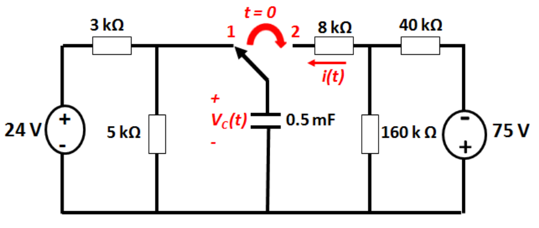
$V_0$ is equal to the voltage accross the capacitor at time $t=0$, which is the same as the voltage accross the 5 $k, \Omega$ resistor. When capacitors are fully charged, they are open circuit, so it is not conducing current, making the two voltages equal.
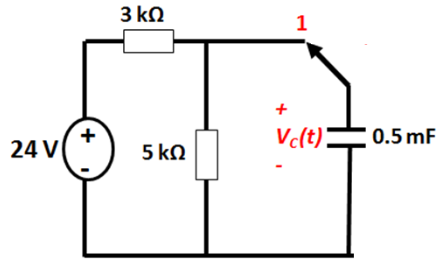
$$V_0 = 24 \times \frac{5}{3+5} = 15V$$
$V_{in}$ is equal to the voltage of the charging circuit as seen by the capacitor. This can be calculated as the thevenin equivalent of the circuit when the switch is in the right position.
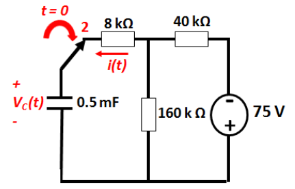
$$V_{th} = -75 \times \frac{160k}{160k + 40k} = -60 , V$$ $$R_{th} = 8k + \frac{160k \times 40k}{160k + 40k} = 40 k\Omega$$
The time constant of the circuit:
$$\tau = R_{th} \times C = 40k \times 0.5m = 0.05$$
Therefore:
$$V_c(t) = V_{th} + (V_0 - V_{th}) e^{- \frac{t}{\tau}} = -60 + 75 e^{-0.05t} , V$$
The current can be calculated using $I = C \frac{d}{dt} V$: $$I_c(t) = C \frac{d}{dt} V_c(t) = 0.5m \times \frac{d}{dt}( -60 + 75 e^{-0.05t}) = -1.87e^{-0.05t} ,mA$$
Another Example
For the circuit shown below:
- Determine Thevenin circuit as seen by capacitor in position 1
- Calculate the time constant of the circuit for time $t > 0$
- Derive an equation for $V_c(t)$ for $t > 0$
- Calculate the time taken for the capacitor voltage to fall to zero
- Derive an equation for $I_c(t)$ for $t > 0$
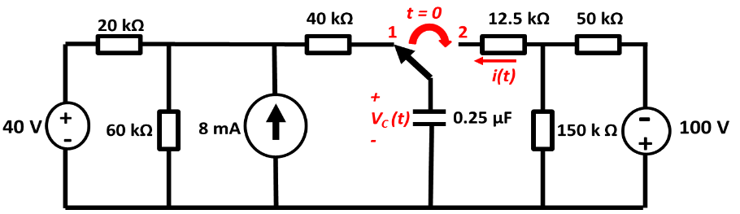
t < 0
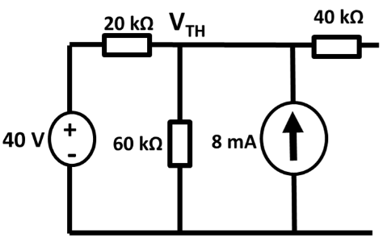
The Thevenin voltage of the left hand bit of the circuit can be calculated by KCL:
$$\frac{V_{th} - 40}{20k} + \frac{V_{th}}{60k} - 8 = 0$$ $$V_{th} = 150 , V $$
Calculating Thevenin resistance by summing resistances:
$$R_{th} = 40k + \frac{20k \times 60k}{20k + 60k} = 55 , k \Omega$$
t > 0
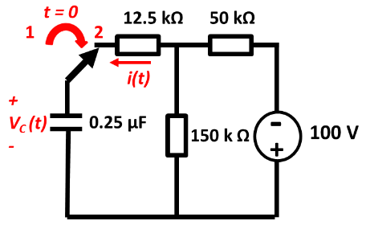
The Thevenin voltage of the right hand side as seen by the capacitor, using the voltage divider rule:
$$V_{th} = -100 \times \frac{150k}{150k + 50k} = -75 , V$$
Thevenin Resistance:
$$R_{th} = 12.5k + \frac{150k \times 50k}{150k + 50k} = 50 , k \Omega$$
This gives the time constant $\tau = 50k \times 0.25\mu = 12.5 , ms$
Deriving transient equations:
$$V_c(t) = V_{th} + (V_0 - V_{th}) e^{- \frac{t}{\tau}} = -75 + (150 -- 75)e ^{- \frac{t}{12.5}}$$ $$V_c(t) = -75 + 225 e ^{- 80t}$$ $$I_c(t) = C \frac{d}{dt}V_c(t) = 0.25\mu \times (-75 + 225 e ^{- 80t}) = 4.5 e^{-80t} , mA$$
For $V_c$ to fall to zero: $$ -75 + 225 e ^{- 80t} = 0$$ $$e^{-80t} = \frac{1}{3}$$ $$t = -\frac{1}{80} ln(0.33333) = 13.7 , ms$$
First Order RL Circuits
Basically the same as RC circuits, but with inductors instead.
Inductors
Inductors are reactive components, similar to capacitors. The difference is that while capacitors store energy in electric fields, inductors store it in magnetic fields. They do this with coils of wire wrapped around ferromangetic cores. Inductance is measured in Henries H and has symbol $L$.
Inductance can be calculated as $$L = \frac{\mu_0 \mu_r A N^2}{l}$$ where
- $N$ is the number of turns in the coil
- $l$ is the circumference of the core
- $A$ is the cross-sectional area of the core
- $\mu_0$ is the permeability of free space
- $\mu_r$ is the relative permeability of the core
Inductance
-
Current passing through a conductor (the coil of wire) causes a change in magnetic flux which magnetises the coil.
-
This change in flux induces an EMF (Electro-Motive Force) in any conductor within it.
-
Faraday's Law states that the magnitude of the EMF induced in a circuit is proportional to the rate of change of flux linking the circuit
-
Lenz's Law states that the direction of the EMF is such that it tends to produce a current that opposes the change of flux responsible for inducing the EMF in the first place
-
Therefore, as we attempt to magnetise an inductor with a current, it induced a back EMF while it's field charges
-
One the inductor is fully charged, the back EMF dissapears and the inductor becomes a short circuit (it is just a coil of wire, after all).
-
When a circuit forms a single coil, the EMF induced is given by the rate of change of the flux
-
When a circuit contains many coils of wire, the resulting EMF is the sum of those produced by each loop
-
If a coil contains N loops, the induced voltage $V$ is given by the following equation, where $\Phi$ is the flux of the circuit. $$ V = -N \frac{d\Phi}{dt}$$
-
This property, where an EMF is induced by a changing flux, is known as inductance.
Self - Inductance
- A changing current causes a changing field
- which then induced an EMF in any conductors in that field
- When any current in a coil changes, it induced an EMF in the coil
$$V= L \frac{dI}{dt}$$
This equation describes the I-V relationship for an inductor. It can be derived from the equations for faraday's law and inductance.
Energy Stored
The energy stored in an inductor is given by $$W = \frac{1}{2}LI^2$$
Series & Parallel Combinations
Inductors sum exactly the same way as resistors do. In series:
$$L_t = L_1 + L_2$$
And in parallel:
$$\frac{1}{L_t} = \frac{1}{L_1} + \frac{1}{L_2}$$
DC Conditions
The final constant values of a circuit, where current and voltage are both in a "steady-state" is known as DC conditions. Under DC conditions:
- Capacitor acts as open circuit
- Inductor acts as short circuit
Response of RL Circuits
Inductors exhibit the same exponential behaviour as capacitors. In a simple first order RL circuit:

- Inductor is initially uncharged with a current at 0
- When the circuit is switched on at time t=0, $I$ is initially 0 as the inductor is open circuit.
- $V_R$ is initially 0
- $V_L$ is initially V
- As the inductor energises, $I$ increases, $V_R$ increases, so $V_L$ decreases
- This is where the exponential behaviour comes from
Equations for Step Response
Consider the circuit above, where thw switch is closed at time t=0. KVL can be used to derive an equation for the current in the circuit over time, which is shown below:
$$I(t) = \frac{V_{in}}{R} + (I_0 - \frac{V_{in}}{R}) e^{-\frac{t}{\tau}}$$
Where the time constant $\tau = \frac{L}{R}$. The inductor voltage at time $t$ is equal to: $$V_L(t) = (V_{in} - I_0R) e^{-\frac{t}{\tau}}$$
When discharging, the current at time $t$ is equal to: $$I(t) = I_0 e^{-\frac{t}{\tau}}$$
Note that $\frac{V_{in}}{R}$ is equal to current $I_{in}$ / $I_{\infty}$, by ohm's law.
RC vs RL Circuits
RC circuits and RL circuits are similar in some respects, but different in others.
RC Equations
$$I = C \frac{dV}{dt}$$ $$V_{in} = IR + V_C = RC \frac{dV}{dt} + V_C$$ $$V_C(t) = V_{in} + (V_0 - V_{in})e^{-frac{t}{\tau}}$$ $$\tau = RC$$
RL Equations
$$V = L \frac{dI}{dt}$$ $$V_{in} = IR + V_L = IR + L \frac{d}{dt}I_L$$ $$I_L(t) = \frac{V_{in}}{R} + (I_0 - \frac{V_{in}}{R}) e^{-\frac{t}{\tau}}$$ $$\tau = \frac{L}{R}$$
Examples
In the circuit below, the switch is opened at time $t=0$. Find:
- $I(t)$ for $t > 0$
- $I_0(t)$ for $t > 0$
- $V_0(t)$ for $t > 0$

$I(t)$
Looking for something of the form $I_L(t) = \frac{V_{in}}{R} + (I_0 - \frac{V_{in}}{R}) e^{-\frac{t}{\tau}}$
In steady state, before the switch is opened, all of the current flows through the inductor as it is short circuit, meaning $I_0 = 20 , A$.
When the switch is opened there is no energy supplied to the circuit, so the inductor discharges through the right hand half of the circuit. The inductor can see a resistance of $R_{eq} = 2 + 10 || 40$:
$$R = 2 + \frac{1}{\frac{1}{10} + \frac{1}{40}} = 10 , \Omega$$
There is no input voltage, so: $$I_L(t) = 0 + (I_0 - 0) e^{-\frac{t}{\tau}}$$ $$\tau = \frac{2}{10} = 0.25$$ $$I(t) = 20 e^{-5t}$$
$I_0(t)$
This can simply be calculated using the current divider rule:
$$I_0(t) = -20e^{-5t} \times \frac{10}{10 + 40} = -4 e^{-5t}$$
$V_0(t)$
Using ohm's law:
$$V_0(t) = I_0(t)R = 40 \times -4 e^{-5t} = -160 e^{-5t} $$
AC Circuits
- AC current is the dominant form of electricity
- Current changes direction at a fixed frequency (usually 50~60Hz)
- AC voltage is generated by a rotating electromagnetic field
- The angular velocity of this rotation determines the frequency of the current
An instantaneous voltage $V$ in a sine wave is described by:
$$V = V_p , \sin(\omega t + \phi)$$
Where:
- $V_p$ is the peak voltage
- $\omega$ is the angular frequency (rad/s)
- $\phi$ is the phase shift (radians)
- The period of the wave is given by $T = \frac{ 2\pi}{f}$
$V_p$, $\omega$ and $\phi$ define a waveform
As current and voltage are proportional, AC current is defined in a similar way:
$$I = I_p , \sin(\omega t + \phi)$$
Euler's Identity and Phasors
A phasor is a vector that describes a point in a waveform. A vector has a magnitude and a direction, which describe the amplitude $V_p$ and the phase $\phi$ of the signal, respectively. The rate at which the phasor "rotates" is the frequency of the signal.

An AC phasor can be represented as a complex number.
$$A \sin (\omega t + \phi) = A \cos \phi + jA \sin \phi = e^{j\phi}$$
This formula can be used to go from anywhere on a waveform to a phasor, for example:
$$V = 5 \sin(\omega t + 30) = 5 e ^{30j} = 5 ;\angle 30^{\circ}$$
Reactance and Impedance
- The ratio of voltage to current is a measure of how a component opposes the flow of electricity
- In a resistor, this is resistance
- In inductors and capacitors, this property is reactance, $X$, measure in ohms $\Omega$
- Can still be used in a similar way to resistance
- Ohm's law still applies, $V = IX$
- Capacitative reactance $X_C = \frac{1}{\omega C}$
- Inductive reactance $X_L = \omega L$
- $\omega$ is the angular frequency of the AC current
- Both reactance and resistance are impedances
- Impedance $Z$ is also measured in ohms
- The impedance of a component is how hard it is for current to flow through it
- Impedance represents not only the magnitude of the current, but the phase
Inductance
The voltage accross an inductor is: $$V_L = L \frac{d}{dt}I_L$$
In an AC circuit: $$I_L = I_p \sin(\omega t + \phi) = I_p ;\angle \phi = I_p e^{j \phi}$$ $$V_L = L \frac{d}{dt}I_L = L \omega I_p \cos(\omega t) = \omega L I_p \sin(\omega t + \phi + 90^{\circ}) = \omega L I_p ;\angle (\phi + 90^{\circ})$$
When an AC current flows through an inductor, an impedance applies
$$Z_L = \frac{V_L}{I_L} = \frac{\omega L I_p ;\angle (\phi + 90^{\circ})}{I_p ;\angle \phi } = \omega L ;\angle 90^{\circ} = j \omega L$$
The impedance of an inductor is $j$ times its reactance: $$Z_L = j X_L = j \omega L$$
Capacitance
Capacitors have a similar property: $$I_C = C \frac{d}{dt} V_c$$ $$V_C = V_p \sin(\omega t + \phi) = V_p e^{j \phi}$$ $$I_C = C \frac{d}{dt} V_p \sin(\omega t + \phi) = \omega C V_p \sin(\omega t + \phi + 90^{\circ}) $$ $$Z_C = \frac{V_L}{I_L} = \frac{V_p e^{j \phi}}{\omega C V_p e^{j(\phi + 90)}} = \frac{1}{\omega C j}$$
Capacitive Impedance:
$$Z_C = - j X_c =\frac{1}{j\omega C} $$
Complex Impedance
Impedance not only changes the magnitude of an AC current, it also changes its phase.
- In a capacitor, voltage leads current by a phase of 90 degrees
- In an inductor, current leads voltage by a phase of 90 degrees
- CIVIL: Capacitor I leads V, V leads I in inductor
The diagram below shows the effect of reactance on phase shift.

Consider the circuit below, containing an inductor and resistor in series. The phasor diagram shows the effect of the impedances on the voltage. The inductor introduces a phase shift of 90 degrees into the voltage.

The magnitude of the voltage accross both components is: $$V = \sqrt{(V_R)^2 + (V_L)^2} = \sqrt{(IR)^2 + (IX_L)^2} = I \sqrt{R^2 + (X_L)^2} = IZ$$ where Z is the magnitude of the impedance, $Z = |\mathbf{Z}|$
From the phasor diagram, the phase shift of the impedance is: $$\phi = \tan^{-1} \frac{V_L}{R_L} = \tan^{-1} \frac{IX_L}{IR} = \tan^{-1} \frac{X_L}{R}$$
Complex impedances sum in series and parallel in the exact same way as normal resistance.
Example 1
Determine the complex impedance of the following combination at 50 Hz

$$Z_T = Z_C + Z_R + Z_L = R + jX_L - jX_C = R + j(\omega L - \frac{1}{\omega C})$$ At 50Hz, the angular frequency $\omega = 2 \pi f = 314$ rad/s $$= 200 + j(314 \times 400m - \frac{1}{314 \times 50 \mu}) = 200 + 62j \Omega$$
Example 2
Determine the complex impedance and therefore the current in the following combination

Since $V = 100 \sin(250t)$, $\omega = 250$
$$Z_T = R - jX_C = 100 - \frac{j}{\omega C} = 100 - j\frac{1}{250 \times 10^{-4}} = 100 - 40j$$
The current can be calculated from the impedance using ohm's law: $$I = \frac{V}{Z} = \frac{100}{100 - 40j} = 0.86 + 0.34j = 0.93 ,\angle 21.8^{\circ}$$
Diodes
Diodes are semiconductor devices that allow current to flow only in one direction. Diodes look like this:
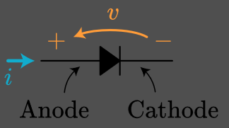
The diagram is labelled with an anode and a cathode. The voltage drop accross the diode is from anode -> cathode, and the current is conducted in the direction pointed by the really big black arrow.
The type's of diode's we're concerned with are silicon diodes, which have a forward voltage of about 0.7V. This is only an approximation, but is the value to use in calculations.
IV characteristics
Diodes are non-linear components:

- When current is flowing from anode to cathode, the diode is forward-biased, and will conduct current
- When the current is flowing backwards (the wrong way), the diode is reverse-biased.
- At a large negative voltage, the diode will break down, and start to conduct current again
- Don't let the voltage get this high, you wont like what happens.
Forward Voltage
For the diode to conduct, it must have a minimum voltage accross it, known as the forward voltage. This is also always the total voltage drop accross the diode. For a silicon diode, this is 0.7V, which is why the I-V graph does not go up from zero. The diode can be said to "open" or "switch on" at about this voltage.
- If there is a voltage of 0.2V accross a diode, no current will flow
- If there is a voltage of 0.6V accross a diode, a tiny amount of current may flow
- At >0.7V, the full current will flow with no resistance.
Example 1
Find the current and the voltages accross each component in the circuit below.
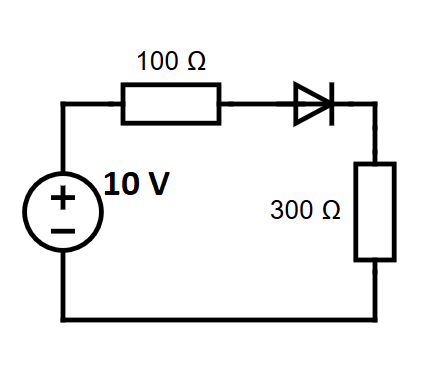
By Ohm's law, the current is:
$$I = \frac{V_{in} - V_D}{R_t} = \frac{10 - 0.7}{100 + 300} = 23.25 , mA$$
Thefore, the voltages are $$V_{300R} = 300 \times 23.25 = 6.98 , V$$ $$V_{100R} = 100 \times 23.25 = 2.32 , V$$ $$V_D = 0.7V$$
Example 2
Find the current through each resistor in the circuit below.
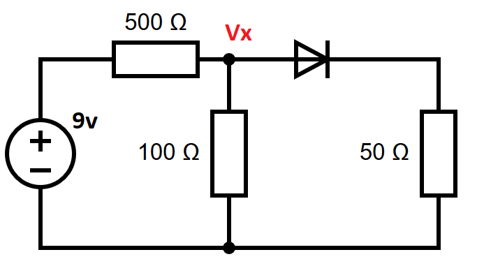
Doing KCL around node $V_x$:
$$\frac{V_x - 9}{500} + \frac{V_x}{100} + \frac{V_x - 0.7}{50} = 0$$ $$V_x = 1 , V$$
The three currents are then:
$$I_{500R} = \frac{9-1}{500} = 16 , mA$$ $$I_{100R} = \frac{1}{100} = 10 , mA$$ $$I_{50R} = \frac{1 - 0.7}{50} = 6 , mA$$
Transistors
Transistors are semiconductor devices based on P-N junctions. They have three terminals, the arrangement of which depends on the kind of transistor:
- Base
- Emitter
- Collector
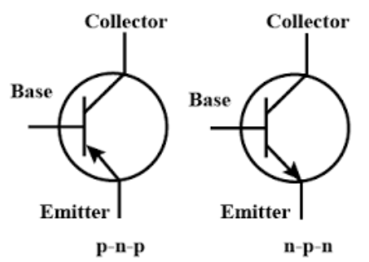
KCL applies, meaning the currents in the transistor sum to zero: $$I_E = I_C + I_B$$
Transistors, like diodes are also semiconductors, meaning there is a voltage drop of 0.7 volts between the base and the emitter. When there is no collector current, transistors behave like a diode.
Transistors also have a current gain, meaning the current flowing into the collector is related to the current flowing into the base: $$I_C = \beta I_B$$
NPN Transistors
- The base-emitter junction behaves like a diode
- A base current $I_B$ only flows when the voltage $V_BE$ is sufficiently positive, ie $ \ge 0.7V$.
- The small base current controls the larger collector current, flowing from collector to emitter
- $I_C = \beta I_B$ - the current gain, showing how base current controlls collector current
Functionally, transistors are switches that emit a current from collector to emitter dependant upon the base current.
Example
For the circuit below, find the base and collector currents using a gain of $\beta = 200$.
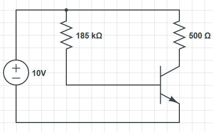
The base current can be calculated using ohm's law, taking into account the 0.7V drop between base and emitter: $$I_B = \frac{10 - 0.7}{185k} = 50.2 ;\mu A$$
As there is sufficient voltage for the transistor to be on, the collector current is therefore: $$I_C = \beta I_B = 200 \times 50.2 ;\mu A = 10 ; mA$$
PNP Transistors
The diagram at the top of the page shows the circuit symbols for both kinds of transistor. The difference between the two is the way the emitter points, which is the direction of current flow in the transistor, and also the direction of voltage drop. An NPN transistor has a forward-biased junction, whereas PNP is reverse biased. Functionally, the difference between the two is that for a PNP transistor to be "on", the emitter should be at $0.7V$ higher than the base.
Example
Note that this circuit uses a PNP transistor, so the base is at a lower voltage than the emitter. Also note that one of the resistors is not labelled. This is because the value of it is irrelevant, as the collector current is dependant upon the bias of the transistor.
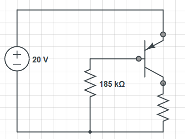
$$I_B = \frac{20-0.7}{185k} = 104 ;\mu A$$ $$I_C = 200 \times I_B = 20.8 ; mA$$
Emitter Current
Notice that in the two examples, the collector current is much larger than the base, due to the large gain on the transistor. When there is a large gain $\beta$: $$I_E = I_C + I_B$$ $$I_E = \beta I_B + I_B \approx \beta I_B$$ $$I_E \approx \beta I_B = I_C$$
From the example above: $I_E = I_B + I_C = 104 ;\mu A + 20.8 ; mA = 20.9 ; mA \approx I_C$
Op Amps
Operational Amplifiers (Op-Amps) are high-gain electronic voltage amplifiers. They have two inputs, an output, and two power supply inputs. Op amps require external power, but this is implicit so is often emitted in circuit diagrams.
Op amps are differential amplifiers, meaning they output an amplified signal that is proportional to the difference of the two inputs. They have a very high gain, in the range of $10^4$ to $10^6$, but this is assumed to be infinite in ideal amplifiers. The output voltage is calculated by:
$$V_0 = A(V_2 - V_1)$$
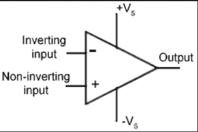
Ideal Model
An ideal model of an op amp is shown below

- Open loop gain is infinite
- The gain of the op amp when there is no positive or negative feedback
- Input impedance ($Z_{in}$) is infinite
- Ideally, no current flows into the amplifier
- Output impedance ($Z_{out}$) is zero
- The output is assumed to act like a perfect voltage source to supply as much current as possible
- Bandwith is infinite
- An ideal op amp can amplify any input frequency signal
- Offset Voltage is zero
- The output will be zero when the input and output voltage are the same
Ideal Circuits
Op amps can be used to design inverting and non-inverting circuits.
Inverting
- Negative feedback is used to create an amplifier that is stable, ie doesn't produce a massive voltage output.
- This creates closed loop gain, which controls the output of the amplifier
- The non-inverting input is grounded
- The negative feedback reverses the polarity of the output voltage
- As the output of the op amp is only a few volts, and the gain of the op amp is very high, it can be assumed that the voltage at both inputs is equal to zero volts
- This creates a "virtual earth" at the node shown on the diagram

Using KCL at this node, it can be shown that:
$$\frac{V_{out}}{V_{in}} = \frac{ - R_F}{R_{in}}$$
The gain of the amplifier is set by the ratio of the two resistors.
Non-Inverting
Non-inverting amplifiers don't invert the voltage output, and use input at the non-inverting terminal of the op amp instead.

The output of the amplifier is calculated by:
$$\frac{V_{out}}{V_{in}} = 1 + \frac{ R_F}{R_2}$$
Op Amps as Filters
Filters take AC signals as input, and amplify/attenuate them based upon their frequency.
Low Pass Filter
Take a simple inverting amplifier circuit, and add a capacitor in parallel.
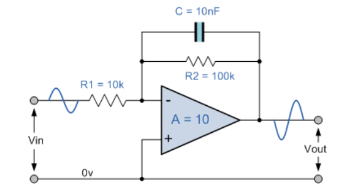
The gain is now a function of the input frequency, which makes the circuit a filter. The reactance of the capacitor $X_C = \frac{1}{ \omega C}$. The impedance of the capacitor and resistor in parallel:
$$Z = \frac{R_2 jX_C}{R_2 + j X_C} = \frac{R_2}{1 + j \omega C R_2}$$
The gain as a function of $j\omega$ is therefore:
$$A(j \omega ) = \frac{V_{out}(j \omega)}{V_{in}(j \omega)} = \frac{-Z}{R_1} = - \frac{R_2}{1 + j \omega C R_2} \times \frac{1}{R_1}$$
- Gain is measured in decibels
- As the input frequency increases, gain decreases
- At very low frequencies, the gain is constant (0dB)
- The capacitor has high reactance at low frequencies, and is open circuit at very low frequencies
- At very high frequencies, the gain tends towards $-\infty$ dB
- The capacitor has a very low reactance at high frequencies (short circuit)

Cutoff Frequency
The cutoff frequency of a filter is the point at which the gain is equal to -3 dB, which corresponds to a fall in output by a factor of $\frac{1}{\sqrt{2}}$. For the filter shown above, this is:
$$f_c = \frac{1}{2 \pi R_2 C}$$
High Pass Filter
A high pass filter is designed in a similar way
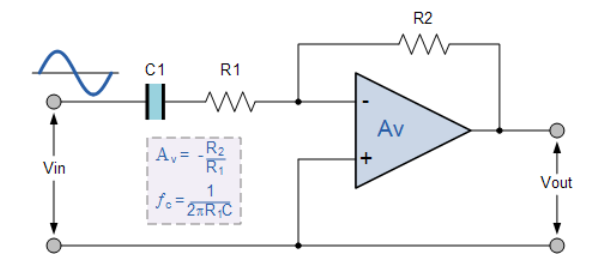
This time, the impedance of the capacitor-resistor combination is:
$$Z = R_1 + \frac{1}{j \omega C} = \frac{1 + j \omega C R_1}{j \omega C}$$
Which makes the gain:
$$A(j \omega ) = \frac{V_{out}(j \omega)}{V_{in}(j \omega)} = \frac{-R_2}{Z} = - R_2 \times \frac{j \omega C}{1 + j \omega C R_1}$$
The cutoff frequency for this filter is:
$$f_c = \frac{1}{2 \pi R_1 C}$$
Which is similar to the other one, just with the other resistor.

Voltage Transfer Characteristics
- The voltage transfer characteristic of an amplifier shows the output voltage as a function of the input voltage
- The output range is equal to the range of the power supplies
- Where the slope = 0, the amplifier is saturated
- Where the slope > 0, the gain is positive
- Where the slope < 0, the gain is negative
- When the amplifier is saturated the signal becomes distorted
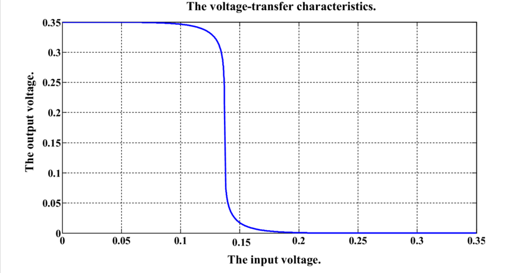
Passive Filters
Op amps are active filters because they require power. Passive filters use passive components (Resistors, Inductors, Capacitors) to achieve a similar effect. They are constructed using a potential divider with reactive components. The diagram below shows a potential divider with two impedances, $Z_1$ and $Z_2$:
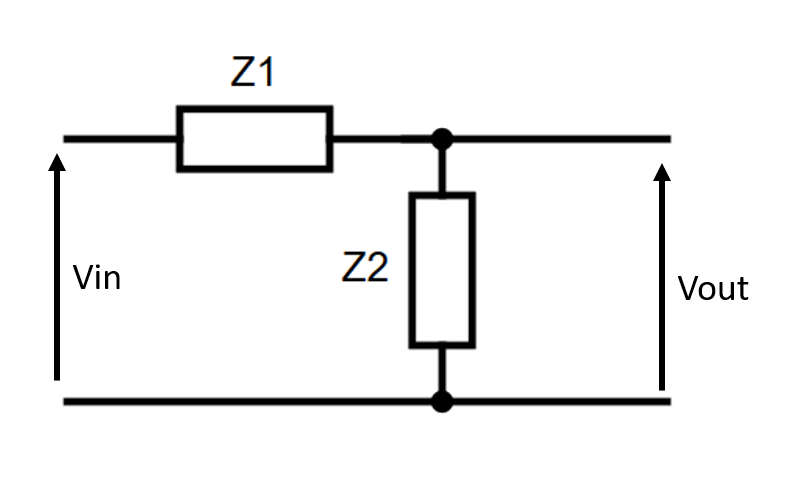
$$\frac{V_{out}}{V_{in}} = \frac{Z_2}{Z_1 + Z_2}$$
Transfer Functions
The transfer function is the ratio of input to output (see ES197 - Transfer Functions for more details.). For a passive filter, this is the ratio of output voltage to input voltage, as shown above. For a filter, this will be a function of the input waveform, $H(j \omega)$. When $Z_1$ and $Z_2$ are both identical resistors $R$:
$$H(j \omega) = \frac{R}{R + R} = \frac{1}{2}$$
However, if $Z_2$ was a capacitor $C$, $Z_2 = \frac{1}{j \omega C}$:
$$H(j \omega) = \frac{Z_2}{Z_1 + Z_2} = \frac{1}{1 + j \omega R C}$$
The gain and phase of the output are then the magnitude and argument of the transfer function, respectively: $$|H(j \omega)| = \frac{1}{\sqrt{(1 + \omega R C)^2}}$$ $$\angle H(j \omega) = \frac{\angle 0^{\circ}}{\tan^{-1}(\omega R C)} = -\tan^{-1}(\omega R C)$$
Cutoff Frequency
Similar to active filters, passive filters also have a cutoff frequency $f_c$. This is the point at which the power output of the circuit falls by $\frac{1}{2}$, or the output gain falls by -3dB, a factor of $\frac{1}{\sqrt{2}}$. Using the above example again (a low pass RC filter):
$$|H(j \omega)| = \frac{1}{\sqrt{(1 + \omega R C)^2}} = \frac{1}{\sqrt{2}}$$ $$2 = 1 + (\omega R C)^2$$ $$\omega^2 = \frac{1}{R^2C^2}$$ $$\omega = \frac{1}{RC}$$ $$f_c = \frac{1}{2\pi RC}$$
This is also the point at which $H(j\omega) = 1 + j$
The filter bandwith is the range of frequencies that get through the filter. This bandwith is 0 to $f_c$ for low pass filters, or $f_c$ and upwards for high pass.
RC High Pass
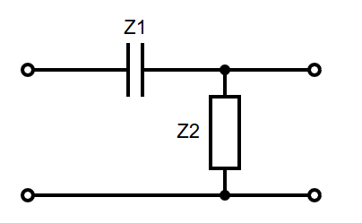
$$H(j \omega) = \frac{j \omega R C}{1 + j \omega R C}$$ $$|H(j \omega)| = \frac{\omega R C}{\sqrt{(1 + \omega R C)^2}}$$ $$\angle H(j \omega) = \frac{\angle 90^{\circ}}{\tan^{-1}(\omega R C)} = 90 -\tan^{-1}(\omega R C)$$ $$f_c = \frac{1}{2\pi RC}$$
RC Low Pass
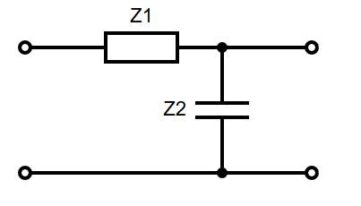
$$H(j \omega) = \frac{1}{1 + j \omega R C}$$ $$|H(j \omega)| = \frac{1}{\sqrt{(1 + \omega R C)^2}}$$ $$\angle H(j \omega) = \frac{\angle 0^{\circ}}{\tan^{-1}(\omega R C)} = -\tan^{-1}(\omega R C)$$ $$f_c = \frac{1}{2\pi RC}$$
RL High Pass

$$H(j \omega) = \frac{j \omega L }{j \omega L + R}$$ $$|H(j \omega)| = \frac{\omega L }{\sqrt{R^2 + (\omega L)^2}}$$ $$\angle H(j \omega) = 90 -\tan^{-1}(\frac{\omega L}{R})$$ $$f_c = \frac{R}{2 \pi L}$$
RL Low Pass
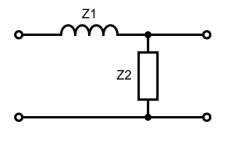
$$H(j \omega) = \frac{R}{j \omega L + R}$$ $$|H(j \omega)| = \frac{R}{\sqrt{R^2 + (\omega L)^2}}$$ $$\angle H(j \omega) = -\tan^{-1}(\frac{\omega L}{R})$$ $$f_c = \frac{R}{2 \pi L}$$
2nd Order Circuits
For circuits more complex than those above, to find the transfer function, either:
- Find a thevenin equivalent circuit, as seen from the element
- Combine multiple elements into single impedances
Note that any of the above techniques only work for simple first order circuits.
Example

Using $H(j \omega) = \frac{Z_2}{Z_1 + Z_2}$, where $Z_1 = R_1$, and $Z_2 = R_2 || jX_C$:
$$Z_2 = \frac{\frac{R_2}{j \omega C}}{R_2 + \frac{1}{j \omega C}} = \frac{R_2}{1 + j \omega R_2 C}$$ $$H(j \omega) = \frac{Z_2}{Z_2 + Z_1} = \frac{\frac{R_2}{1 + j \omega R_2 C}}{R_1 + \frac{R_2}{1 + j \omega R_2 C}} = \frac{R_2}{R_1 + j \omega R_1 R_2 C + R_2}$$ $$|H(j \omega)| = \frac{R_2}{\sqrt{(R_1 + R_2)^2 + (\omega R_1 R_2 C)^2}}$$ $$\angle H(j \omega) = - \tan^{-1} \frac{\omega R_1 R_2 C}{R_1 + R_2}$$
Equations
Below are some of the main equations that I have found useful to have on hand.
| Capacitors | |
|---|---|
| Energy Stored | $E = \frac{1}{2}CV^2 = \frac{1}{2}QV = \frac{Q^2}{2C}$ |
| Capacitor Equation | $C = \frac{Q}{V}$ |
| Capacitance equation | $C = \frac{A \epsilon_r \epsilon_0}{d}$ |
| Series Capacitors | $\frac{1}{C_T} = \frac{1}{C_1} + \frac{1}{C_2}$ |
| Parallel Capacitors | $C_T = C_1 + C_2$ |
| Current-Voltage | $C = \frac{Q}{V} = \frac{\int I , dt}{V}$ |
| Step Response | $V_c(t) = V_{in} + (V_0 - V_{in}) e^{- \frac{t}{RC}}$ |
| Electric Field Strength | $E=\frac{F}{Q} = \frac{1}{4\pi{}\epsilon{}_0}\frac{Q}{r^2} = \frac{V}{r}$ |
| Capacitor Reactance | $X_c = \frac{1}{2\pi{}fC} = \frac{1}{jwC}$ |
| Flux Density | $D = \frac{flux}{area} = \frac{charge}{area} (?)$ |
| Magnetic Field Strength of Straight Current Carrying Wire | $B=\frac{\mu{}_0I}{2\pi{}d}$ |
| Resistors | |
|---|---|
| Resistors in Series | $R_t = R_1 + R_2$ |
| Resistors in Parallel | $\frac{1}{R_t} = \frac{1}{R_1} + \frac{1}{R_2}$ |
| Voltage Divider | $V_{out} = V_{in} \times \frac{Z_1}{Z_1 + Z_2}$ |
| Current Divider | $I_{R1} = I_T \times \frac{R_2}{R_1 + R_2}$ |
| Inductors | |
|---|---|
| Inductors in Series | $L_t = L_1 + L_2$ |
| Inductors in Parallel | $\frac{1}{L_t} = \frac{1}{L_1} + \frac{1}{L_2}$ |
| Induced Voltage | $V = -N \frac{d\Phi}{dt}$ |
| Self Inductance | $V= L \frac{dI}{dt}$ |
| Energy Stored | $W = \frac{1}{2}LI^2$ |
| Step Response of RL Circuit (Current) | $I_L(t) = \frac{V_{in}}{R} + (I_0 - \frac{V_{in}}{R}) e^{-\frac{t}{\tau}}$ |
| Step Response of RL Circuit (Voltage) | $V_L(t) = (V_{in} - I_0R) e^{-\frac{t}{\tau}}$ |
| Thevenin and Norton Equivalent Circuits | |
|---|---|
| Equivalent Resistance | $R_{th} = \frac{V_{th}}{I_{sc}}$ |
| Thevenin - Norton Conversion | $I_N = \frac{V_{th}}{R_{th}}$ |
| AC Circuits | |
|---|---|
| Instantaneous Voltage | $V = V_p , \sin(\omega t + \phi)$ |
| Instantaneous Current | $I = I_p , \sin(\omega t + \phi)$ |
| AC Phasor - As complex number | $A \sin (\omega t + \phi) = A \cos \phi + jA \sin \phi = Ae^{j\phi}$ |
| Operational Amplifiers | |
|---|---|
| Output of Inverting Amplifier | $\frac{V_{out}}{V_{in}} = \frac{ - R_{in}}{R_F}$ |
| Output of Non-Inverting Amplifier | $\frac{V_{out}}{V_{in}} = 1 + \frac{ - R_{in}}{R_F}$ |
| Filters | |
|---|---|
| Cutoff Frequncy | $f_c = \frac{1}{2\pi{}R_2C}$ |
| Gain (dB) | $,20\log\frac{Vout}{Vin}$ |
Capacitors
Energy Stored
The energy stored by a capacitor of capacitance, C with a voltage, v $$E = \frac{1}{2}CV^2 = \frac{1}{2}QV = \frac{Q^2}{2C}$$
- $C$ = Capacitance, Farads, F
- $V$ = Voltage, Volts, V
- $Q$ = Charge, Coulombs, C
Capacitor Equation
The ratio of charge to voltage. $$C = \frac{Q}{V}$$
- $C$ = Capacitance, Farads, F
- $V$ = Voltage, Volts, V
- $Q$ = Charge, Coulombs, C
Capacitance equation
$$C = \frac{A \epsilon_r \epsilon_0}{d}$$
- $A$ = the area of the two plates
- $d$ = the separation of the two plates
- $\epsilon_r$ = the relative electric permittivity of the insulator
- $\epsilon_0$ = the permittivity of free space
Series Capacitors
$$\frac{1}{C_T} = \frac{1}{C_1} + \frac{1}{C_2}$$ $$C_T = \frac{1}{\frac{1}{C_1} + \frac{1}{C_2}}$$
Parallel Capacitors
$$C_T = C_1 + C_2$$
Current-Voltage
$$C = \frac{Q}{V} = \frac{\int I , dt}{V}$$
Step Response
$$V_c(t) = V_{in} + (V_0 - V_{in}) e^{- \frac{t}{RC}}$$
- $V_c(t)$ = Voltage of the capacitor at time t, Volts
- $V_{in}(t)$ = Voltage in, Volts
- $V_0$ = Starting Voltage, Volts
- $C$ = Capacitance, Farads, F Derived from: $$I_c(t) = C \frac{d}{dt} V_c(t)$$
Electric Field Strength
$$E=\frac{F}{Q} = \frac{1}{4\pi{}\epsilon{}_0}\frac{Q}{r^2} = \frac{V}{r}$$
- $F$ = Force
- $Q$ = Charge
- $\epsilon{}_0$ = Permittivity of free space = $8.85\times10^{-12} Fm^{-1}$
- $\frac{1}{4\pi{}\epsilon{}_0}$ = Constant
- $V$ = Voltage Potential, Volts
- $r$ = Separation
Capacitor Reactance
As the capacitor charges or discharges, a current flows through it which is restricted by the internal impedance of the capacitor. This internal impedance is commonly known as Capacitive Reactance $$X_c = \frac{1}{2\pi{}fC} = \frac{1}{jwC}$$
- $X_c$ = Reactance of the Capacitor, Ohmns
- $j$ = $i$ = $\sqrt{-1}$
- $w$ = frequency, rads per second
Flux Density
The amount of flux passing through a defined area that is perpendicular to the direction of the flux. $$D = \frac{flux}{area} = \frac{charge}{area} (?)$$
Magnetic Field Strength of Straight Current Carrying Wire
Amperes Law: For any closed loop path, the sum of the products of the length elements and the magnetic field in the direction of the length elements is proportional to the electric current enclosed in the loop. $$B=\frac{\mu{}_0I}{2\pi{}d}$$
- $B$ = Magnetic field strength at distance d
- $I$ = Current
- $\mu{}_0$ = Permeability of free space = $4\pi{}\times{}10^{-7} Tm/A$
- $d$ = distance from the wire.
Resistors
Resistors in Series
$$R_t = R_1 + R_2$$
Resistors in Parallel
$$\frac{1}{R_t} = \frac{1}{R_1} + \frac{1}{R_2}$$
Voltage Divider
$$V_{out} = V_{in} \times \frac{Z_1}{Z_1 + Z_2}$$
Current Divider
$$I_{R1} = I_T \times \frac{R_2}{R_1 + R_2}$$
Inductors
Inductors in Series
Inductors act in the same way as resistors in terms of their behaviour in series and parallel. $$L_t = L_1 + L_2$$
Inductors in Parallel
$$\frac{1}{L_t} = \frac{1}{L_1} + \frac{1}{L_2}$$
Induced Voltage
If a coil contains N loops, the induced voltage V is given by the following equation, where Φ is the flux of the circuit. $$V = -N \frac{d\Phi}{dt}$$
Self Inductance
A changing current causes a changing field, which then induced an EMF in any conductors in that field, When any current in a coil changes, it induced an EMF in the coil $$V= L \frac{dI}{dt}$$
Energy Stored
The energy stored by an inductor is given by: $$W = \frac{1}{2}LI^2$$
Step Response of RL Circuit (Current)
$$I_L(t) = \frac{V_{in}}{R} + (I_0 - \frac{V_{in}}{R}) e^{-\frac{t}{\tau}}$$
- $V_{in}$ - Voltage source
- $R$ - Resistance of the resistor
- $I_0$ - The initial current. (If is already charged, then will be short circuit current)
- $\tau = \frac{L}{R}$
Step Response of RL Circuit (Voltage)
Inductor voltage at time t, $$V_L(t) = (V_{in} - I_0R) e^{-\frac{t}{\tau}}$$
- $V_L(t)$ - Voltage across inductor at time t
- $V_{in}$ - Voltage source
- $R$ - Resistance of the resistor
- $I_0$ - The initial current
- $\tau = \frac{L}{R}$
Thevenin and Norton Equivalent Circuits
Thevenin circuits contain a single voltage source and resistor in series. Norton circuits contain a single current source and a resistor in parallel
Equivalent Resistance
$$R_{th} = \frac{V_{th}}{I_{sc}}$$ Any linear network viewed through 2 terminals is replaced with an equivalent single voltage & resistor.
- The equivalent voltage is equal to the open circuit voltage between the two terminals ($V_{oc}$/$V_{th}$)
- The equivalent resistance ($R_{th}$) is found by replacing all sources with their internal impedances and then calculating the impedance of the network, as seen by the two terminals.
- This can be done alternatively by calculating the short circuit current ($I_{sc}$/$I_N$) between the two terminals, and then using ohms law: $R_{th} = \frac{V_{th}}{I_{sc}}$.
- The value of the voltage source in a Thevenin circuit is $V_{th}$
- The value of the current source in a Norton circuit is $I_{N}$
- The value of the resistor in either circuit is $R_{th}$
Thevenin - Norton Conversion
Thevenin and Norton are essentially the same, but in a different form. The $R_th$ is the same for both. $$I_N = \frac{V_{th}}{R_{th}}$$
- $I_N$ - Norton Current
- $V_{th}$ - Thevevin Voltage
- $R_{th}$ - Thevenin Resistance
AC Circuits
- AC current is the dominant form of electricity,
- Current changes direction at a fixed frequency (usually 50~60Hz)
- AC voltage is generated by a rotating electromagnetic field
- The angular velocity of this rotation determines the frequency of the current
Instantaneous Voltage
An instantaneous voltage V in a sine wave is described by $$V = V_p , \sin(\omega t + \phi)$$
Where:
- $V_p$ is the peak voltage
- $\omega$ is the angular frequency (rad/s)
- $\phi$ is the phase shift (radians)
- The period of the wave is given by $T = \frac{1}{f} =\frac{ 2\pi}{\omega}$
Instantaneous Current
As current and voltage are proportional, AC current is defined in a similar way: $$I = I_p , \sin(\omega t + \phi)$$
AC Phasor - As complex number
An AC phasor can be represented as a complex number. $$A \sin (\omega t + \phi) = A \cos \phi + jA \sin \phi = Ae^{j\phi}$$
Operational Amplifiers
Output of Inverting Amplifier
The gain of the amplifier is set by the ratio of the two resistors. The negative feedback reverses the polarity of the output voltage (Hence Negative). $$\frac{V_{out}}{V_{in}} = \frac{ - R_{in}}{R_F}$$
Output of Non-Inverting Amplifier
Non-inverting amplifiers don't invert the voltage output, and use input at the non-inverting terminal of the op amp instead. $$\frac{V_{out}}{V_{in}} = 1 + \frac{ - R_{in}}{R_F}$$
Filters
Cutoff Frequncy
The cutoff frequency of a filter is the point at which the gain is equal to -3 dB, which corresponds to a fall in output by a factor of $\frac{1}{\sqrt{2}}$. For the filter shown above, this is: $$f_c = \frac{1}{2\pi{}R_2C}$$
Gain (dB)
Gain is measured in decibels $$,20\log\frac{Vout}{Vin}$$
At very low frequencies, the gain is constant (0dB) The capacitor has high reactance at low frequencies, and is open circuit at very low frequencies At very high frequencies, the gain tends towards −$\infty$ dB The capacitor has a very low reactance at high frequencies (short circuit)
ES193
Functions, Conics & Asymptotes
Domain & Range
- The domain of a function is the set of all valid/possible input values
- The x axis
- The range of a function is the set of all possible output values
- The y axis
Odd & Even Functions
$$f(x) = f(-x) \Rightarrow \text{f is even}$$ $$f(-x) = -f(x) \Rightarrow \text{f is odd}$$ $$f(x) = -f(-x) \Rightarrow \text{f is odd}$$
Conics
Equation of a circle with radius $r$ and centre $(x_0, y_0)$ $$(x-x_0)^2 + (y - y_0)^2 = r^2$$
Equation of an ellipse with centre $(x_0, y_0)$, major axis length $2a$ and minor axis length $2b$: $$\frac{(x-x_0)^2}{a^2} + \frac{(y - y_0)^2}{b^2} = 1$$
Equation of a Hyperbola with vertex $(x_0, y_0)$:
$$\pm \frac{(x-x_0)^2}{a^2} \mp \frac{(y - y_0)^2}{b^2} = 1 $$ The asymptotes of this hyperbola are at: $$(y-y_0) = \pm \frac{b}{a} (x-x_0) $$
Asymptotes
There are 3 kinds of asymptotes:
- Vertical
- Horizontal
- Oblique (have slope)
For a function $y = \frac{P(x)}{Q(x)}$:
- Vertical asymptotes lie where $Q(x) = 0$ and $P(X) \neq 0$
- Horizontal asymptotes
- If the degree of the denominator is bigger than the degree of the numerator, the horizontal asymptote is the x-axis
- If the degree of the numerator is bigger than the degree of the denominator, there is no horizontal asymptote.
- If the degrees of the numerator and denominator are the same, the horizontal asymptote equals the leading coefficient of the numerator divided by the leading coefficient of the denominator
- Oblique asymptotes
- A rational function will approach an oblique asymptote if the degree of the numerator is one order higher than the order of the denominator
- To find
- Divide $P(x)$ by $Q(x)$
- Take the limit as $x \to \infty$
Example: find the asymptotes of $y = \frac{-3x^2 +2}{x-1}$:
- Vertical asymptotes:
- Where the denominator is 0
$$x-1 = 0 \Rightarrow x = 1$$
- Horizontal asymptotes:
- There are none, as degree of the numerator is bigger than the degree of the denominator
- Oblique asymptotes:
- Divide the top by the bottom using polynomial long division
- Find the limit
$$y = \frac{-3x^2}{x-1} = -3x - 3 + \frac{-1}{x-1}$$
As $x \to \infty$, $y \to -3x -3 $, giving $y = -3x -3$ as an asymptote.

Complex Numbers
De Moivre's Theorem
$$(r(\cos \theta + i\sin \theta))^n = r^n (\cos n\theta + i\sin n\theta)$$
Complex Roots
For a complex number
$$z = (r(\cos \theta + i\sin \theta))$$
The $n^{th}$ roots can be found using the formula
$$z^{\frac{1}{n}} = r^{\frac{1}{n}} \left(\cos \frac{\theta + 2 k \pi}{n} + i\sin \frac{\theta + 2 k \pi}{n}\right), ;; k = 0,1,2,...,n-1$$
Finding Trig Identities
Trig identities can be found by equating complex numbers and using de moivre's theorem. The examples below are shown for n=2 but the process is the same for any n.
Identities for $f(n\theta)$
Using de moivre's theorem to equate $$\cos 2\theta + i\sin 2\theta = (\cos\theta + i\sin\theta)^2$$
Expanding $$(\cos\theta + i\sin\theta)^2 = \cos^2\theta + 2i\sin\theta\cos\theta - \sin^2\theta$$
Equating real and imaginary parts $$\cos 2\theta = \cos^2\theta - \sin^2\theta$$ $$\sin 2\theta = 2\sin\theta\cos\theta$$
Identities for $f^n(\theta)$
- $z = \cos\theta + i\sin\theta$
- $z^n + z^{-n} = 2\cos n\theta$
- $z^n - z^{-n} = 2i\sin n\theta$
To find the identity for $\cos^2\theta$, start with $z + z^{-1}$, and raise to the power of 2
$$z + z^{-1} = 2\cos\theta$$ $$(z + z^{-1})^2 = (2\cos\theta)^2$$ $$ z^2 + 2 + z^{-2} = 4\cos^2\theta $$
Substituting in for the pairs of $z^n + z^{-n}$
$$(z^2 + z^{-2}) + 2 = 2\cos 2\theta + 2 = 4\cos^2\theta$$ $$\cos^2\theta = \frac{1}{2} \cos 2\theta + \frac{1}{2}$$
Vectors
Vector Equation of a Straight Line
The vector $\bm{r}$ is the vector of any point along the line.
$$\bm{r} = \bm{a} + \lambda\bm{b}$$
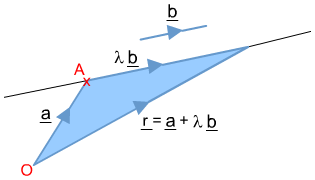
$\bm{a}$ is any point on the line, and \bm{b} is the direction of the line. $\lambda$ is a parameter that represents the position of $\bm{r}$ relative to $\bm{a}$ along the line. The carteian form of this can be derived: $$x = a_1 + \lambda b_1$$ $$y = a_2 + \lambda b_2$$ $$z = a_3 + \lambda b_3$$
Equating about lambda: $$\frac{x - a_1}{b_1} = \frac{y - a_2}{b_2} = \frac{z - a_3}{b_3}$$
Scalar/Dot Product
The dot product of two vectors: $$\bm{a} \cdot \bm{b} = |\bm{a}||\bm{b}|\cos\theta = \sum a_n b_n$$
- If $\bm{a} \cdot \bm{b} = 0$, then $\theta = 90$ and $\cos\theta = 0$
- The two vectors are perpendicular
- $\bm{a} \cdot \bm{a} = |\bm{a}|^2$
The angle between two vectors can be calculated using the dot product $$\cos\theta = \frac{\bm{a}\cdot\bm{b}}{ |\bm{b}| |\bm{a}| }$$
Projections
The projection of vector $\bm{a}$ in the direction of $\bm{b}$ is given by the scalar product:
$$\frac{\bm{b}}{ |\bm{b}| } \cdot \bm{a} = \hat{\bm{b}} \cdot \bm{a}$$
This gives a vector in the direction of $\bm{b}$ with the magnitude of $\bm{a}$.
Equation of a Plane
The vector equation of a plane is given by $$\bm{r} \cdot \bm{n} = \bm{a} \cdot \bm{n}$$
Where $\bm{n}$ is the normal to the plane, and $\bm{a}$ is any point in the plane. This expands to the cartesian form:
$$n_1 x+ n_2 y + n_3 z = \bm{a} \cdot \bm{n}$$
Angle Between Planes
The angle between two planes is given by the angle between their normals. $$\cos\theta = \frac{\bm{n_1}\cdot\bm{n_2}}{ |\bm{n_1}| |\bm{n_2}| }$$
Intersection of 2 Planes
Two planes will only intersect if their normal vectors intersect.
- First, check the two normals are non parallel
- $\bm{n_1}\cdot\bm{n_2} \neq 0$
- Equate all 3 variables about either a parameter $\lambda$ or one of $x$, $y$, or $z$ to get an equation for the line along which the planes intersect in cartesian form
Example
Find the intersection of the planes $3x + y - 4z = 4$ (1) and $-x + y = 2$ (2).
(1) - (2): $$4x - 6z = 2 \Rightarrow z = \frac{2x-1}{3}$$
(1) + 3(2): $$4y + 2z = 10 \Rightarrow z = \frac{2y-5}{-1}$$
Equating the two with z:
$$\frac{2x-1}{3} = \frac{2y-5}{-1} = z$$
Using Cross Product
For two normals to planes $\bm{n_1}$ and $\bm{n_2}$, the vector $\bm{b} = \bm{n_1} \times \bm{n_2}$ will lie in both planes. The line
$$\bm{r} = \bm{a} + \lambda (\bm{n_1} \times \bm{n_2}) $$
lies in both planes.
Distance from Point to Plane
The shortest distance from the point $(x_0,,y_0,,z_0)$ to the plane $Ax + By + Cz + D = 0$ is given by:
$$\frac{ |Ax_0 + By_0 + Cz_0 + D | }{\sqrt{A^2 + B^2 + C^2}}$$
Vector/Cross Product
The cross product of two vectors produces another vector, and is defined as follows
$$ \bm{a} \times \bm {b} = |\bm{a}||\bm{b}|\sin\theta,\hat{\bm{n}} = \begin{vmatrix} \bm i & \bm j & \bm k \ a_x & a_y & a_z \ b_x & b_y & b_z \ \end{vmatrix} $$
$\theta$ is the angle between the two vectors, and $\hat{\bm{n}}$ is a unit vector perpendicular to both $\bm{a}$ and $\bm{b}$. The right-hand rule convention dictates that $\hat{\bm{n}}$ should always point up (ie, if $\bm{a}$ and $\bm{b}$ are your fingers, then $\hat{\bm{n}}$ is your thumb). The cross product is not commutative, as $\bm{a} \times \bm{b}$ = $-(\bm{b} \times \bm{a})$.
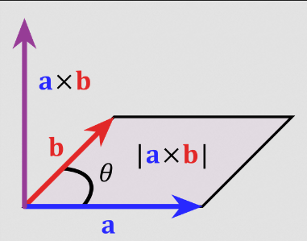
- The magnitude of the cross product $|\bm{a} \times \bm{b}|$ is equal to the area of the parallelogram formed by the two vectors.
- Can be used to find a normal given 2 vectors/2 points in a plane
Angular Velocity
A spheroid rotates with angular velocity $\bm{\omega}$. A point $\bm{A}$ on the spheroid has velocity $\bm{v}= \bm{\omega} \times \bm{A}$
Matrices
Determinant & Inverse of a 2x2 Matrix
The determinant of a 2x2 matrix:
$$ \begin{vmatrix} a & b \ c & d \end{vmatrix} = ad - bc $$
The inverse:
$$ \begin{pmatrix} a & b \ c & d \end{pmatrix}^{-1} = \frac{1}{ad - bc} \begin{pmatrix} d & -b \ -c & a \end{pmatrix} $$
The inverse of a matrix $M$ only exists where $\det ,M \neq 0$
Minors & Cofactors
- There is a matrix minor corresponding to each element of a matrix
- The minor is calculated by
- ignoring the values on the current row and column
- calculate the determinant of the remaining 2x2 matrix
Example:
$$ M = \begin{pmatrix} 3 & 0 & 2\ 2 & 0 & -2 \ 0 & 1 & 1 \end{pmatrix} $$
The minor of the top left corner is:
$$ \begin{vmatrix} 0 & -2 \ 1 & 1 \end{vmatrix} = 2 $$
The cofactor is the minor multiplied by it's correct sign. The signs form a checkerboard pattern:
$$ \begin{vmatrix}
- & - & +\
- & + & - \
- & - & + \end{vmatrix} $$
The matrix of cofactors is denoted $C$.
Determinant of a 3x3 Matrix
The determinant of a 3x3 matrix is calculated by multiplying each element in one row/column by it's cofactor, then summing them. For the matrix:
$$ M = \begin{pmatrix} a & b & c\ d & e & f \ h & h & i \end{pmatrix} $$
$$ \det M = a \cdot \begin{vmatrix} e & f \ h & i \end{vmatrix}
- b \cdot \begin{vmatrix} d & f \ g & i \end{vmatrix}
- c \cdot \begin{vmatrix} d & e \ g & h \end{vmatrix} $$
This shows the expansion of the top row, but any column or row will produce the same result.
Inverse of a 3x3 Matrix
- Calculate matrix of minors
- Calculate matrix of cofactors $C$
- Transpose $C^T$
- Multiply by 1 over determinant
$$M^{-1} = \frac{1}{\det M} C^T$$
Example
$$ M = \begin{pmatrix} 3 & 0 & 2\ 2 & 0 & -2 \ 0 & 1 & 1 \end{pmatrix} $$
$$ M_{11} = + \begin{vmatrix} 0 & -2 \ 1 & 1 \end{vmatrix} = 2 \qquad M_{12} = - \begin{vmatrix} 2 & -2 \ 0 & 1 \end{vmatrix} = -2 \qquad M_{13} = + \begin{vmatrix} 2 & 0 \ 0 & 1 \end{vmatrix} = 2 \qquad $$
$$ M_{21} = - \begin{vmatrix} 0 & 2 \ 1 & 1 \end{vmatrix} = 2 \qquad M_{22} = + \begin{vmatrix} 3 & 2 \ 0 & 1 \end{vmatrix} = 3 \qquad M_{23} = - \begin{vmatrix} 3 & 0 \ 0 & 1 \end{vmatrix} = -3 \qquad $$
$$ M_{31} = + \begin{vmatrix} 0 & 2 \ 0 & -2 \end{vmatrix} = 0 \qquad M_{32} = - \begin{vmatrix} 3 & 2 \ 2 & -2 \end{vmatrix} = 10 \qquad M_{33} = + \begin{vmatrix} 3 & 0 \ 2 & 0 \end{vmatrix} = 0 \qquad $$
The transposed matrix of cofactors $C^T$ is therefore:
$$ C^T = \begin{pmatrix} 2 & 2 & 0\ -2 & 3 & 10 \ 2 & -3 & 0 \end{pmatrix} $$
Explanding by the bottom row to calculate the determinant (it has 2 zeros so easy calculation): $$\det M = 0 \times 0 + 1 \times 10 + 0 \times 0 = 10$$
Calculating inverse:
$$ M^{-1} = \frac{1}{\det M} C^T = \frac{1}{10} \begin{pmatrix} 2 & 2 & 0\ -2 & 3 & 10 \ 2 & -3 & 0 \end{pmatrix}
\begin{pmatrix} 0.2 & 0.2 & 0\ -0.2 & 0.3 & 1 \ 0.2 & -0.3 & 0 \end{pmatrix} $$
Simultaneous Linear Equations
Several methods for solving systems of simultaneous linear equations. All the examples shown are for 3 variables, but can easily be expanded 2 $n$ variables.
Cramer's Rule
For a system of 3 equations:
- Calculate the determinant $\Delta$ of the matrix of coefficients
- Calculate determinants $\Delta_1, \Delta_2,...,\Delta_n$ by replacing 1 column of the matrix with the solutions
- Use determinants to calculate unknowns
$$ \begin{aligned} a_1 x + b_1 y + c_1 z = d_1\ a_2 x + b_2 y + c_2 z = d_2\ a_3 x + b_3 y + c_3 z = d_3 \end{aligned} $$
$$ \begin{pmatrix} a_1 & b_1 & c_1 \ a_2 & b_2 & c_2 \ a_3 & b_3 & c_3 \end{pmatrix} \cdot \begin{pmatrix} x \ y \ z \end{pmatrix}
\begin{pmatrix} d_1 \ d_2 \ d_3 \end{pmatrix} $$
$$ \Delta = \begin{vmatrix} a_1 & b_1 & c_1 \ a_2 & b_2 & c_2 \ a_3 & b_3 & c_3 \end{vmatrix} \qquad \Delta_1 = \begin{vmatrix} d_1 & b_1 & c_1 \ d_2 & b_2 & c_2 \ d_3 & b_3 & c_3 \end{vmatrix} $$
$$ \Delta_2 = \begin{vmatrix} a_1 & d_1 & c_1 \ a_2 & d_2 & c_2 \ a_3 & d_3 & c_3 \end{vmatrix} \qquad \Delta_3 = \begin{vmatrix} a_1 & b_1 & d_1 \ a_2 & b_2 & d_2 \ a_3 & b_3 & d_3 \end{vmatrix} $$
$$ x = \frac{\Delta_1}{\Delta} \quad y = \frac{\Delta_2}{\Delta} \quad z= \frac{\Delta_3}{\Delta} $$
Matrix Inversion
For a system of equations in matrix form $$Mx = a$$ The solutions $x$ is given by
$$x = M^{-1}a$$
The system has no solutions if $\det M = 0$
Gaussian Elimination
Eliminating variables from equations one at a time to give a solution. Generally speaking, for a system of 3 equations
$$ \begin{aligned} a_1 x + b_1 y + c_1 z = d_1 \quad (1)\ a_2 x + b_2 y + c_2 z = d_2 \quad (2)\ a_3 x + b_3 y + c_3 z = d_3 \quad (3) \end{aligned} $$
First, eliminate x from $(2)$ and $(3)$ $$a_1(2) - a_2(1) = (2)(new)$$ $$a_1(3) - a_3(1) = (3)(new)$$
This gives
$$ \begin{aligned} a_1 x + b_1 y + c_1 z = d_1 \quad (1)\ \tilde{b_2} y + \tilde{c_2} z = \tilde{d_2} \quad (2)\ \tilde{b_3} y + \tilde{c_3} z = \tilde{d_3} \quad (3) \end{aligned} $$
Then, eliminate y from $(3)$ $$b_2(3) - b_3(2) = (3)(new)$$
Giving
$$ \begin{aligned} a_1 x + b_1 y + c_1 z = d_1 \quad (1)\ \tilde{b_2} y + \tilde{c_2} z = \tilde{d_2} \quad (2)\ \tilde{\tilde{c_3}} z = \tilde{\tilde{d_3}} \quad (3) \end{aligned} $$
This gives a solution for $z$, which can then be back-substituted to find the solutions for $x$ and $y$.
$$z = \frac{\tilde{\tilde{d_3}}}{\tilde{\tilde{c_3}}}$$ $$y = \frac{\tilde{d_2}}{\tilde{b_2}} - \frac{\tilde{c_2}}{\tilde{b_2}}z$$ $$x = \frac{d_1}{a_1} - \frac{b_1}{a_1}y - frac{c_1}{a_1}z$$
The advantages of this method are:
- No need for matrices (yay)
- Works for homogenous and inhomogeneous systems
- The matrix need not be square
- Works for any size of system if a solution exists
Sometimes, the solution can end up being in a parametric form, for example:
$$ \begin{aligned} 4 x + y + z = 9 & \quad (1)\ x + y + z = 6 & \quad (2)\ x + 2 y + 2 z = 11 & \quad (3) \end{aligned} $$
$$ \begin{aligned} 4 x + y + z = 9 & \quad (1)\ 3y + 3z = 15 & \quad 4(2) - 1(1)\ 7 y + 7 z = 35 & \quad 4(3) - 1(1) \end{aligned} $$
$$ \begin{aligned} 4 x + y + z = 9 & \quad (1)\ 3y + 3z = 15 & \quad 4(2) - 1(1)\ 0z = 0 & \quad 3(3) - 7(2) \end{aligned} $$
This doesn't make sense, as the final equation is satisfied for any value of $z$. Substituting a parameter $\lambda$ for $z$ gives:
$$ z\ = \lambda \quad y = 5-\lambda \quad x = 1 $$
Gauss-Seidel Iteration
Iterative methods involve starting with a guess, then making closer and closer approximations to the solution. If iterations tend towards a limit, then the system converges and the limit will be a solution. If the system diverges, there is no solution for this iteration. For the gauss-seidel scheme:
$$ \begin{aligned} a_1 x + b_1 y + c_1 z = d_1 \quad (1)\ a_2 x + b_2 y + c_2 z = d_2 \quad (2)\ a_3 x + b_3 y + c_3 z = d_3 \quad (3) \end{aligned} $$
Rearrange to get iterative formulae:
$$ \begin{aligned} x^{r+1} = (d_1 - b_1 y^r - c_1 z^r) / a_1 \quad (1)\ y^{r+1} = (d_2 - a_2x^{r+1} - c_2z^r) / b_2\quad (2)\ z^{r+1} = (d_3 - a_3x^{r+1} - b_3y^{r+1}) / c_3 \quad (3) \end{aligned} $$
Using these formulae, make a guess at a starting value and then continue to iterate. For example:
$$ \begin{aligned} 4 x + 1 y + 1 z = 9 \quad (1)\ 1 x + 5 y + 1 z = 14 \quad (2)\ 1 x + 1 y + 3 z = 12 \quad (3) \end{aligned} $$
Rearranging:
$$ \begin{aligned} x^{r+1} = (9 - y^r - z^r) / 4 \quad (1)\ y^{r+1} = (14 - x^{r+1} - z^r) / 5\quad (2)\ z^{r+1} = (12- x^{r+1} - y^{r+1}) / 3 \quad (3) \end{aligned} $$
The solutions are $x=1$, $y=2$, $z=3$, as can be seen from the table below containing the iterations:
| r | x | y | z |
|---|---|---|---|
| 0 | 0 | 0 | 0 |
| 1 | 2.25 | 2.35 | 2.467 |
| 2 | 1.046 | 2.098 | 2.952 |
| 3 | 0.988 | 2.012 | 3.000 |
| 4 | 0.997 | 2.001 | 3.001 |
Note that this will only work if the system is diagonally dominant. For a system to be diagonally dominant, the divisor of the iterative equation must be greater than the sum of the other coefficients.
$$ \begin{aligned} \bm{4} x + 1 y + 1 z = 9 \ 1 x + \bm{5} y + 1 z = 14 \ 1 x + 1 y + \bm{3} z = 12 \end{aligned} $$
Systems can be rearranged to have this property:
$$ \begin{aligned} \bm{2} x + 7 y + 1 z = 5 \ -1 x + \bm{3} y + 3 z = 2 \ -6 x + 2 y + \bm{2} z = -3 \end{aligned} $$
Rearranges to:
$$ \begin{aligned} \bm{-6} x + 2 y + 1 z = -3 \ 2 x + \bm{7} y + 1 z = 5 \ -1 x + 3 y + \bm{8} z = 2 \end{aligned} $$
Differentiation
Implicit Differentiation
When differentiating a function of one variable with respect to another (ie $\frac{dy}{dx} f(y)$), simply differentiate with respect to $y$, then multiply by $\frac{dy}{dx}$.
For example, find $\frac{dy}{dx}$ where $x^2y^3 - x^2 + 3y - 3 = 0$. First, using the product rule to differentiate the first term: $$u = x^2 \quad u' = 2x$$ $$v = y^3 \quad v' = 3y^2 \frac{dy}{dx}$$
The equation with all terms differentiated: $$2xy^3 + 3x^2y^2 \frac{dy}{dx} -2x + 3y \frac{dy}{dx} = 0$$
Rearranging to get in terms of $\frac{dy}{dx}$: $$3x^2y^2 \frac{dy}{dx}+ 3y \frac{dy}{dx} = 2x - 2xy^3$$ $$\frac{dy}{dx} = \frac{2x - 2xy^3}{3x^2y^2 + 3}$$
Inverse Trig Functions
All the derivatives of the inverse trig functions are given in the data book. They can be derived as follows ($\sin$ is used as an example).
$$y = \sin^{-1} x$$ $$\sin y = x$$
Differentiating both sides with respect to x
$$\frac{dy}{dx}\cos y = 1$$ $$\frac{dy}{dx} = \frac{1}{\cos y}$$
Using pythagorean identity $\cos y = \sqrt{1 - \sin^2 y}$
$$\frac{dy}{dx} = \frac{1}{\sqrt{1 - \sin^2 y}} = \frac{1}{\sqrt{1 - x^2}}$$
Differentials
Differentials describe small changes to values/functions $$y= f(x)$$ $$\frac{dy}{dx} = f'(x)$$ $$dy = f'(x) dx$$
Recall that $\frac{dy}{dx} \approx \frac{\delta y}{\delta x}$. This means this can be rewritten: $$\delta y \approx f'(x) \delta x$$
Dividing both sides by $y = f(x)$: $$\frac{\delta y}{y} = \frac{x f'(x)}{f(x)} \frac{\delta x}{x}$$
$\frac{\delta y}{y}$ represents a relative change in y, and $\frac{\delta x}{x}$ represents a relative change in x. This can be used to give approximations of how one quantity changes based upon another.
For example, given the mass of a sphere $M = \frac{4}{3} \rho \pi r^3$, where $\rho$ is the material density, estimate the change in mass when the radius is increased by 2%. $$M = \frac{4}{3} \rho \pi r^3$$ $$\frac{dM}{dr} = 4 \rho \pi r^2$$ $$\delta m = 4 \rho\pi r^2 \delta r$$
Dividing both sides by the original formula: $$\frac{\delta M}{M} = \frac{4 \rho\pi r^2 \delta r}{\frac{4}{3} \rho \pi r^3} = 3 \frac{\delta r}{r}$$
$\frac{\delta r}{r}$ represents a relative change in radius, so when $r$ increases by 2%, $\frac{\delta r}{r} = 0.02$ $$\frac{\delta M}{M} = 3 \times 0.02 = 0.06$$
Meaning the mass increases by 6%.
Hyperbolic Functions
Hyperbolic functions have similar identities to circular trig functions. They're the same, except anywhere there is a product of two $\sinh$s, the term should be negated. Hyperbolic functions can also be defined in terms of exponential functions, making them easy to differentiate.
$$y = \cosh x = \frac{1}{2} (e^x + e^{-x})$$ $$\frac{dy}{dx} = \frac{1}{2} (e^x - e^{-x}) = \sinh x$$
All the derivatives of hyperbolic functions are given in the formula book.
Parametric Differentiation
For a function given in parametric form $y = f(t)$, $x = f(t)$: $$\frac{dy}{dx} = \frac{dy}{dt} \times \frac{dt}{dx}$$ $$\frac{d}{dx} = \frac{dt}{dx} \times \frac{d}{dt}$$
$$\frac{d^2y}{dx^2} = \frac{d}{dx}(\frac{dy}{dx}) = \frac{dt}{dx} \times \frac{d}{dt}(\frac{dy}{dx})$$
Partial Differentiation
For a function of two variables $z = f(x,y)$ there are two gradients at the point $z$, one in $x$ and one in $y$. To find the gradient in the x direction, differentiate $f(x,y)$ treating y as a constant. To find the gradient in the y direction, differentiate $f(x,y)$ treating x as a constant. These are the two partial derivatives of the function, $\frac{\partial z}{\partial x}$ and $\frac{\partial z}{\partial y}$.
For example, for a function $z= 4x^3 + 5y^7 x$: $$\frac{\partial z}{\partial x} = 12x^2 + 5y^7 $$ $$\frac{\partial z}{\partial y} = 35y^6 x$$
Implicit Partial Differentiation
When a function of several variables is given and a partial derivative is required, differentiate the numerator of the partial derivative implicitly with respect to the denominator, and treat the third variable as constant. For example, find $\frac{\partial z}{\partial y}$ given $z^2 = x^2 + y^2$:
$$\frac{\partial}{\partial y} z^2 = \frac{\partial}{\partial y}(x^2 + y^2)$$
$$2z \frac{\partial z}{\partial y} = 2y$$ $$\frac{\partial z}{\partial y} = \frac y z$$
Another example, find $\frac{\partial z}{\partial x}$ given $z\cos z=x^2 y^3+z$ $$\frac{\partial}{\partial x}(z \cos z) = \frac{\partial}{\partial x} (x^2 y^3 + z)$$ $$\frac{\partial z}{\partial x} \cos z - z \sin z \frac{\partial z}{\partial x} = 2x y^3 + \frac{\partial z}{\partial x}$$ $$\frac{\partial z}{\partial x}(\cos z - z \sin z -1) = 2xy^3$$ $$\frac{\partial z}{\partial x} = \frac{2xy^3}{\cos z - z \sin z -1}$$
Higher Order Partial Derivatives
Three 2nd order derivatives for functions of 2 variables. For $z = f(x,y)$: $$\frac{\partial^2 z}{\partial x^2} = \frac{\partial}{\partial x}(\frac{\partial z}{\partial x} ) $$ $$\frac{\partial^2 z}{\partial y^2} = \frac{\partial}{\partial y}(\frac{\partial z}{\partial y} ) $$ $$\frac{\partial^2 z}{\partial x \partial y} = \frac{\partial}{\partial x}(\frac{\partial z}{\partial y}) = \frac{\partial}{\partial y}(\frac{\partial z}{\partial x}) = \frac{\partial^2 z}{\partial y \partial x} $$
Note how for the last one, the order is interchangable as it yields the same result.
Chain Rule
The chain rule for a function $w(x,y)$, where x and y are functions of a parameter $t$: $$\frac{dw}{dt} = \frac{\partial w}{\partial x}\frac{dx}{dt} + \frac{\partial w}{\partial y} \frac{dy}{dt}$$
Total Differential
The total differential represents the total height gain or lost when moving along the function described by $z = f(x,y)$ $$dz = \frac{\partial f}{\partial x}dx + \frac{\partial f}{\partial y}dy$$
Contour Plots
Along a line of a contour plot, the total differential is zero: the height doesn't change. This allows $\frac{dy}{dx}$ to be found $$dh = \frac{\partial h}{\partial x}dx + \frac{\partial h}{\partial y}dy = 0$$ $$\frac{dy}{dx} = \frac{\partial h / \partial x}{\partial h / \partial y}$$
Integration
Integration by Parts
When an integral is a product of two functions (ie $\int e^x \sin x$), it can be integrated by parts:
$$\int u \frac{dv}{dx} ,dx = uv - \int v \frac{du}{dx} ,dx$$
(see also the DI method)
Improper Integrals
An integral is improper if either
- One of its limits is infinity
- The function is not defined for any point within the interval (bounds inclusive)
To evaluate these integrals, replace the dodgy boundwith a variable $t$, evaluate the integral in terms of the variable, and then take the limit as the variable tends towards the bound.
$$\int_a^{\infty} f(x) , dx = \lim_{t \to \infty} \int_a^t f(x) , dx$$
Where functions are not continuous over the interval, may need to split the function into two integrals. For example, if $f(x)$ is not continuous at $x = c$ where $a < c <b$, then: $$\int_a^b f(x) ,dx = \int_a^c f(x) ,dx + \int_c^b f(x) ,dx $$
Reduction Formulae
Reduction formulae involve rewriting an integral in terms of itself to get a recurrence relation. They usually involve some variable $n$ as well as other variables in the integral ($x$). For example, integrating $I_n = \int_0^{\infty} x^n e^{-x} dx$:
By parts:
$$u = x^n \qquad \frac{dv}{dx} = e^{-x} $$ $$\frac{du}{dx} = n x^{n-1} \qquad v = -e^{-x}$$
$$\int u \frac{dv}{dx} ,dx = uv - \int v \frac{du}{dx} ,dx$$ $$\int_0^{\infty} x^n e^{-x} dx = -x^n e^{-x} - \int_0^{\infty} e^{-x} x^{n-1}$$ $$I_n = n \cdot I_{n-1}$$
Note how the integral is now in terms of itself, but with $n-1$. This creates a recursive definition that can be expanded to evaluate $I_5$
$$I_5 = 5I_4 = 5\times 4I_3 = 5 \times 4 \times 3 I_3 = 5 \times 4 \times 3 \times 2 \times 1 \times I_0 = 120 I_0$$ $$I_0 = \int_0^{\infty} x^0 e^{-x} dx = \int_0^{\infty} e^{-x} dx = \left( -e^{-\infty} + e^0 \right) = 1$$ $$I_5 = 5! = 120$$
Integration by Substitution
Substitution is often useful in solving integrals.
- Choose a new function $u(x)$
- Find $\frac{du}{dx}$
- Substitute $u$ in
- Swap $dx$ for $du$
- Put limits in terms of $u$ (if appropriate)
- Solve with respect to u
Choosing a function $u$ to substitute depends on the integral, and there are certain patterns to spot which make it easier.
Example
$$\int^1_0 \frac{y^2}{1 + y^6} , dy$$
Substituting $u = y^3$: $$u = y^3 \qquad \frac{du}{3} = y^2 dy$$
$$\int^{y=1}_{y=0} \frac{du}{1+u^2}$$ Substituting the limits: $$u = 1^3 = 1 \qquad u = 0^3 = 0$$ The integral becomes: $$\frac 1 3 \int^1_0 \frac{du}{1+u^2} = \frac 1 3 \left[\arctan u \right]^1_0 = \frac 1 3 [\arctan 1 - \arctan 0] = \frac {\pi}{12}$$
$\tan$ Substitutions
There are two standard $\tan$ substitutions that can be really useful when integrating trig functions.
$t = \tan \frac x 2$ Subs
The first one: $$t = \tan \frac x 2 \qquad dx = \frac{2dt}{1+t^2}$$ $$\cos x = \frac{1-t^2}{1+t^2} \quad \sin x = \frac{2t}{1+t^2} \quad \tan x = \frac{2t}{1-t^2}$$
For example:
$$\int \cosec x , dx = \int \frac{1}{\sin x} , dx$$
Letting $t = \tan \frac x 2$: $$dx = \frac{2dt}{1+t^2} \quad \sin x = \frac{2t}{1+t^2}$$ $$\int \frac{1+t^2}{2t} \cdot \frac{2dt}{1+t^2} = \int \frac{dt}{t} = \ln|t| + c$$
$T = \tan x $ Subs
$$T = \tan x \qquad dx = \frac{dT}{1+T^2}$$ $$\sin x = \frac{T}{\sqrt{1+T^2}} \qquad \cos x = \frac{1}{\sqrt{1+T^2}}$$
For example: $$\int \frac{dx}{4\cos^2 x - \sin^2 x}$$
Letting $T = \tan x$: $$\sin^2 x = \frac{T^2}{1+T^2} \quad \cos^2 x \frac{1}{1+T^2} \quad dx = \frac{dT}{1+T^2}$$
$$\int \frac{dx}{4\cos^2 x - \sin^2 x} = \int \frac{\frac{dT}{1+T^2}}{\frac{4}{1+T^2} - \frac{T^2}{1+T^2}} = \int \frac{\frac{dT}{1+T^2}}{\frac{4 - T^2}{1+T^2}} = \int \frac{dT}{4 - T^2}$$ $$= \frac 1 2 \tanh^{-1} \frac T 2 + C = \frac 1 2 \tanh^{-1} \frac{\tan x}{2} + C = \frac 1 4 \ln \left| \frac{2+\tan x}{2-\tan x} \right| + C$$
Standard Forms
Integrals will sometimes be (or can be put into) standard forms which then evaluate directly to inverse trig functions. The full list is given in the data book but:
$$\int \frac{du}{\sqrt{a^2 - u^2}} = \arcsin \frac u a + c$$ $$\int \frac{du}{a^2 + u^2} = \frac 1 a \arctan \frac u a + c$$
Example
$$ \int^5_2 \frac{dx}{\sqrt{x^2 + 2x - 8}} = \int^5_2 \frac{dx}{\sqrt{(x+1)^2 - 9}}$$
Substituting $u = x+1$
$$ \int^6_3 \frac{du}{\sqrt{u^2 - 9}} = \left[\cosh^{-1} \frac u 3 \right]^6_3 = \left[ \cosh^{-1} 2 - \cosh^{-1} 1\right] = \cosh^{-1} 2$$
Trigonometric Identities
Trig identities are often useful in evaluating integrals, for example:
$$\int \sin 4x \cos 3x , dx$$
Using $2 \sin A \cos B = (\sin (A+B) + sin (A-B))$:
$$\int \sin 4x \cos 3x , dx = \frac 1 2 \int \sin 7x + \sin x, dx = \frac 1 2 (- \frac 1 7 \cos 7x - \cos x) + c$$
$$\int \sin 4x \cos 3x , dx = - \frac 1 14 \cos 7x - \frac 1 2 cos x + c$$
Integration as a Limit
The area under a curve $f(x)$ from $a \leq x \leq b$ is given by: $$\int_a^b f(x) , dx$$ This can be approximated by dividing the area under the curve into a number of rectangles:

For $n$ rectangles over the width $b-a$, the width of each rectangle $\delta x = \frac{b-a}{n}$. The area of the rectangle is therefore given by $y(x_k)\cdot \delta x$. The sum of all the rectangles, and therefore total area is: $$\sum^n_{k=1} y(x_k) \delta x$$
As $n \to \infty$, $\delta x \to 0$, so: $$\int^b_a y(x) , dx = \lim_{\delta x \to 0} ,\sum^{x=b}_{x=a} y(x) \delta x$$
Volumes of Revolution
For a function $y(x)$ rotated 360 degrees about the x axis, consider a disc of width $\delta x$ and radius y. The volume is given by $\pi y^2 \delta x$. The volume of all slices as $n \to \infty$ is $$\sum^{x=b}_{x=a} \pi y^2 \delta x$$
Therefore the volume of revolution for a function $y(x)$ about the x axis is $$V = \pi \int^b_a y^2 , dx$$
Volume of revolution about y axis:
$$V = \pi \int^b_a x^2 , dy$$
Centres of Mass for Planar Objects
The centre of mass is the point through which gravity acts. In 1 dimension:

The sum of the moments about 0 is $m_1 x_1 + m_2 x_2$. The moment of the total mass is $\bar x (m_1 + m_2)$. Equating these: $$\bar x = \frac{m_1 x_1 + m_2 x_2}{m_1 + m_2} = \frac{\sum m_i x_i}{\sum m_i}= \frac{\text{sum of moments}}{\text{total mass}}$$
This can be expanded into 2 dimensions: $$\bar x = \frac{\sum m_i x_i}{\sum m_i} \qquad \bar y = \frac{\sum m_i y_i}{\sum m_i}$$
For the centre of mass of an infinitely thin sheet with uniformly distributed mass, for x-axis consider thin slices of width $\delta x$.
- Area of slice = $y \cdot \delta x$
- Mass of slice = $m \cdot y\cdot \delta x$
- Moment of slice about y-axis = $x\cdot m\cdot y\cdot \delta x$
- Sum of all moments as $\delta x \to 0$ = $\int_0^a (m \cdot x \cdot y) , dx$
$$\bar x = \frac {\int_0^a (m x y) , dx}{m}$$
For the sum of the moments about y axis, take a horizontal slice with width $\delta y$ with length $(a-x)$
- Area of slice = $(a-x) \cdot \delta y$
- Mass of slice = $m \cdot (a-x) \cdot \delta y$
- Moments of slice about x-axis = $y \cdot m \cdot (a-x) \cdot \delta y$
- Sum of all moments as $y \to 0$ = $\int_0^{a} (y m (a-x)) , dy$
$$\bar y = \frac{\int_0^{a} my(a-x), dy}{m}$$
Note that usually, mass $m$ is mass per unit area.
Example
Find centre of mass of plane lamina shown

By symmetry, clearly $\bar x = 0$. For $\bar y$, let $m$ be the mass per unit area, and consider a horizontal strip of width $y$.
- Area of strip is $2x \delta y$
- Mass of strip is $2mx \delta y$
- Moment of one strip about x axis is $2mxy \delta y$
Total moment as $\delta y \to 0$:
$$\int_0^{4a^2} 2 m x y , dy = 2m \int_0^{4a^2} y \sqrt{4a^2 - y} , dy = \frac{256ma^5}{15}$$
For the total mass $M$, total area of the shape: $$\int^{2a}{2a} y , dy = \int^{2a}{2a} (4a^2 -x^2) , dy = \frac{32a^3}{3}$$
So total mass M = $m \times M = \frac{32ma^3}{3}$
$$\bar y = \frac{Mx}{M} = \frac{256ma^5}{15} \div \frac{32ma^3}{3} = \frac{8a^2}{5}$$
Moments of Inertia for Laminae
The moment of inertia $I$ is a measure of how difficult it is to rotate an object. Suppose a lamina is divided into a large number of small elments, each with mass $\delta m$ at distance $r$ from the origin $O$. The moment of inertia of one element is defined to be $r^2 \delta m$. Taking the sum of all moments as $\delta m \to 0$
$$I = \int r^2 , dm$$
The bounds of the integral should be chosen appropriately such as to include the entire lamina.
- For a lamina lying in the x-y plane, the moment of inertia about z-axis is the sum of the moments about x and y axes.
- $I_{oz} = I_{ox} + I_{oy}$
- For an axis $L'$ parallel to $L$ at a distance $d$ and both lying in the same plane as the lamina with mass $M$, where $L$ passes through the centere of the lamina:
- $I_{L'} = I_L + Md^2$
Example
Find the moment of inertia of a thin rectangular plate of mass $M$, length $2a$ and width $2b$ about an axis through its centre of gravity which is normal to its plane.
Assuming the plate lies in the x-y axis, the question is asking for the moment about the z-axis. To find this, the moments about both x and y axes are required as $I_{oz} = I_{ox} + I_{oy}$. To find $I_{oy}$:

- Let the mass per unit area $m = \frac{M}{4ab}$
- A strip of width $\delta x$ at distance $x$ from $Oy$ has mass $m\cdot 2b \cdot \delta x$
- The moment of inertia of the strip is $x^2 \cdot m\cdot 2b \cdot \delta x$
Taking the limit of the sum of all the strips: $$\int_{-a}^a 2bmx^2 , dx = \frac{4ba^3}{3}$$
As $m = \frac{M}{4ab}$, $$I_{oy} = \frac{4ba^3}{3}\cdot \frac{M}{4ab} = \frac{Ma^2}{3}$$
$I_{ox}$ is identically dervied and equals $\frac{Mb^2}{3}$. Summing the two moments gives:
$$I_{oz} = \frac{Ma^2}{3} + \frac{Mb^2}{3} = \frac{M}{3} (a^2 + b^2)$$
Lengths of Curves
The length of the arc of a curve $y(x)$ between $x=a$ and $x=b$ is given by $$\int_a^b \sqrt{1 + \left(\frac{dy}{dx}\right)^2} , dx$$
Alternatively, for parametrised curves: $$\int^{t=t_2}_{t=t_1} \sqrt{\left(\frac{dx}{dt}\right)^2 + \left(\frac{dy}{dt}\right)^2} , dt$$
Surface Areas of Revolution
Similar to volumes of revolution, the surface area of a function when rotated about the x axis is given by:
$$A = 2\pi \int_a^b y ,\sqrt{1 + \left(\frac{dy}{dx}\right)^2}, dx$$
Example
The surface are of the parabola $y^2 = 8x$ between $x=0$ and $x=2$, when rotated about x axis: $$y = 2 \sqrt{2x} \qquad \frac{dy}{dx} = \sqrt{\frac 2 x}$$
$$A = 2 \pi \int^2_0 2 \sqrt{2x} \sqrt{1 + \frac 2 x} , dx = 4 \sqrt 2 \pi \int^2_0 \sqrt{x+2} , dx$$ $$A = \frac{64\sqrt 2 \pi - 32 \pi }{3}$$
Mean Values of a Function
For a function $f(x)$ over the interval $[a,b]$
Mean value: $$\frac{1}{b-a} \int^b_a f(x) dx$$
Root mean square value: $$\sqrt{\frac{1}{b-a} \int^b_a \left(f(x)\right)^2 dx}$$
Differential Equations
First Order
A first order differential equation has $\frac{dy}{dx}$ as it's highest derivative. For the two methods below, it is important the equation is in the correct form specified.
Seperating Variables
For an equation of the form $$\frac{dy}{dx} = f(x) g(y)$$
The solution is $$\int \frac{dy}{g(y)} = \int f(x) dx$$
Integrating Factors
For an equation of the form $$\frac{dy}{dx} + P(x)y = Q(x)$$
An integrating factor $\mu$ can be found such that: $$\mu(x) = e^{\int P(x) dx}$$
Multiplying through by $\mu$ gives
$$\mu(x)\frac{dy}{dx} + \mu(x)P(x)y = \mu(x)Q(x)$$
Then, applying he product rule backwards gives a solution:
$$\frac{d}{dx}(\mu(x) y) = \mu(x)Q(x)$$ $$\mu(x) y = \int \mu(x) Q(x) dx$$
Second Order
A second order ODE has the form: $$a \frac{d^2 y}{dx^2} + b\frac{dy}{dx} + cy = f(x)$$
The equation is homogeneous if $f(x) = 0$.
The auxillary equation is $$ak^2 + bk +c = 0$$
This gives two roots $k_1$ and $k_2$, which determine the complementary function:
| Roots | Complementary Function |
|---|---|
| $k_1$ and $k_2$ both real | $y = Ae^{k_1 x} + Be^{k_2 x}$ |
| $k_1 = k_2$, both real | $y = (A+Bx) e^{kx}$ |
| $k_1 = \alpha + \beta i$ and $k_2 = \alpha - \beta i$ | $y = e^{\alpha x} (A\cos\beta x + B \sin\beta x)$ |
The complementary function is the solution. Sometimes, initial conditions will be given which allow the constants $A$ and $B$ to be found.
Non-Homogeneous Systems
If the system is non-homogenous, ie $f(x) \neq 0$, then a particular integral is needed too, and the solution will have form $y = c.f. + p.i.$. The particular integral is found using a trial solution, then substituting it into the equation to find the coefficients. Note that if the particular integral takes the same form as the complementary function, an extra $x$ will need to be added to the particular integral for it to work, it $ae^{kx}$ would become $axe^{kx}$
| $f(x)$ | Trial Solution |
|---|---|
| const $k$ | const $\alpha$ |
| polynomial $ax^r +...+ bx + c$ | $\alpha x^r + ... + \beta x + \gamma$ |
| $a\cos kx$ or $a\sin kx$ | $\alpha\cos kx + \beta\sin kx$ |
| $ae^{kx}$ | $\alpha e^{kx}$ |
Example
$$\frac{d^2y}{dx^2} + 4y = \sin x \qquad y(0) = 1, ; \frac{dy}{dx}(0) = 1$$
Auxillary equation: $$k^2 + 4 = 0$$ $$k = \pm 2i$$
Complementary function is therefore: $$y = A\cos 2x + B\sin 2x$$
System is non-homogeneous, so have to find a particular integral. For this equation $f(x) = \sin x$, so the p.i. is $y = a\cos x + b \sin x$. $$y = a \cos x + b\sin x$$ $$\frac{dy}{dx} = -a \sin x + b\cos x$$ $$\frac{d^2 y}{dx^2} = -a \cos x -b \sin x$$
Substituting this into the original equation: $$\frac{d^2y}{dx^2} + 4y = -a \cos x -b \sin x + 4a \cos x + 4b\sin x = \sin x$$
Comparing coefficients: $$\cos x: \quad 3a = 0 \Rightarrow a = 0$$ $$\sin x: \quad 3b = 1 \Rightarrow b = 1/3$$
The general solution is therefore: $$y = c.f. + p.i. = A\cos 2x + B\sin 2x + \frac{1}{3} \sin x$$
Using initial conditions to find constants, for $y(0) = 1$ $$1 = A\cos 0 + B\sin 0 + \frac{1}{3} \sin 0 \Rightarrow A = 1 $$
For $\frac{dy}{dx}(0) = 1$ $$\frac{dy}{dx} = -2A \sin 2x + 2B \cos 2x + \frac{1}{3} cos x$$ $$1 = -2A \sin 0 + 2B \cos 0 + \frac{1}{3} cos 0$$ $$1 = 2B + \frac{1}{3} \Rightarrow B = \frac{1}{3}$$
Particular solution for given initial conditions is therefore: $$y = \cos 2x + \frac{1}{3} \sin 2x + \frac{1}{3} sin x$$
Laplace Transforms
The laplace transform transforms a function from the time domain to the laplace domain. For a continuous function $f(t)$. with $t \geq 0 $, the laplace transform is defined as $$\mathcal{L} { f(t)}(s) = \int_0^{\infty}e^{-st}f(t) ,dt$$
The notation used is $$\mathcal{L} { f(t)} = F(s)$$ Where $F(s)$ is the function in the laplace domain. Tables of laplace transforms for common functions are given in the formula book, so there is no need to work out most transforms manually.
Transforms are linearly independent in the same way integrals are: $$\mathcal{L}{4x + 2y} = 4\mathcal{L}{x} + 2\mathcal{L}{y}$$
For example, find the laplace transform of $f(t) = \frac{1}{2}e^{-2t} + 3\sin 4t$: $$\mathcal{L} { f(t)} = \frac{1}{2}\mathcal{L} { e^{-2t}} + 3 \mathcal{L} { \sin 4t}$$ $$= \frac{1}{2} \frac{1}{s+2} + 3 \times \frac{4}{s^2 + 16} = \frac{1}{2s + 4} + \frac{12}{s^2 + 16}$$
Inverse Transforms
Transforms also have an inverse: $$f(t) = \mathcal{L}^{-1} { F(s)}$$
For example, find $f(t)$ from $F(s) = \frac{3}{s^2 + 25 + 5}$ $$f(t) = \mathcal{L}^{-1} \left{ \frac{3}{s^2 + 25 + 5}\right} = \mathcal{L}^{-1} \left{ \frac{3}{(s+1)^2 + 4}\right}$$ $$ = \frac{3}{2}\mathcal{L}^{-1} \left{ \frac{2}{(s+1)^2 + 4}\right} = \frac{3}{2} e^{-t}\sin 2t$$
Sometimes, partial fractions and/or completing the square is required to get the equation into a form recognisable from the table.
Differential Equations
Laplace transforms exist of derivatives:
$$\mathcal{L} \left{ \frac{dx}{dt} \right} = sX(s) - x(0)$$
$$\mathcal{L} \left{ \frac{d^2x}{dt^2} \right} = s^2X(s) - sx(0) - \frac{dx}{dt}(0)$$
This can be used to solved differential equations, by laplace transforming the differential equation to make an algebraic one, then inverse laplace transforming the result back.
Example
Solve:
$$\ddot y + 3 \dot y + 2y = e^t \qquad y(0) = 1 \quad \dot y(0) = 1$$ $$\mathcal{L} { \ddot y + 3 \dot y + 2y }= \mathcal{L} {e^t} $$ $$s^2 Y(s) - sy(0) - \dot y(0) + 3(sY(s) - y(0)) + 2Y(s) = \frac{1}{s-1}$$ $$s^2 Y(s) - s - 1 + 3sY(s) - 3 + 2Y(s) = \frac{1}{s-1}$$ $$(s^2 + 3s + 2)(Y(s)) - s - 4 = \frac{1}{s-1}$$ $$Y(s) = \frac{1}{(s-1)(s^2 + 3s + 2)} + \frac{s+4}{(s^2 + 3s + 2)} = \frac{s^2 + 3s - 3}{(s-1)(s+1)(s+2)}$$
Need to use partial fractions to inverse transform $$\frac{s^2 + 3s - 3}{(s-1)(s+1)(s+2)} = \frac A {s-1} + \frac B {s+1} + \frac C {s+2}$$ $$s^2 + 3s - 3 = A(s+1)(s+2) + B(s-1)(s+2) + C(s+1)(s-1)$$ $$s = 1 \Rightarrow A= \frac 1 6$$ $$s = -1 \Rightarrow B = \frac 5 2$$ $$s = -2 \Rightarrow C = \frac {-5} 3 $$
$$Y(s) = \frac 1 6 \cdot \frac 1 {(s-1)} + \frac 5 2 \cdot \frac 1 {(s+1)} - \frac 5 3 \cdot \frac 1 {(s+2)}$$
Taking inverse laplace transforms using table: $$y(t) = \frac 1 6 e^t + \frac 5 2 e^{-t} - \frac 5 3 e^{-2t}$$
Probability & Statistics
Probability
Set Theory
- A set is a collection of elements
- Elements are members of a set
- $s \in S$ means "the element $s$ is a member of the set $S$
- The empty set $\varnothing$ contains no elements
- It is empty
- $S = {1,3,5,7,9}$
- $S$ is a set consisting of those integers
- $S = {n: n ;\text{is a prime number and}; n \leq 12}$
- $S = {1,2,3,5,7,11}$
- $S = {x: x^2 = 4 ;\text{and}; x ;\text{is odd}}$
- $S = \varnothing$
- $A \subset S$
- $A$ is a subset of $S$
- $a \in A$ implies $a \in S$
- $\varnothing \in S$ for all sets $S$
- $A = B$ if and only if $A \subset B$ and $B \subset A$
- $A \cup B$ is the union of $A$ and $B$
- Set of elements belonging to $A$ or $B$
- $A \cap B$ is the intersection of $A$ and $B$
- Set of elements belonging to $A$ and $B$
- Disjoint sets have no common elements
- $A \cap B = \varnothing$
- $A \setminus B$ is the different of $A$ and $B$
- Set of elements belonging to $A$ but not $B$
- $A^c$ is the complement of $A$
- Set of elements not belonging to $A$
Random Processes & Probability
The probability of event $A$ occurring is denoted $P(A)$. This is the relative frequency of event $A \in S$ occurring in a random process within sample space S.
- $S$
- Certain or sure event, guaranteed 100% to happen
- $\varnothing$
- Impossible event, won't happen
- ${a} \in S$
- Elementary event, the only event that can happen, the only possible outcome
- $A \cup B$
- Event that occurs if $A$ or $B$ occurs
- $A \cap B$
- Event that occurs if $A$ and $B$ occur
- $A^c = S \setminus A$
- Event that occurs if $A$ does not occur
- $A \cup B = \varnothing$
- Events $A$ and $B$ are mutually exclusive
Example
Toss a coin 3 times and observe the sequence of heads and tails.
- Sample space $S ={\text{HHH, HHT, HTH, HTT, THH, THT, TTH, TTT}}$
- Event that $\geq 2$ heads occur in succession $A = {\text{HHH,HHT,THH}}$
- Event that 3 heads or 3 tails occur $B = {\text{HHH,TTT}}$
- $A \cup B = { \text{HHH,HHT,THH,TTT}}$
- $A \cap B = {\text{HHH}}$
- $A^c = {\text{HTH,HTT,THT,TTH,TTT}}$
- $A^c \cup B ={\text{TTT}}$
Another Example
Sample space $S={17,18,19,20,21,22}$. Each number is an individual event.
| Events | Frequency | Relative Frequency |
|---|---|---|
| 17 | 3 | 3/35 |
| 18 | 4 | 4/35 |
| 19 | 9 | 9/35 |
| 20 | 11 | 11/35 |
| 21 | 6 | 6/35 |
| 22 | 2 | 2/35 |
Axioms & Laws of Probability
- $0 \leq P(A) \leq 1$ for all $ A \subset S$
- Probabilities are always between 0 and 1 inclusive
- $P(S) = 1$
- Probability of the certain event is 1
- If $A \cap B = \varnothing$ then $P(A \cup B) = P(A) + P(B)$
- If two events are disjoint, then the probability of either occurring is equal to the sum of their two probabilities
- $P(\varnothing) = 0$
- The probability of the impossible event is zero
- $P(A^c) = 1 - P(A)$
- The probability of all the elements not in A occurring is the opposite of the probability of all the elements in A occurring
- If $A \subset B$, then $P(A) \leq P(B)$
- The probability of A will always be less than or equal to the probability of B when A is a subset of B
- $P(A \setminus B) = P(A) - P(A \cup B)$
- The probability of A minus B is equal to the probability of A minus the probability of A and B
- $P(A \cup B) = P(A) + P(B) - P(A \cap B)$
- Probability of A or B is equal to probability of A plus the probability of B minus the probability of A and B
- This is important
Example
In a batch of 50 ball bearings:
- 15 have surface damage ($A$)
- $P(A) = 0.3$
- 12 have dents ($B$)
- $P(B) = 0.24$
- 6 both have defects ($A \cap B$)
- $P(A \cap B) = 0.12$
The probability a single ball bearing has surface damage or dents: $$P(A \cup B) = P(A) + P(B) - P(A \cap B) = 0.3 + 0.24 - 0.12 = 0.42$$
The probability a single ball bearing has surface damage but no dents: $$P(A \cap B^c) = P(A \setminus B) = P(A) - P(A \cap B) = 0.3 - 0.12 = 0.18$$
Conditional Probability & Bayes' Theorem
A conditional probability $P(A | B)$ is the probability of event $A$ occurring, given that the event $B$ has occurred.
$$P(A|B) = \frac{P(A \cap B)}{P(B)}$$
Bayes' theorem:
$$P(A|B) = \frac{P(B|A)P(A)}{P(B)}$$
Axioms of conditional probability:
- $P(B) = P(B|A)P(A) + P(B|A^c)P(A^c)$
- $P(A \cup B | C) = P(A|C) + P(B|C) - P(A \cap B | C)$
Example
In a semiconductor manufacturing process:
- $A$ is the event that chips are contaminated
- $P(A) = 0.2$
- $F$ is the event that the product containing the chip fails
- $P(F|A) = 0.1$ and $P(F|A^c) = 0.005$
Determining the rate of failure: $P(F) = P(F|A)P(A) + P(F|A^c)P(A^c) = 0.1 \times 0.2 + 0.005 \times 0.8 = 0.024$
Independent Events
Two events are independent when the probability of one occurring does not dependend on the occurrence of the other. An event $A$ is independent if and only if $$P(A \cap B) = P(A)P(B)$$
Example
Using the coin flip example again with a sample space $S$ and 3 events $A, B, C$
- $S = {\text{HHH, HHT, HTH, HTT, THH, THT, TTH, TTT}}$
- $P(S) = 1$
- $A = {\text{HHH, HHT, HTH, HTT}}$
- $P(A) = 0.5$
- $B = {\text{HHH, HHT, THH, THT}}$
- $P(B) = 0.5$
- $C = {\text{HHT, THH}}$
- $P(C) = 0.25$
A and C are independent events:
- $A \cap C = {\text{HHT}}$
- $P(A \cap C) = 0.25 = 0.5 \times 0.25 = P(A)P(C)$
B and C are not independent events:
- $B \cap C = {\text{HHT,THH}}$
- $P(B \cap C) = 0.25 \neq 0.25 \times 0.5 = P(B)P(C)$
Discrete Random Variables
For a random process with a discrete sample space $S$, a discrete random variable $X$ is a function that assigns a real number to each outcome $s \in S$.
- $X$ is a measure related to the random distribution.
- Denoted $P(X = a)$
Consider a weighted coin where $P(H) = 0.75$ and $P(T) = 0.25$. Tossing the coin twice gives a sample space $S = {\text{TT, TH, HT, HH}}$, which makes the number of heads a random variable $X(s) = {0, 1, 2}$. Since successive coin tosses are independent events:
- $P(TT) = 0.0625$
- $P(TH) = 0.1875$
- $P(HT) = 0.1875$
- $P(HH) = 0.5625$
Events are also mutually exclusive, so:
- $f(0) = P(TT) = 0.0625$
- $f(1) = P(TH) + P(HT) = 0.375$
- $f(2) = P(HH) = 0.5625$
This gives a probability distribution function $f(x) = P(X=x)$ of:
| $x$ | $f(x)$ |
|---|---|
| $0$ | $0.0625$ |
| $1$ | $0.375$ |
| $2$ | $0.5625$ |
Cumulative Distribution Functions
The cumulative probability function gives a "running probability" $$F_X(x_i) = P(X \leq x_i) = \sum^i_{j=1}f(x_j)$$
- if $x_i \leq x_j$ then $F_X(x_i) \leq F_X(x_j)$
- $F_X(x_1) = f(x_1)$
- $F_X(x_n) = 1$
Using coin example again:
| $x$ | $F_X(x)$ |
|---|---|
| $0$ | $0.0625$ |
| $1$ | $0.4375$ |
| $2$ | $1$ |
Expectation & Variance
- Expectation is the average value, ie the value most likely to come up
- The mean of $X$
$$E(X) = \sum^n_{i=1} x_if(x_i) = \mu_X$$
- Variance is a measure of the spread of the data
$$Var(X) = \sum^n_{i=1}(x_i - \mu_x)^2 f(x_i) = E(X^2) - (E(X))^2 = \sigma^2_X$$
- Standard deviation $\sigma_X = \sqrt{Var(X)}$
Using the weighted coin example once more:
$$E(X) = 0 \times 0.0625 + 1 \times 0.375 + 2 \times 0.5625 = 1.5$$ $$E(X^2) = 0^2 \times 0.0625 + 1^2 \times 0.375 + 2^2 \times 0.5625 = 2.625 $$ $$Var(X) = E(X^2) - (E(X))^2 = 1.5 - 2.625^2 = 0.375$$
Standardised Random Variable
The standardised random variable is a normalised version of the discrete random variable, obtained by the following transformation: $$X^* = \frac{X - \mu_X}{\sigma_X}$$
- $E(X^*) = 0$
- $Var(X^*) =1$
Binomial Distribution
- The binomial distribution models random processes consisting of repeated independent events
- Each event has only 2 outcomes, success or failure
- $P(success) = p$
- $P(failure) = q = 1 - p$
The probability of $k$ successes in $n$ events:
$$b(k;n;p) = {n \choose k}p^k q^{n-k}, ;; k = 0,1,2,...,n$$
- Probability of no success $= q^n$
- Probability of $\geq 1 $ successes is $1 - q^n$
Expectation & Variance
$$\mu = np$$ $$\sigma^2 = npq$$
Example
A fair coin is tossed 6 times. $$p = q = 0.5$$
Probability of exactly 2 heads out of 6 $$b(2;6;0.5) = {6 \choose 2} \times 0.5 ^2 \times 0.5 ^4 = \frac{15}{64}$$
Probability of $\geq 1$ heads $$1 - q^6 = 1 - 0.5 ^6 = \frac{63}{64}$$
Probability of $\geq 4$ heads
$$b(4;6;0.5) + b(5;6;0.5) + b(6;6;0.5) = {6 \choose 2} (\frac{1}{2})^4 (\frac{1}{2})^2 + {6 \choose 2} (\frac{1}{2})^5 (\frac{1}{2})^1 + (\frac{1}{2})^6 = \frac{11}{32}$$
Expected value $E(X)$ $$\mu = np = 6 \times 0.5 = 3$$
Variance $$\sigma^2 = npq = 6 \times 0.5 \times 0.5 = 1.5$$
Poisson Distribution
Models a random process consisting of repeated occurrence of a single event within a fixed interval. The probability of $k$ occurrences is given by $$p(k;\lambda) = \frac{\lambda^k}{k!}e^{-\lambda}, ;; k = 0,1,2,...$$
The poisson distribution can be used to approximate the binomial distribution with $\lambda = np$. This is only valid for large $n$ and small $p$
Expectation & Variance
$$\mu = \sigma^2 = \lambda$$
Example
The occurrence of typos on a page is modelled by a poisson distribution with $\lambda = 0.5$.
The probability of 2 errors: $$p(2;0.5) = \frac{0.5^2}{2!}e^{-0.5} = 0.076$$
Continuous Random Variables
Continuous random variables map events from a sample space to an interval. Probabilities are written $P(a \leq X \leq b)$, where $X$ is the random variable. $X$ is defined with a continuous function, the probability density function.
- The function must be positive
- $f(x) \geq 0$
- The total area under the curve of the function must be 1
- $\int^{\infty}_{-\infty} f(x) dx = 1$
- $P(a \leq X \leq b) = \int^b_a f(x) dx$
Example
$$ f(x) = \begin{cases} a (x - x^2) & 0 \leq x \leq 1 \ 0 & otherwise \end{cases} $$
Require that $\int^{\infty}{-\infty} f(x) dx = 1$, so have to find $a$: $$\int^{\infty}{-\infty} f(x) dx = \int^1_0 a (x - x^2) dx = a \left[\frac{x^2}{2} - \frac{x^3}{3}\right]^1_0 = \frac{a}{6} \Rightarrow a = 6$$
Calculating some probabilities: $$P(0 \leq X \leq 0.5) = \int_0^{0.5} f(x) dx = \int_0^{0.5} 6(x - x^2) dx = 6 \left[\frac{x^2}{2} - \frac{x^3}{3}\right]0^{0.5} = 0.5$$ $$P(0.25 \leq X \leq 0.75) = \int{0.25}^{0.75} f(x) dx = \int_{0.25}^{0.75} 6(x - x^2) dx = 6 \left[\frac{x^2}{2} - \frac{x^3}{3}\right]_{0.25}^{0.75} = \frac{11}{16}$$
Cumulative Distribution Function
The cumulative distribution function $F_X$ up to the point $a$ is given as $$F_X(a) = \int_{-\infty}^a f(x) dx$$
- if $a \leq b$, then $F_X(a) \leq F_X(b)$
- $\lim_{ x \to -\infty} F_X(x) = 0$
- $\lim_{ x \to \infty} F_X(x) = 1$
- $\frac{d}{dx} F_X(x) = f(x)$
- Derivative of cumulative distribution function is the probability distribution function
Using previous example, let $F_X(x) = \int_{-\infty}^x f(t) dt$. For $x < 0$ $$F_X(x) = 0$$
For $0 \leq x \leq 1$ $$F_X(x) = \int_0^x 6(t-t^2) dt = 6 \left[\frac{t^2}{2} - \frac{t^3}{3}\right]_0^x = 3x^2 - 2x^3$$
For $x > 1$ $$F_X(x) = \int_0^1 6(t-t^2) dt = 6 \left[\frac{t^2}{2} - \frac{t^3}{3}\right]_0^1 = 1$$
Expectation & Variance
Where $X$ is a continuous random variable:
$$E(X) = \int^{\infty}{-\infty} x f(x) dx = \mu$$ $$Var(X) = \int^{\infty}{-\infty} (x - \mu)^2 f(x) dx = \sigma^2_X = E(X^2) - \mu^2$$
Uniform Distribution
A continuous distribution with p.d.f:
$$ f(x) = \begin{cases} \frac{1}{b-a} & a \leq x \leq b \ 0 & otherwise \end{cases} $$

Expectation and variance:
$$\mu = \frac{a+b}{2}$$ $$\sigma^2 = \frac{(b-a)^2}{12}$$
Cumulative distribution function:
$$ F_X(x) = \begin{cases} 0 & -\infty < x < a\ \frac{x-a}{b-a} & a \leq x \leq b \ 0 & b < x < \infty>> \end{cases} $$

Exponential Distribution
A continuous distribution with p.d.f:
$$ f(x) = \begin{cases} 0 & -\infty < x < 0 \ ve^{-vx} & 0 \leq x < \infty \end{cases} $$

Expectation and variance:
$$\mu = \frac{1}{v}$$ $$\sigma^2 = \frac{1}{v^2}$$
Cumulative distribution function:
$$ F_X(x) = \begin{cases} 0 & -\infty < x < 0\ 1 - e^{-vx} & 0 \leq x < \infty \ \end{cases} $$

- Recall that a discrete random process $X$ where a single event occurs $i$ times in a fixed interval is modelled by a Possion distribution $p(k;\lambda)$
- $E(X) = \lambda$
- Consider a situation where the event occurs at a constant mean rate $v$ per unit time
- Let $\lambda = vt$, then $P(0) = e^{-vt}$ and probability of $\geq 1$ events occurring is $1-e^{-vt}$
- Suppose the continuous random variable $Y$ is the time between occurrences of successive events
- If there is a period of time $t$ with no events, then $Y > t$ and $P(Y > t) = e^{-vt}$
- If $\geq 1$ events occur then $Y \leq t$ and $P(Y \leq t) = 1 - e^{-vt}$
If the number of events per interval of time is Possion distributed, then the length of time between events is exponentially distributed
Example
Calls arrive randomly at the telephone exchange at a mean rate of 2 calls per minute. The number of calls per minute $X$ is a d.r.v. which can be modelled by a Poisson distribution with $\lambda = 2$. The probability of 1 call in any given minute is:
$$P(X = 1) = \frac{\lambda e^(-\lambda)}{1!} = 2e^{-2} = 0.27$$
The time between consecutive calls $Y$ is a c.r.v. modelled by an exponential distribution with $v = \frac{\lambda}{t} = \frac{2}{1} = 2$. The probability of at least 1 ($\geq 1$) minute between calls is: $$p(1 \leq Y \leq \infty) = \int_1^{\infty} v e^{-vt}dt = \int_1^{\infty} 2 e^{-2t}dt = \left[-e^{-2t}\right]_1^{\infty} = 0.135$$
Normal Distribution
A distribution with probability density function:
$$f(x) = \frac{1}{\sigma \sqrt{2\pi}} e^{-\frac{(x-\mu)^2}{2 \sigma^2}}$$
Expectation $E(X) = \mu$ and variance $Var(X) = \sigma^2$. Normal distribution is denoted $N(\mu,\sigma^2)$ and is defined by its mean and variance.

Standardised Normal Distribution
$X$ is a random variable with distribution $N(\mu,\sigma^2)$. The standardised random variable $U$ is distributed $N(0,1)$ and can be obtained with the transform: $$U = \frac{X - \mu}{\sigma}$$ and has p.d.f. $$f(u) = \frac{1}{\sqrt{2\pi}} e^{-\frac{u^2}{2}}$$
$P(X \leq b) = P(U \leq \beta)$ where $\beta = \frac{b - \mu}{\sigma}$. Values for the standard normal distribution are tabulated in the data book.
Example
The length of bolts $x$ from a production process are distributed normally with $\mu = 2.5$ and $\sigma^2 = 0.01$.
$$u = \frac{x - \mu}{\sigma} = \frac{x - 2.5}{0.1}$$ The probability the length of a bolt is between 2.6 and 2.7 cm (values obtained from table lookups): $$P(2.6 \leq X \leq 2.7) = P(\frac{2.6- 2.5}{0.1} \leq U \leq \frac{2.7 - 2.5}{0.1}) = P(1 \leq U \leq 2)$$ $$= P(0 \leq U \leq 2) - P(0 \leq U \leq 1) = 0.4772 - 0.3413 = 0.1359$$
Confidence Intervals
A confidence interval is the interval in which we would expect to find an estimate of a parameter, at a specified probability level. For example, the interval covering 95% of the population of $N(\mu,\sigma^2)$ is $\mu \pm 1.96 \sigma$.
For a random variable $X$ with distribution $N(67.5,2.5^2)$, the standard variate $u = \frac{x - 67.5}{2.5}$. For confidence interval at 95% probability:
$$Q(u) = \frac{0.95}{2} = 0.475$$
Using table lookups, $u = \pm 1.96$, and: $$x = \mu \pm 1.96 \sigma = 67.5 \pm 1.96 \times 2.5 = 67.5 \pm 4.9$$
For confidence interval at 99.9% probability:
$$Q(u) = \frac{0.999}{2} = 0.4995$$
Table lookups again, $u = \pm 3.3$, and: $$x = \mu \pm 3.3 \sigma = 67.5 \pm 3.3 \times 2.5 = 67.5 \pm 8.25$$
Normal Approximation to Binomial Distribution
The normal distribution gives a close approximation to the binomial distribution, provided:
- $n$ is large
- neither $p$ nor $q$ are close to zero
- $\mu = np$ and $\sigma^2 = npq$
For example, take a random process consitsting of 64 spins of a fair coin $n = 64$ and $p = q = 0.5$. The probability of 40 heads is: $$P(40) = {60 \choose 40} \times 0.5^{64} = 0.01359 $$ $$\mu = np = 32, ;; \sigma = \sqrt{npq} = 4$$
For a normal approximation, must use the interval around 40 (normal is continuous, binomial is discrete) $[39.5,40.5]$:
$$P(39.5 \leq X \leq 40.5) = P(\frac{39.5 - 32}{4} \leq X \leq \frac{39.5 - 32}{4}) = 0.4832 - 0.4696 = 0.0136$$
Normal Approximation to Poisson Distribution
The normal distribution gives a close approximation to the binomial distribution, provided:
- $\lambda$ is large
- $\mu = \sigma^2 = np$
For example, say a radioactive decay emits a mean of 69 particles per seconds. A standard normal approximation to this is:
$$u = \frac{x - \mu}{\sigma} = \frac{x-69}{\sqrt{69}}$$
The probability of emitting $\leq 60$ particles in a second is therefore: $$P(0 \leq X \leq 60) = P(\frac{0-69}{\sqrt{69}} \leq X \leq \frac{60.5 - 69}{\sqrt{69}}) = 0.5 - 0.3473 = 0.1527$$
ES197
This section, similar to ES191, also aims to be fairly comprehensive as a reference. I probably won't cover much of the matlab/simulink stuff.
Translational Mechanical Systems
- Translational systems involve movement in 1 dimension
- For example, a the suspension in a car going over bumps going up and down
- System diagrams can be used to represent systems
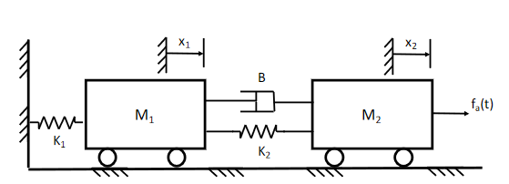
- Diagrams include:
- Masses
- Springs
- Dampers
Elements
There are element laws to model each of the three elements involved in mechanical systems. They are modelled using two key variables:
- Force $F(t)$ in newtons ($N$)
- Displacement $x(t)$ in meters ($m$)
- Also sometimes velocity $v(t) = \dot{x}$ in meters per second ($ms^{-1}$)
When modelling systems, some assumptions are made:
- Masses are all perfectly rigid
- Springs and dampers have zero mass
- All behaviour is assumed to be linear
Mass
- Stores kinetic/potential energy
- Energy storage is reversible
- Can put energy in OR take it out
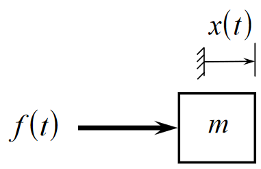
Elemental equation (Newton's second law):
$$m \frac{d^2}{dt^2}x = m\ddot{x} = ma = f(t)$$
Kinetic energy stored:
$$W = \frac{1}{2}mv^2$$
Spring
- Stores potential energy
- Also reversible energy store
- Can be stretched/compressed
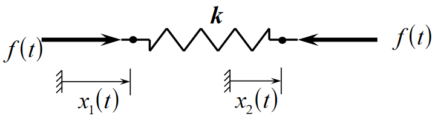
Elemental equation (Hooke's law):
$$f(t) = k(x_1(t) - x_2(t))$$
The spring constant k has units $Nm^{-1}$. Energy Stored:
$$W = \frac{1}{2} k (x_1 - x_2)$$
In reality, springs are not perfectly linear as per hooke's law, so approximations are made. Any mechanical element that undergoes a change in shape can be described as a stiffness element, and therefore modelled as a spring.
Damper
Dampers are used to reduce oscillation and introduce friction into a system.
- Dissapates energy as heat
- Non reversible energy transfer
- Takes energy out of the system

Elemental equation:
$$f(t) = B(\dot{x_1} - \dot{x_2})$$
B is the damper constant and has units $Nsm^{-1}$
Interconnection Laws
Compatibility Law
- Elemental velocities are identical at points of connection
Equilibrium Law
- Sum of external forces acting on a body equals mass x acceleration
- All forces acting on a body in equilibrium equals zero
Fictitious/D'alembert Forces
D'alembert principle is an alternative form of Newtons' second law, stating that the force on a body is equal to mass times acceleration: $F - ma = 0$. $-ma$ is the inertial, or fictitious force. When modelling systems, the inertial force always opposes the direction of motion.
Example:
Form a differential equation describing the system shown below.
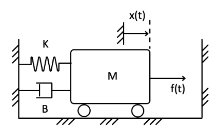
4 forces acting on the mass:
- Spring: $F = kx$
- Damper: $F = B\dot{x}$
- Inertial/Fictitious force: $F = m\ddot{x}$
- The force being applied, $f(t)$
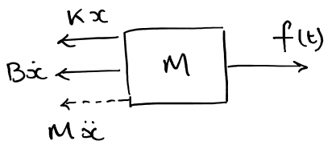
The forces all sum to zero:
$$f(t) - kx - B\dot{x} - m\ddot{x} = 0$$ $$f(t) = m\ddot{x} + B\dot{x} + kx$$
Rotational Mechanical Systems
Dynamic Systems
- A system is a set of interconnected elements which transfer energy between them
- In a dynamic system, energy between elements varies with time
- Systems interact with their environments through:
- Input
- System depends on
- Do no affect environment
- Output
- System does not depend on
- Affects Environment
- Input
- Mathematical models of dynamic systems are used to describe and predict behaviour
- Models are all, always approximations
Lumped vs Distributed Systems
- In a lumped system, properties are concentrated at 1 or 2 points in an element
- For example
- Inelastic mass, force acts at centre of gravity
- Massless spring, forces act at either end
- Modelled as an ODE
- Time is only independent variable
- For example
- In a distributed system, properties vary throughout an element
- For example, non-uniform mass
- Time and position are both independent variables
- Can be broken down into multiple lumped systems
Linear vs Non-Linear Systems
- For non-linear systems, model is a non-linear differential equation
- For linear systems, equation is linear
- In a linear system, the resultant response of the system caused by two or more input signals is the sum of the responses which would have been caused by each input individually
- This is not true in non-linear systems
Discrete vs Continuous Models
- In discrete time systems, model is a difference equation
- output happens at discrete time steps
- In continuous systems, model is a differential equation
- output is a continuous function of the input
Rotational Systems
Rotational systems are modelled using two basic variables:
- Torque $\tau$ measured in $Nm$
- A twisting force
- Analogous to force in Newtons
- Angular displacement $\theta$ measured in radians
- Angular velocity $\omega = \dot{\theta}$
- Analogous to displacement in meters
Element Laws
Moment of Inertia
- Rotational mass about an axis
- Stores kinetic energy in a reversible form
- Shown as rotating disc with inertia $J$, units $Kgm^2$
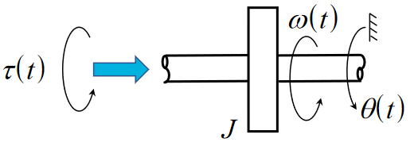
Elemental equation: $$\tau (t) = J \frac{d^2}{dt^2}\theta(t) = J \ddot{\theta}(t)$$
Energy Stored: $$W = \frac{1}{2} J \omega^2$$
The force $J \ddot{\theta}$ acts in the opposite direction to the direction the mass is spinning
Rotational Spring
- Stores potential energy by twisting
- Reversible energy store
- Produced torque proportional to the angular displacement at either end of spring
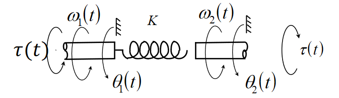
Elemental Equation:
$$\tau(t) = k(\theta_1(t) - \theta_2(t))$$
Stored Energy:
$$W = \frac{1}{2} k (\theta_1(t) - \theta_2(t))^2$$
Rotational Damper
- Dissapates energy as heat
- Non-reversible
- Energy dissapated $\propto$ angular velocity
Elemental Equation:
$$\tau(t) = B(\omega_1(t) - \omega_2(t))$$
Interconnection Laws
Compatibility Law
Connected elements have the same rotational displacement and velocity
Interconnection Law
D'alembert law for rotational systems:
$$\sum_i(\tau_{ext})_i - J\dot{\omega} = 0 $$
$J\dot{\omega}$ is considered an inertial/fictitious torque, so for a body in equilibrium, $\sum_i \tau_i = 0$.
Example
Form an equation to model the system shown below.
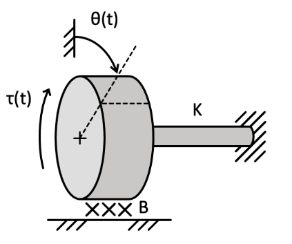
4 torques acting upon the disk:
- Stiffness element, $\tau=k\theta$
- Friction element, $\tau=B\dot{\theta}$
- Input torque $\tau(t)$
- Inertial force $\tau = J\ddot{\theta}$

The forces sum to zero, so:
$$ \tau(t) - k\theta - B\dot{\theta} - J\ddot{\theta} = 0$$
$$ \tau(t) = J\ddot{\theta}(t) + B\dot{\theta}(t) + k\theta(t) $$
Electrical Systems
Similar to mechanical systems, models of electrical systems can be constructed. Similar deal to ES191.
Variables
- Current $I(t)$ in amps (A)
- Voltage $e(t)$ in volts (V) -- not v for voltage, e is used in systems
- Power in watts $P = I(t)\cdot e(t)$
Elements
Capacitors
- Store electrical energy in a reversible form
- Capacitance $C$ measured in Farads (L)
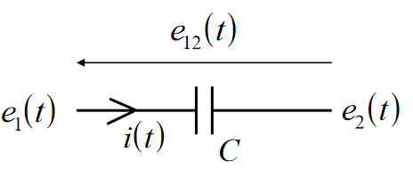
Elemental equation:
$$I(t) = C \frac{d}{dt}e_{12}(t)$$
Energy stored: $$W = \frac{1}{2}Ce^2$$
Inductors
- Store magnetic energy in a reversible form
- Inductance $L$ measured in Henries (H)

Elemental equation: $$e_{12}(t) = L \frac{d}{dt}I(t)$$
Energy Stored: $$W = \frac{1}{2}LI^2$$
Resistors
- Dissapates energy
- Non-reversible
- Resistance $R$ measured in Ohms ($\Omega$)
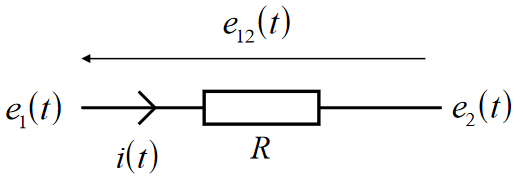
Elemental Equation (Ohm's law): $$e_{12}(t) = I(t) \cdot R$$
Voltage Source
- Provides an input of energy to the system.
- Input voltage $e_i(t)$
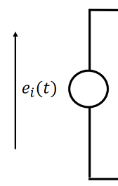
Kirchhoff's Laws
- Describe how elements interconnect and transfer energy between them
- KVL - voltages around a closed loop sum to zero
- KCL - currents about a node sum to zero
Example
Form a differential equation to model the following electrical system/circuit:

Elements:
- Resistor: $e_r = IR$
- Capacitor: $I = C \frac{d}{dt}e_c$
- Inductor: $e_L = L \frac{d}{dt}I$
KVL - the voltages round the loop sum to zero:
$$e_i - e_r - e_l - e_o = 0$$ $$e_i - IR - L\frac{dI}{dt} - e_o = 0$$
Using the capacitor equation, and the fact that $e_o = e_c$:
$$e_i - RC \frac{d}{dt}e_o - LC \frac{d^2}{dt^2}e_o - e_o = 0$$ $$LC \frac{d^2}{dt^2}e_o(t) + RC \frac{d}{dt}e_o(t) + e_o(t) = e_i(t)$$
Thermal Systems
- User to model heat transfer
- For example in a house
- Or in electronic components
- Determine efficiency of elements
- Determine thermal operating ranges for components
Variables
-
Rate of heat flow $q(t)$ in watts ($Js^{-1}$)
-
Temperature, $\theta(t)$ in Kelvins (K)
-
Analogous to current and voltage in electrical systems
Elements
Thermal Capacitor
- Stores heat energy in a reversible way
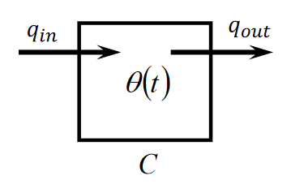
Elemental equation: $$q_c(t) = C \frac{d\theta}{dt}$$
Where $q_c(t)$ is the net heat flowing in, ie $q_{in}(t)-q_{out}(t)$.
Thermal Resistor
- Dissapates heat
- Non-reversible
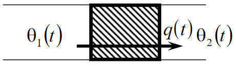
Any object that restricts heat flow when heat flows from on medium to another can be modelled as a resistor. Elemental equation: $$q(t) = \frac{1}{R}\theta_{12}(t)$$
Where $q_t$ is the flow of heat from the temperature $\theta_1$ on one side of the resistor to the temperature $\theta_2$ on the other.
Interconnection Laws
Compatibility Law:
- Temperatures are identical where elements touch,
- $\theta_1 = \theta_2 = ... = \theta_n$
Equilibrium Law:
- Elemental heat flow rates sum to zero at connection points
- $q_1 + q_2 + ... + q_n = 0$
Examples
Develop a thermal model for someone doing winter sports. Assume:
- Ambient temperature $\theta_a$
- Body temperature $\theta$
- Thermal resistance between body and ambient (the person is wearing a coat) $R$
- Heat generated by body $q_{in}$
The rate of heat flow out is the difference in ambient and body temperature accross the resistor: $$q_{out} = \frac{\theta-\theta_a}{R}$$
In the thermal capacitor, the net input heat is proportional to the rate of change of temperature: $$q_{in}-q_{out} = C \frac{d\theta}{dt}$$
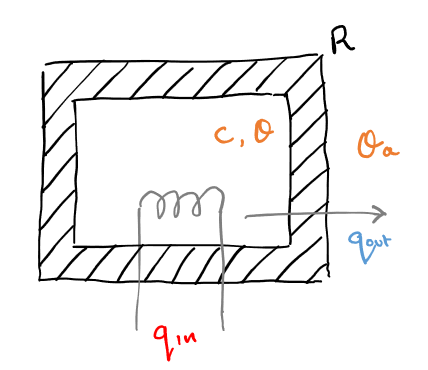
Combining the two equations gives: $$RC \frac{d}{dt}\theta + \theta = R q_{in} + \theta_a$$
Data Driven Models
- A system model can be developed from data describing the system
- Computational techniques can be used to fit data to a model
Modelling Approaches
White Box
- A white box model is a physical modelling approach, used where all the information about a system and its components is known.
- For example: "What is the voltage accross a 10 $\Omega$ resistor?"
- The value of the resistor is known, so a mathematical model can be developed using knowledge of physics (Ohm's law in this case)
- The model is then tested against data gathered from the system
Grey Box
- A grey box model is similar to white box, except where some physical parameters are unknown
- A model is developed using known physical properties, except some parameters are left unknown
- Data is then collected from testing and used to find parameted
- For example: "What is the force required to stretch this spring by $x$mm, when the stiffness is unknown"
- Using knowledge, $F=Kx$
- Test spring to collect data
- Find value of $K$ that best fits the data to create a model
- Final model is then tested
- Physical modelling used to get the form of the model, testing used to find unknown parameters
- This, and white box, is mostly what's been done so far
Black box
"Here is a new battery. We know nothing about it. How does it performance respond to changes in temperature?"
- Used to build models of a system where the internal operation of it is completely unknown: a "black box"
- Data is collected from testing the system
- An appropriate mathematical model is selected to fit the data
- The model is fit to the data to test how good it is
- The model is tested on new data to see how closely it models system behaviour
Modelling in Matlab
Regression
- Regression is predicting a continuous response from a set of predictor values
- eg, predict extension of a spring given force, temperature, age
- Learn a function that maps a set of predictor variables to a set of response variables
For a linear model of some data $y = p_1x + p_0$:
- $y$ and $x$ are the predictor variables from the data set
- $p_1$ and $p_0$ are the unknowns to be estimated from the data
- Polynomial models can be used for more complex data
In Matlab
% data points
x = 0:0.1:1.0;
y = 2 * x + 3;
%introduce some noise into the data
y_noise = y + 0.1*randn(11,1)';
%see the data
figure;
plot(x,y_noise);
axis([0 1 0 5])
In matlab, the polyfit function (matlab docs) is used to fit a polynomial model of a given degree to the data.
- Inputs: x data, y data, polynomial degree
- Output: coefficients of model
P = polyfit(x,y_noise,1) % linear model
hold on;
plot(x,polyval(P,x),'r');
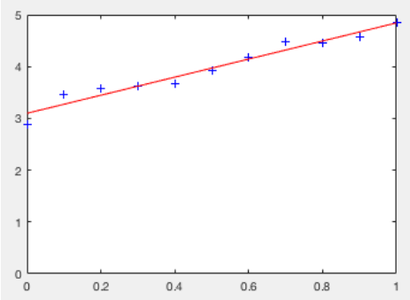
In the example shown, the model ended up as $y = 1.7456x + 3.0976$, which is close, but not exact due to noise introduced into the data.
Limitations
- Too complex of a model can lead to overfitting, where the model contains unwanted noise
- To overcome this:
- Use simpler model
- Collect more data
First Order Step Response
Modelling is about predicting the behaviour of a system. Often, need to know
- What is the output for a given input?
- Is the system stable?
- If the input changes quickly, how will the output change?
First Order Systems
First order systems are those with only one energy store, and can be modelled by a first order differential equation.
| Type | Equation |
|---|---|
| Electrical | $RC \frac{de_o}{dt} + e_o = e_i$ |
| Thermal | $RC \frac{d\theta}{dt} + \theta = \theta_a$ |
| Mechanical | $M\dot{v} + Bv = f(t)$ |
| General | $T \frac{dy}{dt} + y = x$ |
For the general form of the equation $T \frac{dy}{dt} + y = x$, the solution for a step input $x=H$ at time $t=0$, with $y(0) = 0$: $$y = H(1 - e^{-\frac{t}{T}})$$ T is the time constant of the system.
Free and Forced Response
- Free response:
- The response of a system to its stored energy when there is no input
- Zero Input
- Non-zero initial Conditions
- Homogenous differential equation
- Forced response:
- The response of a system to an input when there is no energy initially in the system
- Non-zero input
- Zero initial Conditions
- Non-homogeneous differential equation
- Total system response is a linear combination of the two
System Inputs
Different inputs can be used to determine characteristics of the system.
Step Input
$$ u(t) = \begin{cases} 0 & t < 0 \ H & t \geq 0 \end{cases} $$
- A sudden increase of a constant amplitude input
- Can see how quickly the system responds
- Is there is any delay/oscillation?
- Is it stable?
Sine Wave
- Can vary frequency and amplitude
- Shows frequency response of a system
Impulse
$$ u(t) = \begin{cases} 0 & t \neq 0 \ \infty & t = 0 \end{cases} $$
- A spike of infinite magnitude at an infinitely small time step
Ramp
$$ u(t) = \begin{cases} 0 & t < 0 \ kt & t \geq 0 \end{cases} $$
- An input that starts increasing at a constant rate, starting at $t=0$.
Step Response
- The step response of the system is the output when given a step input
- System must have zero initial conditions
- Characteristics of a response:
- Final/resting value
- Rise time
- Delay
- Overshoot
- Oscillation (frequency & damping factor)
- Stability
For a system with time constant $T=10$, the response looks something like this:
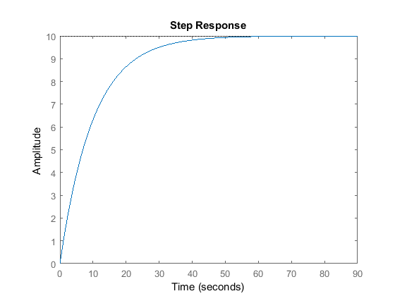
The time constant $T$ of a system determines how long the system takes to respond to step input. After 1 time constant, the system is at about $1-\frac{1}{e}$ (63) % of its final value.
| Time (s) | % of final value |
|---|---|
| $0.5T$ | 39.3% |
| $T$ | 63.2% |
| $2T$ | 86.5% |
| $3T$ | 95.0% |
| $4T$ | 98.2% |
| $5T$ | 99.3% |
Second Order Step Response
How 2nd order systems (those with 2 energy storing elements) respond to step inputs.
Standard form
$$\frac{1}{\omega_n^2} \frac{d^2}{dt^2}y(t) + \frac{2\zeta}{\omega_n} \frac{d}{dt} y(t) + y(t) = u(t)$$
- $\omega_n$ is the undamped frequency of the system response
- Indicates the speed of the response
- $\zeta$ is the damping factor
- Indicates the shape of the response
Forced Response
- Forces response is the response to a non-zero input, namely
- Step
- Sinusoidal
- Initial conditions are zero, it $y(0) = 0$, $\frac{d}{dt}y(0) = 0$
- The response is the solution to a non-homogeneous second order differential equation
Damped Response
There are 4 different cases for system response:
| Damping Factor | Response |
|---|---|
| $\zeta = 0$ | No Damping |
| $0 < \zeta < 1$ | Underdamped |
| $\zeta = 1$ | Critically Damped |
| $\zeta > 1$ | Overdamped |
The response of a system to the same input with varying damping factors is shown in the graph below, from the data book. The equations are also given in the data book.
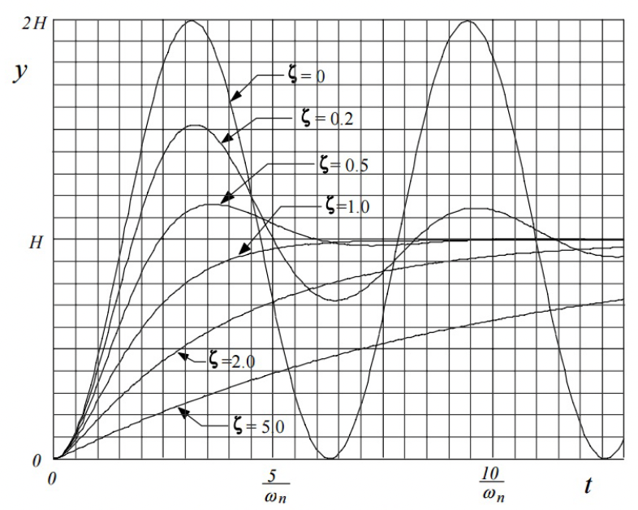
Undamped
The system is not damped at all and is just a normal sinusoidal wave.
$$y(t) = H(1-\cos \omega_n t)$$
Underdamping
The amplitude of the sinusoidal output decreases slowly over time to a final "steady state" value.
$$y(t) = H [ 1 - \frac{e^{-\zeta \omega_n t}}{\sqrt{1-\zeta^2}} \sin(\sqrt{1-\zeta^2}\omega_nt + \phi)]$$ $$\tan \phi = \frac{\sqrt{1-\zeta^2}}{\zeta}$$
Critical Damping
This gives the fastest response, where the output rises to its final steady state value.
$$y(t) = H (1-(\omega_nt)e^{-\omega_nt})$$
Overdamping
The output rises slowly to its steady state value $$y(t) = H [ 1 - \frac{e^{-\zeta \omega_n t}}{\sqrt{\zeta^2 -1}} \sinh(\sqrt{\zeta^2-1}\omega_nt + \phi)]$$ $$\tan \phi = \frac{\sqrt{\zeta^2-1}}{\zeta}$$
Transfer Functions
- A transfer function is a representation of the system which maps from input to output
- Useful for system analysis
- Carried out in the Laplace Domain
The Laplace Domain
- Problems can be easier to solve in the Laplace domain, so the equation is Laplace transformed to make it easier to work with
- Given a problem such as "what is the output $y(t)$ given a differential equation in $y$ and the step input $u(t)$?"
- Express step input in Laplace domain $U(s)$
- Express differential equation in Laplace domain and find transfer function $G(s)$
- Find output $Y(s) = U(s)G(s)$ in Laplace domain
- Transfer back to time domain to get $y(t)$
| Function | Time domain | Laplace domain |
|---|---|---|
| Input | $u(t)$ | $U(s)$ |
| Output | $y(t)$ | $Y(s)$ |
| Transfer | $g(t)$ | $G(s)$ |
The laplace domain is particularly useful in this case, as a differential equation in the time domain becomes an algebraic one in the Laplace domain. $$\mathcal{L}(\frac{dy}{dx}) = sY(s) - y(0)$$
Transfer Function Definition
The transfer function is the ratio of output to input, given zero initial conditions. $$G(s) = \frac{Y(s)}{U(s)} $$
For a general first order system of the form $$T \frac{d}{dt}y(t) + y(t) = u(t)$$
The transfer function in the Laplace domain can be derived as: $$T \cdot \mathcal{L}(\frac{d}{dt}y(t)) + \mathcal{L}(y(t)) = \mathcal{L}(u(t))$$ $$T(sY(s)) + Y(s) = U(s)$$ $$Y(s)(Ts+1) = U(s)$$ $$G(s) = \frac{Y(s)}{U(s)} = \frac{1}{Ts+1}$$
Step Input in the Laplace Domain
Step input has a constant value $H$ for $t > 0$ $$\mathcal{L}(H) = \frac{H}{s} = U(s)$$
For a first order system, the output will therefore be: $$Y(s) = U(s)G(s) = \frac{H}{s} \frac{1}{Ts+1}$$ $$y(t) = \mathcal{L}^{-1}(\frac{H}{s} \cdot \frac{1}{Ts+1}) = H(1 - e^{\frac{t}{T}})$$
Example
Find the transfer function for the system shown:

The system has input-output equation (in standard form): $$\frac{J}{B}\dot{\omega}(t) + \omega(t) = \frac{1}{B}\tau(t)$$
Taking the Laplace transform of both sides: $$\frac{J}{B}s\Omega(s) + \Omega(s) = \frac{1}{B}\Tau(s)$$
Rearranging to obtain the transfer function: $$G(s) = \frac{\Omega(s)}{\Tau(s)} = \frac{1}{B} \cdot \frac{1}{\frac{J}{B}s + 1} = \frac{1}{Js + B}$$
Using Matlab
In matlab the tf function (Matlab docs) can be used to generate a system model using it's transfer function. For example, those code below generates a transfer function $G(s) = \frac{1}{2s+3}$, and then plots it's response to a step input of amplitude 1.
G = tf([1],[2 3]);
step(G);
Example
For the system shown below, where $M=100$, $B =40$, $K=100$, plot the step response and obtain the undamped natural frequency $\omega_n$ and damping factor $\zeta$.

$$G(s) = \frac{1}{s^2M +sB + K} = \frac{1}{100s^2+40s+100}$$
system = tf([1],[100 40 100]);
step(system, 15); % plot 15 seconds of the response
%function to obtain system parameters
[wn,z] = damp(system)
The script will output wn=1, and z = 0.2. The plotted step response will look like:

First Order Frequency Response
Frequency response is is the response of a system to a sinusoidal/oscillating input.
Response to Sinusoidal input
For a standard first order system $T\frac{d}{dt}y(t) + y(t) = u(t)$, with a sinusoidal input $u(t) = Asin(\omega t)$:
$$U(s) = \mathcal{L}(u(t)) = \frac{A\omega}{s^2 + \omega^2}$$ $$Y(s) = U(s)G(s) = \frac{A\omega}{s^2 + \omega^2} \frac{1}{Ts+1}$$ $$y(t) = \mathcal{L}^{-1}(Y(s)) = \frac{A}{\sqrt{1+\omega^2T^2}} sin(\omega t - \tan^{-1}\omega T) + \frac{A \omega T}{1 + \omega^2 T^2} e^{-\frac{t}{T}}$$
The sinusoidal part of the equation is the steady-state that the response tends to, and the exponential part is the transient part that represents the rate of decay of the offset of the oscillation.
- The frequency of input and output is always the same
- It is the amplitude and phase shift $\phi$ that change
- These depend on the input frequency $\omega$
- This dependence is the frequency response
Example
The example below shows an input $sin(4 \pi t)$, and its output with $G(s) = \frac{1}{s+1}$
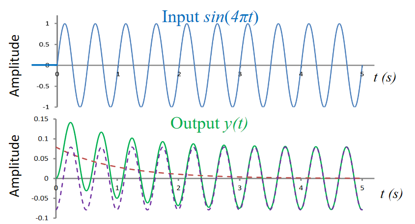
$$y(t) = 0.0793sin(4\pi t + \phi) + 0.079 e^{-t}, ;; \phi = -\tan^{-1} 4\pi = -85^{\circ}$$
The steady state sinusoidal and transient exponential part of this response can be seen in the equation.
Matlab Example
The following code generates the following plot
system = tf(1,[1 1]);
t = 0:0.01:3; % time value vector
u = (t>=1).*sin(4 * pi * t) %input signal for t >= 1
y = lsim(sys,u,t); % simulate system with input u
figure;
subplot(2,1,1); plot(t,u); title("input");
subplot(2,1,2); plot(t,y,'r'); title("outputA");
Gain and Phase
Gain is the ratio of output to input amplitude, ie how much bigger or smaller the output is compared to input.
$$G = \frac{E}{A}(\omega)$$
Phase difference $\phi (\omega )$ is how much the output signal is delayed compared to the input signal. Both are functions of input frequency $\omega$.
The frequency response can be obtained by substituting $j \omega$ for $s$ in the transfer function. This gives a complex function as shown
$$G(s) = \frac{1}{Ts+1} \Longrightarrow G(j\omega) = \frac{1}{Gj\omega + 1}$$
Magnitude $|G(j \omega) |$ gives the amplitude of the response, and the argument of the complex number $\angle G(j \omega)$ gives the phase shift $\phi$. The substitution $s=j \omega$ is used, is because in the Laplace domain, both signals and systems are represented by functions of $s$.
- The $s$-plane is the complex plane on which Laplace transforms are graphed.
- Generally, $s=\sigma + j\omega$
- $\sigma$ is the Neper frequency, the rate at which the function decays
- $\omega$ is the radial frequency, the rate at which the function oscillates
- Periodic sinusoidal inputs are non decaying, so $\sigma = 0$, giving $s=j\omega$
To find the frequency response parameters:
$$G(j\omega) = \frac{1}{1 + j \omega T} \times \frac{1 - j \omega T}{1 - j \omega T} = \frac{1 - j \omega T}{1 + \omega^2 T^2} $$ $$ = \frac{1}{1 + \omega^2 T^2} - j \frac{\omega T}{1 + \omega^2 T^2}$$ $$ = Re(G) - j Im(G)$$ $$|G(j \omega) | = \sqrt{(Re(G))^2 + (Im(G))^2} = \frac{1}{\sqrt{1+\omega^2T^2}}$$
$$\angle G(j\omega) = \tan^{-1} \frac{Im(G)}{Re(G)} = - \tan^{-1} \omega T$$
The graphs below show the frequency response in terms of $T$ for varying frequency $\omega$:
Example
Given a transfer function $G= \frac{1}{s}$, what is the magnitude and phase of frequency response? $$G(j \omega) = \frac{1}{j\omega} = \frac{-j}{\omega} = 0 - \frac{1}{\omega}j$$ $$|G(j\omega)| = \sqrt{\frac{1}{\omega^2}} = \frac{1}{\omega}$$ $$\angle G(j\omega) = \tan^{-1} \frac{\frac{-1}{\omega}}{0} = - \frac{\pi}{2}$$
Bode Plots
Bode plots show frequency and amplitude of frequency response on a log$_{10}$ scale. Information is not spread linearly accross the frequency range, so it makes more sense to use a logarithmic scale. An important feature of bode plots is the corner frequency: the frequency at the point where the two asymptotes of the magnitude-frequency graph. This point is where $\omega =\frac{1}{T}$.
The plot above is for the function $G(s) = \frac{1}{s+1}$. The gain is measured in decibels $dB$ for the magnitude of the response.
Second Order Frequency Response
How second order systems respond to sinusoidal/oscillating input. Similar to first order.
Gain and Phase for Second Order Systems
For a 2nd order system in standard input-output form:
$$\frac{1}{\omega_n^2} \frac{d^2}{dt^2}y(t) + \frac{2\zeta}{\omega_n} \frac{d}{dt} y(t) + y(t) = u(t), ;; y(0) = 0, ;; \frac{d}{dt}y(0) = 0$$ $$G(s) = \frac{\omega_n^2}{s^2 + 2\zeta\omega_n s + \omega_n^2}$$ $$G(j\omega) = \frac{\omega^2_n}{(\omega_n^2 - \omega^2) + 2j\zeta \omega_n \omega}$$
The gain and phase of the frequency response are therefore:
$$|G(j\omega)| = \frac{\omega_n^2}{[(\omega_n^2 - \omega^2)^2 + 4 \zeta^2 \omega_n^2 \omega^2]^{1/2}}$$
$$\phi(\omega) = \angle G(j\omega) = -\tan^{-1}\frac{2 \zeta \omega_n \omega}{\omega_n^2 - \omega^2}$$
Bode Plots, from Data Book

The plots show gain and phase shift for varying values of $\zeta$
Example
For the electrical system shown below with the values $R = 1 k ,\Omega$, $C = 0.1 , \mu F$, $L = 0.1 H$ find:
- The undamped natural frequency $\omega_n$
- The damping factor $\zeta$
- Sketch the magnitude of the frequency response $|G(j\omega)|$
- At what frequency is this at it's maximum?
- Sketch a bode plot using matlab
The system equation is: $$LC \frac{d^2}{dt^2}e_o(t) + RC \frac{d}{dt}e_o(t) + e_o(t) = e_i(t)$$
Undamped natural frequency: $$\frac{1}{\omega^2_n} = LC = 10^{-8} \Longrightarrow \omega_n = 10^4 , rads^{-1} $$
Damping factor: $$\frac{2\zeta}{\omega_n} = RC = 10^4 \Longrightarrow \zeta = 0.5$$
Using the graph from the data book
The graph peaks at approx $|G(j\omega)| = 1.15$, so: $$\omega \approxeq 0.71 \omega_n = 0.71 \times 10^4 ,rads^{-1}$$ $$f = \frac{0.71 \times 10^4}{2 \pi} = 1129 ,Hz$$
Matlab plot:
R = 1000
C = 10e-7
L = 0.1
sys = tf([1],[L*C R*C 1]); figure; step(sys);
bode(sys);